1. 우리 몸 세포 하나하나의 핵(nucleus) 속에 염색체(chromosome)가 46개(23쌍) 들어 있다.
한 짝은 엄마에게서, 한 짝은 아빠에게서 왔다.
2. 염색체는 아주 긴 DNA 한 가닥이 감긴 것이고, 그 DNA의 짧은 구간 하나가 유전자(gene)다.
유전자 하나가 형질(characteristic) 하나를 조절한다.
크기 순서는 염색체 > 유전자 > DNA다.
3. 정자와 난자(생식세포 gamete)만 염색체가 23개다.
그래서 둘이 합쳐진(수정 fertilisation) 새 세포 접합자(zygote)가 다시 46개가 된다.
4. 23번째 쌍이 성염색체(sex chromosome)다. XX면 여자, XY면 남자.
난자는 항상 X, 정자만 X 또는 Y를 갖는다 → 아기 성별은 아빠 쪽 정자가 정한다.
5. 같은 유전자의 다른 버전을 대립유전자(allele)라고 한다.
자매인데도 눈 색이 다른 이유가 이것이다.
과학하는 방법Working Scientifically탐구
바꾸는 것(물 온도) = 독립변인, 재는 것 = 종속변인, 같게 두는 것 = 통제변인.
✍️ 꼭 알아야 하는 것
- 독립변인(independent)·종속변인(dependent)·통제변인(control) 구분하기
- 예측과 결론의 차이
🎬 이 자료에 딸린 영상
▶The scientific method (과학 탐구 방법)선생님Teacher's Pet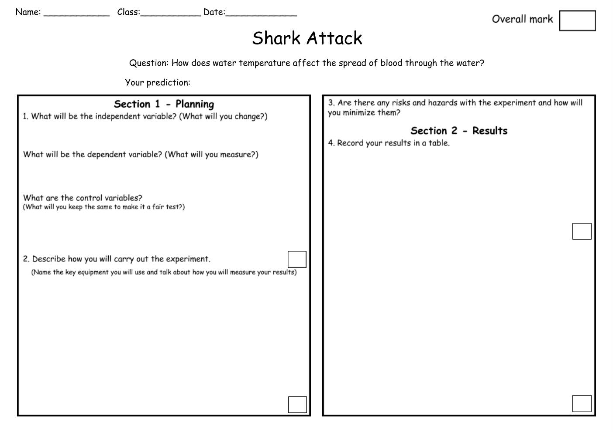
반
날짜
총점 칸.
질문 — 물의 온도는 물속에서 피가 퍼지는 데 어떤 영향을 주는가?
너의 예측을 먼저 쓴다.
Section 1 계획 — 1. 독립변인은 무엇인가?(무엇을 바꿀 것인가)
종속변인은 무엇인가?(무엇을 잴 것인가)
통제변인은 무엇인가?(공정한 실험이 되게 같게 둘 것)
2. 실험을 어떻게 할지 설명하시오(쓸 기구 이름과 결과 재는 방법).
Section 2 결과 — 3. 이 실험에 위험한 점이 있는가, 어떻게 줄일 것인가?
4. 결과를 표로 기록하시오.
여기서 답은 독립변인 = 물의 온도, 종속변인 = 피가 퍼진 정도(또는 걸린 시간), 통제변인 = 물의 양·피의 양·그릇 크기다.
예측은 실험을 하기 전에 쓰는 것이다.
결과를 보고 고쳐 쓰면 안 된다.
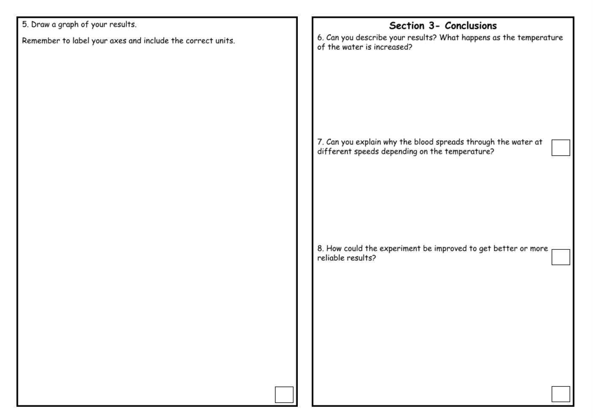
축에 이름을 붙이고 단위를 꼭 넣으시오.
온도가 가로축, 퍼진 정도(또는 시간)가 세로축이다. 축 이름과 단위를 빠뜨리면 점수가 깎이는 자리다.
물의 온도가 올라가면 어떤 일이 일어나는가?
7. 온도에 따라 피가 물속에서 퍼지는 속도가 다른 이유를 설명할 수 있는가?
8. 더 좋고 믿을 만한 결과를 얻으려면 이 실험을 어떻게 개선할 수 있을까?
7번은 온도가 높을수록 입자가 빨리 움직여 더 빨리 퍼진다가 핵심이다.
8번 같은 '개선 방법' 문제의 정답은 대개 여러 번 반복해서 평균을 낸다이다.
9B1-1 연속·불연속 변이Continuous and Discontinuous Variation생물
변이(variation)는 같은 종(species) 안에서도 개체마다 생김새나 성질이 서로 다른 것을 말한다. 사람의 키, 눈 색깔, 혈액형처럼 사람마다 다른 것이 모두 변이다. 이 단원은 그 차이가 왜 생기는지, 어떻게 나뉘는지를 배우는 부분이다.
변이는 크게 두 가지로 나눈다. 연속변이(continuous variation)는 키나 몸무게처럼 중간값이 무수히 많아 자로 재듯 이어지는 변이이고, 불연속변이(discontinuous variation)는 혈액형처럼 몇 가지 정해진 칸으로만 나뉘는 변이다. 연속변이는 보통 그래프로 그리면 가운데가 볼록한 모양이 나오고, 불연속변이는 막대 몇 개로 딱딱 끊어져 나온다.
변이가 생기는 원인도 두 갈래로 본다. 하나는 부모에게서 물려받은 유전(genetic) 요인이고, 다른 하나는 먹는 것·햇빛·운동 같은 환경(environmental) 요인이다. 키처럼 유전과 환경이 함께 작용하는 형질도 많다는 점을 같이 기억하는 것이 좋다.
✍️ 꼭 알아야 하는 것
- 연속변이와 불연속변이의 차이, 그리고 각각의 예시를 구분해서 말할 수 있어야 한다.
- 어떤 변이가 유전 때문인지, 환경 때문인지, 둘 다인지 판단할 수 있어야 한다.
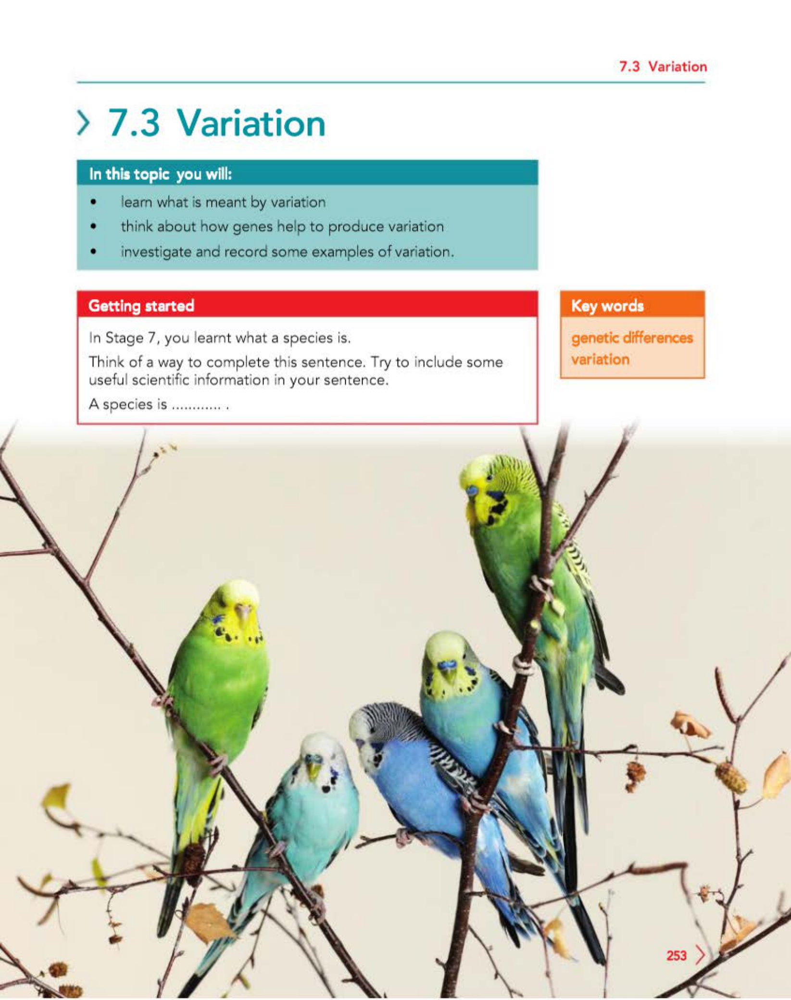
이 단원에서 배울 것:
• 변이(variation)가 무엇을 뜻하는지 배운다
• 유전자(genes)가 어떻게 변이를 만들어 내는지 생각해 본다
• 변이의 몇 가지 예를 조사하고 기록한다
시작하기(Getting started)
7학년(Stage 7)에서 종(species)이 무엇인지 배웠다.
아래 문장을 완성할 방법을 생각해 본다. 문장에 쓸모 있는 과학 정보를 넣어 본다.
종(species)은 ………… 이다.
핵심 낱말(Key words)
유전적 차이(genetic differences)
변이(variation)
그림: 나뭇가지에 앉은 사랑앵무(잉꼬) 다섯 마리. 초록·노랑 몸을 가진 새, 하늘색 몸을 가진 새, 파란 몸을 가진 새처럼 깃털 색이 서로 다르다.
사진 속 앵무새들은 모두 같은 종(species)이지만 깃털 색이 서로 다르다. 이렇게 같은 종 안에서 개체끼리 나타나는 차이를 변이(variation)라고 한다. 종은 '서로 짝짓기해서 번식할 수 있는 자손을 낳는 생물의 무리(a group of organisms that can breed together to produce fertile offspring)'라고 쓰면 된다.
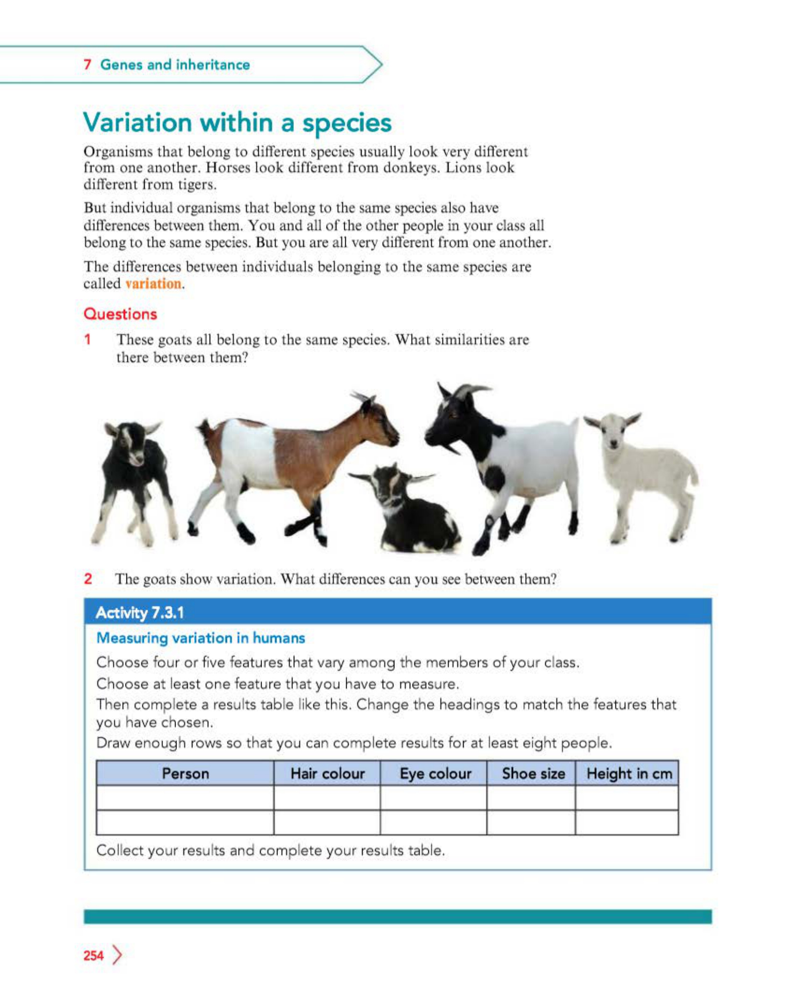
한 종 안의 변이(Variation within a species)
서로 다른 종(species)에 속한 생물은 보통 서로 매우 다르게 생겼다. 말은 당나귀와 다르게 생겼다. 사자는 호랑이와 다르게 생겼다.
그런데 같은 종에 속한 개체(individual organisms)들 사이에도 차이가 있다. 너와 너희 반의 다른 모든 사람은 같은 종에 속한다. 하지만 너희는 모두 서로 매우 다르다.
같은 종에 속한 개체들 사이의 차이를 변이(variation)라고 한다.
질문(Questions)
1 이 염소들은 모두 같은 종에 속한다. 이 염소들 사이에는 어떤 공통점(similarities)이 있는가?
(그림: 염소 다섯 마리 — 검정·흰색 새끼 염소, 갈색·흰색 염소, 앉아 있는 검정·흰색 새끼 염소, 뿔 난 검정·흰색 염소, 흰색 새끼 염소)
2 이 염소들은 변이를 보여 준다. 이 염소들 사이에서 어떤 차이점(differences)을 볼 수 있는가?
활동 7.3.1 사람의 변이 측정하기(Measuring variation in humans)
반 친구들 사이에서 서로 다른 특징(features)을 네다섯 가지 고른다.
그중 적어도 하나는 직접 재야 하는(measure) 특징으로 고른다.
그다음 아래와 같은 결과표(results table)를 완성한다. 표의 제목 칸은 네가 고른 특징에 맞게 바꾼다.
적어도 여덟 명의 결과를 채울 수 있도록 줄을 충분히 그린다.
표 제목 칸: 사람(Person) | 머리카락 색(Hair colour) | 눈 색(Eye colour) | 신발 크기(Shoe size) | 키(cm)(Height in cm)
결과를 모아 결과표를 완성한다.
254쪽
질문 1의 공통점은 네 다리·뿔·귀·털 같은 몸의 기본 구조이고, 질문 2의 차이점은 털 색깔과 무늬·몸 크기·뿔의 길이 등이다. 표에서 머리카락 색·눈 색은 몇 가지로 나뉘는 불연속 변이(discontinuous variation), 키·신발 크기는 재어서 이어지는 값이 나오는 연속 변이(continuous variation)라는 점을 기억하면 좋다.
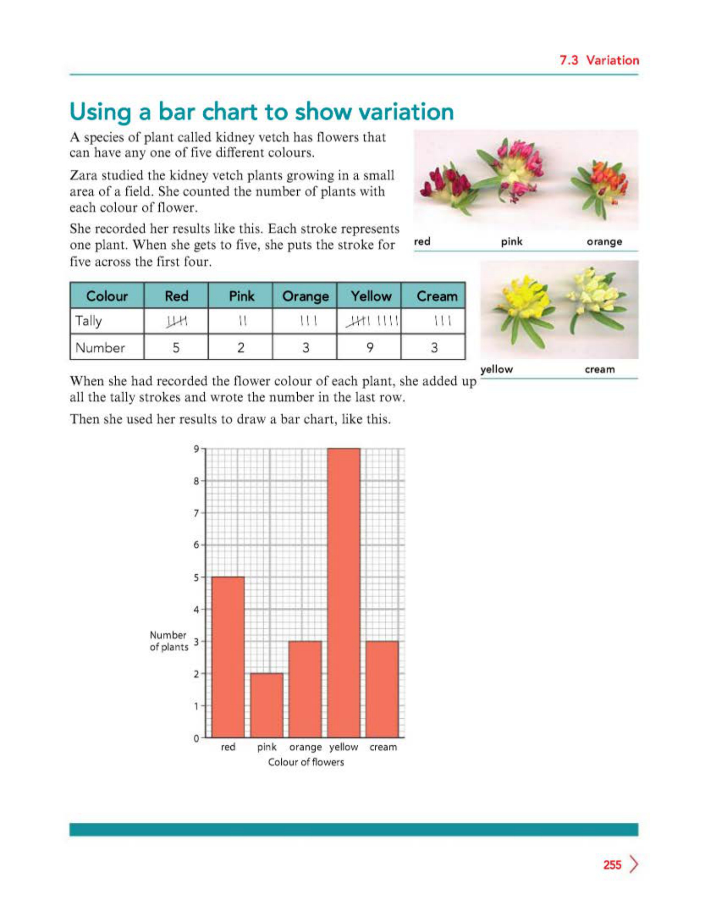
콩과 식물 키드니 베치(kidney vetch)라는 식물 종(species)의 꽃은 다섯 가지 색 중 하나를 띤다.
자라는 들판의 좁은 구역에서 자라는 키드니 베치를 조사했다. 꽃 색깔별로 식물 수를 셌다.
자라는 결과를 이렇게 기록했다. 획 하나가 식물 한 그루를 나타낸다. 다섯 번째가 되면 앞의 네 획을 가로지르는 획을 긋는다(집계 표시, tally).
[사진] 빨강(red) · 분홍(pink) · 주황(orange) · 노랑(yellow) · 크림색(cream) 꽃
[표]
색깔(Colour): 빨강 · 분홍 · 주황 · 노랑 · 크림색
집계(Tally): 𝍸 · || · ||| · 𝍸 |||| · |||
수(Number): 5 · 2 · 3 · 9 · 3
식물마다 꽃 색을 다 기록한 뒤, 집계 획을 모두 더해 마지막 줄에 수를 적었다.
그다음 결과로 이런 막대그래프(bar chart)를 그렸다.
[막대그래프]
세로축: 식물 수(Number of plants) 0~9
가로축: 꽃 색깔(Colour of flowers)
빨강 5, 분홍 2, 주황 3, 노랑 9, 크림색 3
꽃 색깔은 딱 떨어지는 몇 가지로만 나뉘는 불연속 변이(discontinuous variation)라서 막대 사이를 띄운 막대그래프로 그린다. 키·몸무게처럼 값이 이어지는 연속 변이(continuous variation)는 막대를 붙인 히스토그램(histogram)을 쓴다.
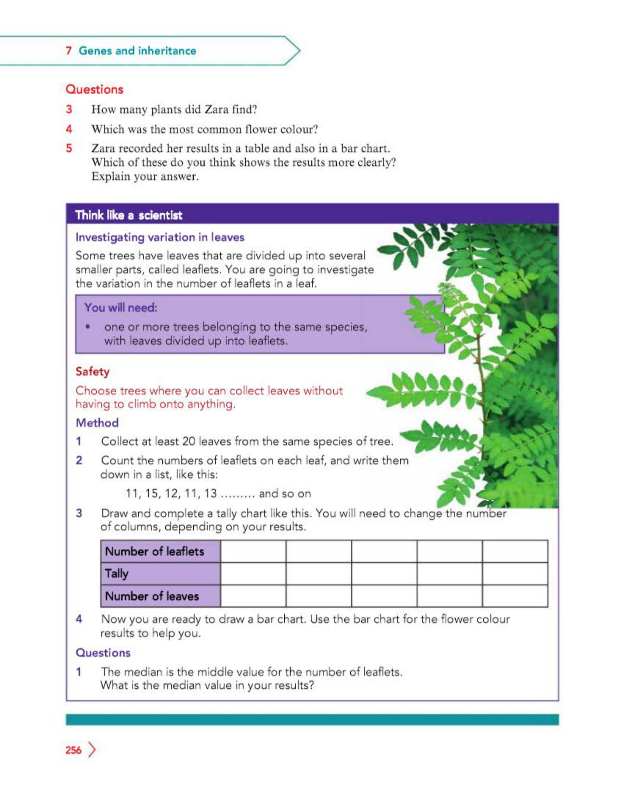
질문
3 자라는 식물을 몇 포기 찾았는가?
4 가장 흔한 꽃 색깔은 무엇이었는가?
5 자라는 결과를 표(table)와 막대그래프(bar chart)에 모두 기록했다. 둘 중 어느 쪽이 결과를 더 알아보기 쉽게 보여 준다고 생각하는가? 답의 이유를 설명하라.
과학자처럼 생각하기(Think like a scientist)
잎의 변이 조사하기(Investigating variation in leaves)
어떤 나무는 잎이 여러 개의 작은 조각으로 나뉘어 있는데, 이 조각을 작은잎(leaflet)이라고 한다. 잎 하나에 달린 작은잎 개수의 변이(variation)를 조사할 것이다.
준비물:
• 잎이 작은잎으로 나뉘어 있는, 같은 종(same species)에 속하는 나무 한 그루 이상
안전(Safety)
어디에도 올라가지 않고 잎을 딸 수 있는 나무를 고른다.
방법(Method)
1 같은 종의 나무에서 잎을 20장 이상 모은다.
2 잎마다 작은잎 개수를 세어 다음처럼 목록으로 적는다.
11, 15, 12, 11, 13 …… 이런 식으로 계속
3 아래와 같은 집계표(tally chart)를 그려 채운다. 결과에 따라 칸(열) 수를 바꿔야 한다.
[표] 작은잎 개수(Number of leaflets) / 집계 표시(Tally) / 잎의 수(Number of leaves) — 세 줄에 빈칸 다섯 개씩
4 이제 막대그래프를 그릴 준비가 되었다. 꽃 색깔 결과를 나타낸 막대그래프를 참고한다.
질문
1 중앙값(median)은 작은잎 개수에서 한가운데 값이다. 너의 결과에서 중앙값은 얼마인가?
(오른쪽에는 작은잎이 여러 쌍으로 달린 초록색 나뭇잎 사진이 있다.)
중앙값(median)은 모든 값을 작은 것부터 큰 것 순서로 줄 세운 뒤 딱 가운데 있는 값이다. 값이 짝수 개(예: 20개)이면 가운데 두 값(10번째와 11번째)의 평균을 구한다. 작은잎 개수처럼 셀 수 있는 정수 값은 막대그래프로 나타낸다.
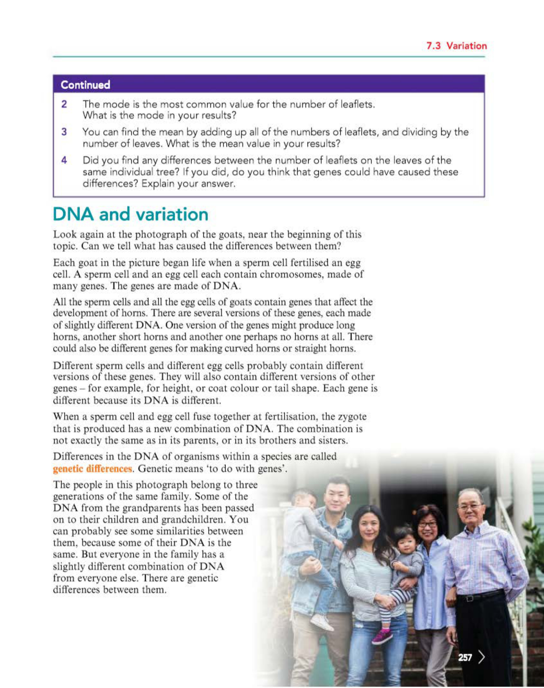
이어서
2. 최빈값(mode)은 작은잎(leaflet) 수에서 가장 많이 나온 값이다. 여러분 결과에서 최빈값은 얼마인가?
3. 작은잎 수를 모두 더한 뒤 잎(leaf)의 개수로 나누면 평균(mean)을 구할 수 있다. 여러분 결과에서 평균값은 얼마인가?
4. 같은 나무 한 그루에 달린 잎들 사이에서 작은잎 수가 달랐는가? 달랐다면 그 차이를 유전자(genes)가 만들었다고 생각하는가? 답의 이유를 설명하라.
DNA와 변이(DNA and variation)
이 단원 앞부분에 나온 염소 사진을 다시 보자. 염소들 사이의 차이가 무엇 때문에 생겼는지 알 수 있을까?
사진 속 염소는 모두 정자(sperm cell)가 난자(egg cell)를 수정(fertilised)시키면서 삶을 시작했다. 정자와 난자에는 각각 여러 유전자로 이루어진 염색체(chromosomes)가 들어 있다. 유전자는 DNA로 이루어져 있다.
염소의 모든 정자와 난자에는 뿔이 자라는 데 영향을 주는 유전자가 들어 있다. 이 유전자에는 여러 가지 형태가 있고, 형태마다 DNA가 조금씩 다르다. 어떤 형태는 긴 뿔을, 다른 형태는 짧은 뿔을, 또 다른 형태는 뿔이 아예 없게 만들 수도 있다. 뿔을 휘게 하거나 곧게 만드는 유전자가 따로 있을 수도 있다.
정자와 난자는 서로 다른 형태의 유전자를 가지고 있을 가능성이 크다. 키·털 색깔·꼬리 모양 같은 다른 유전자도 서로 다른 형태를 가진다. 유전자가 서로 다른 것은 DNA가 다르기 때문이다.
수정(fertilisation) 때 정자와 난자가 합쳐지면 만들어진 접합자(zygote)는 DNA의 새로운 조합(new combination)을 가진다. 이 조합은 부모나 형제자매와 완전히 똑같지 않다.
같은 종(species) 안에서 생물마다 DNA가 다른 것을 유전적 차이(genetic differences)라고 한다. 유전적(genetic)이란 '유전자와 관련된'이라는 뜻이다.
이 사진 속 사람들은 한 가족의 세 세대(generations)다. 조부모의 DNA 일부가 자녀와 손주에게 전해졌다. DNA 일부가 같아서 서로 닮은 점이 보인다. 하지만 가족 모두 DNA 조합이 서로 조금씩 달라서 그들 사이에는 유전적 차이가 있다.
(사진: 할아버지·할머니, 아이를 안은 젊은 부부, 어린 아이 둘이 집 앞 계단에 함께 서 있는 3대 가족)
같은 나무에 달린 잎들은 유전자가 모두 같으므로, 그 잎들의 작은잎 수 차이는 유전자 때문이 아니라 환경(environment) 때문이다. 자녀는 부모에게서 DNA를 절반씩 새로 조합해 받기 때문에 가족끼리 닮았어도 똑같지는 않다.
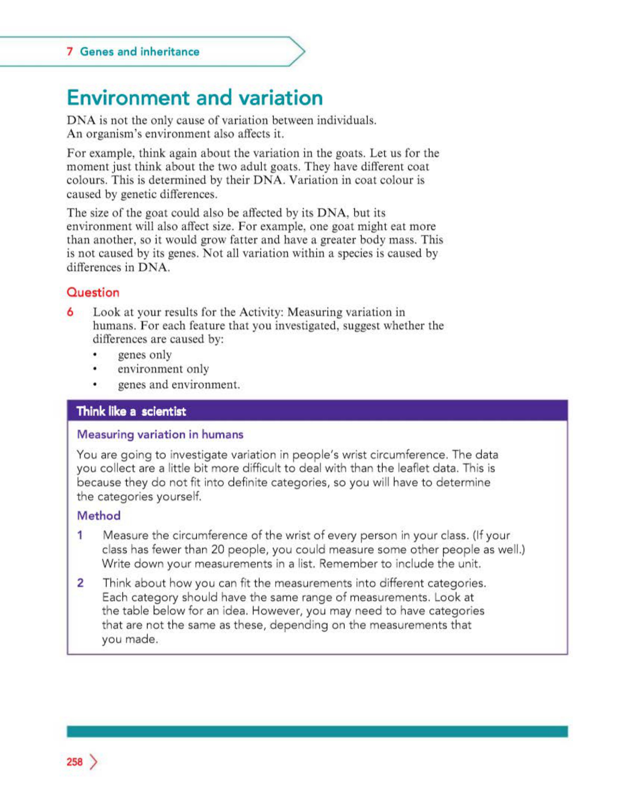
환경과 변이(Environment and variation)
개체마다 차이가 나는 까닭이 DNA뿐인 것은 아니다. 생물이 사는 환경(environment)도 변이에 영향을 준다.
예를 들어 앞에서 본 염소들의 변이를 다시 생각해 보자. 여기서는 어른 염소 두 마리만 본다. 두 염소는 털 색깔이 다르다. 털 색깔은 DNA가 정한다. 즉 털 색깔 변이는 유전적 차이(genetic differences) 때문에 생긴다.
염소의 몸 크기도 DNA의 영향을 받을 수 있지만, 환경도 크기에 영향을 준다. 예를 들어 한 염소가 다른 염소보다 더 많이 먹으면 더 살이 찌고 체질량(body mass)이 더 커진다. 이것은 유전자 때문이 아니다. 한 종(species) 안의 변이가 모두 DNA 차이 때문에 생기는 것은 아니다.
질문(Question)
6. 활동 '사람의 변이 측정하기'의 결과를 보라. 조사한 특징마다, 그 차이가 무엇 때문에 생겼는지 제시하라.
• 유전자만(genes only)
• 환경만(environment only)
• 유전자와 환경 둘 다(genes and environment)
과학자처럼 생각하기(Think like a scientist)
사람의 변이 측정하기(Measuring variation in humans)
사람들의 손목 둘레(wrist circumference) 변이를 조사한다. 이번에 모으는 자료는 앞의 잎 자료보다 다루기가 조금 더 어렵다. 정해진 범주(categories)에 딱 들어맞지 않아서 범주를 스스로 정해야 하기 때문이다.
방법(Method)
1. 반 친구 모두의 손목 둘레를 잰다. (반 인원이 20명보다 적으면 다른 사람도 더 재도 된다.) 잰 값을 목록으로 적는다. 단위(unit)를 꼭 함께 적는다.
2. 잰 값을 어떻게 여러 범주로 나눌지 생각한다. 각 범주는 같은 크기의 범위(same range)를 가져야 한다. 아래 표를 참고하라. 다만 잰 값에 따라 표와 다른 범주가 필요할 수도 있다.
(쪽 번호 258)
털 색깔처럼 유전자만으로 정해지는 변이도 있고, 몸무게처럼 유전자와 환경이 함께 영향을 주는 변이도 있다. 손목 둘레는 값이 끊기지 않고 이어지는 자료라서, 같은 간격으로 범주를 직접 나눠야 한다.
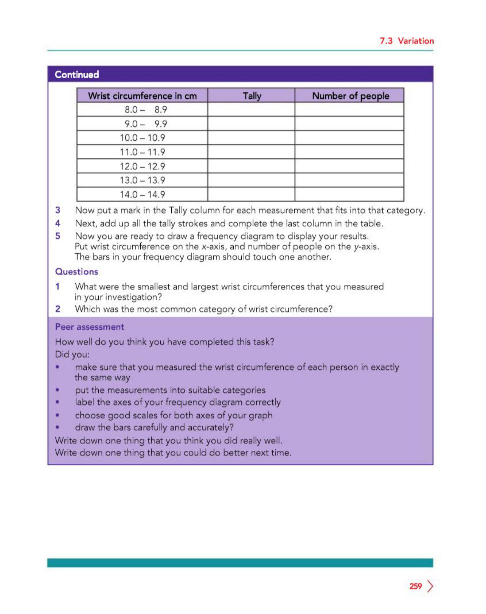
계속
표: 손목 둘레(wrist circumference)(cm) | 표시(tally) | 사람 수(number of people)
8.0 – 8.9
9.0 – 9.9
10.0 – 10.9
11.0 – 11.9
12.0 – 12.9
13.0 – 13.9
14.0 – 14.9
(표시 칸과 사람 수 칸은 비어 있다)
3 이제 측정값 하나마다 그 값이 들어가는 구간의 표시(Tally) 칸에 표시를 한다.
4 다음으로 표시한 줄을 모두 더해 표의 마지막 칸을 채운다.
5 이제 결과를 보여 주는 도수 분포도(frequency diagram)를 그릴 준비가 됐다.
손목 둘레는 x축(x-axis)에, 사람 수는 y축(y-axis)에 놓는다.
도수 분포도의 막대는 서로 붙어 있어야 한다.
질문(Questions)
1 조사에서 잰 손목 둘레 중 가장 작은 값과 가장 큰 값은 얼마였나?
2 가장 흔한(사람이 가장 많은) 손목 둘레 구간은 어느 것이었나?
동료 평가(Peer assessment)
이 과제를 얼마나 잘 해냈다고 생각하나?
다음을 했나:
• 모든 사람의 손목 둘레를 정확히 같은 방법으로 쟀다
• 측정값을 알맞은 구간(categories)으로 나눴다
• 도수 분포도의 축 이름(label the axes)을 바르게 적었다
• 그래프의 두 축에 알맞은 눈금(scales)을 골랐다
• 막대를 조심스럽고 정확하게 그렸다
정말 잘했다고 생각하는 점 하나를 적는다.
다음에 더 잘할 수 있는 점 하나를 적는다.
손목 둘레처럼 값이 끊기지 않고 이어지는 것은 연속 변이(continuous variation)여서 막대를 서로 붙여 그린다. 가장 흔한 구간은 사람 수가 가장 많은 구간, 곧 가장 높은 막대다.
이 자료는 KS3 생물 7.3 Variation 단원의 학습 자료다. 제목에 나온 variation은 우리말로 '변이', 쉽게 말해 같은 종(species)끼리도 서로 조금씩 다른 것을 뜻한다. 사람마다 키·눈 색깔·혈액형이 다른 것이 바로 이 단원에서 다루는 내용이다.
자료 형태는 수업에서 쓰는 책(book) 자료로 올라와 있다. 즉 교과서나 읽기 자료를 열어 단원 내용을 따라 읽어야 하는 종류다. 자료 안의 실제 본문 글자는 지금 확인되지 않으므로, 세부 내용은 자료를 직접 열어 확인해야 한다.
✍️ 꼭 알아야 하는 것
- variation(변이)이라는 단어의 뜻을 영어와 한국어 양쪽으로 알아 두어야 한다. 단원 제목 자체가 이 용어이므로 가장 기본이 되는 낱말이다.
- 이 자료는 7.3 단원에 속하므로, 수업 진도표에서 앞뒤 단원과 함께 순서대로 정리해 두는 것이 좋다.
변이(variation)는 같은 종(species) 안에서도 개체마다 특징이 조금씩 다른 것을 말한다. 사람마다 키, 혈액형(blood group), 눈 색깔이 다른 것이 변이다. 같은 종이라도 완전히 똑같은 개체는 없다는 것이 핵심이다.
변이는 크게 두 가지로 나눈다. 연속 변이(continuous variation)는 키나 몸무게처럼 중간값이 끝없이 이어지는 것이고, 불연속 변이(discontinuous variation)는 혈액형처럼 딱 정해진 몇 가지로만 나뉘는 것이다. 연속 변이는 그래프로 그리면 가운데가 볼록한 모양이 되고, 불연속 변이는 막대가 몇 개만 따로 서 있는 모양이 된다.
변이가 생기는 원인도 두 가지다. 하나는 부모에게서 물려받은 유전(genetic) 요인이고, 다른 하나는 먹는 것·햇빛·운동 같은 환경(environmental) 요인이다. 키나 몸무게처럼 두 가지가 함께 영향을 주는 특징도 많다.
✍️ 꼭 알아야 하는 것
- 연속 변이와 불연속 변이의 차이, 그리고 각각의 예를 구별할 수 있어야 한다.
- 어떤 특징이 유전 때문인지, 환경 때문인지, 둘 다인지 나눌 수 있어야 한다.
단원 이름이 Variation investigation이다. 여기서 variation(변이)은 같은 종(species) 안에서도 개체마다 생김새나 특징이 서로 다른 것을 뜻한다. 예를 들어 사람마다 키가 다르고, 나뭇잎마다 길이가 다른 것이 변이다.
제목에 붙은 investigation(탐구)은 직접 재고 세어서 알아보는 활동을 말한다. 즉 이 자료는 글로만 읽는 것이 아니라, 실제로 어떤 특징을 측정(measure)하고 그 값을 모아서 비교하는 과정과 관련이 있다.
이 자료는 수업 자료(Material) 형태로 올라와 있고, 올린 날짜는 9월 2일(Sep 2)이다. 단원 공부를 시작할 때 먼저 열어 보는 기본 자료에 해당한다.
✍️ 꼭 알아야 하는 것
- variation(변이)이라는 낱말의 뜻 — 같은 종 안에서 개체들이 서로 다른 것
- 이 단원은 investigation(탐구·조사 활동)으로 진행된다는 점
이 자료는 7.3 Variation(변이) 단원에 속하는 학습 자료다. 변이란 같은 종(species) 안에서도 개체마다 생김새나 특징이 서로 다른 것을 말한다. 단원 제목이 가리키는 주제가 바로 이 '서로 다름'이다.
자료에 붙은 표시로 보아 이 단원에서 쓰는 book(교재) 형태의 자료이고, 마지막으로 9월 3일(Sep 3)에 수정된 것이다. 즉 지금 진도에 맞춰 최근에 손본 자료라는 뜻이다.
자료에서 뽑아낼 수 있는 글자가 제목과 날짜 정도뿐이라, 안에 담긴 세부 내용까지는 여기서 알 수 없다. 실제 공부는 자료를 직접 열어 단원 본문을 따라가며 해야 한다.
✍️ 꼭 알아야 하는 것
- 이 자료가 7.3 Variation(변이) 단원용이라는 점을 기억해 두고, 수업 진도와 맞춰 본다.
- 마지막 수정일이 9월 3일이므로, 이전에 받아 둔 옛 파일이 있다면 이 자료 쪽이 최신본이다.
이 자료는 7.3 Variation 단원의 수업 교재(book)로 올라온 자료다. 학급 자료실에 Material(수업 자료) 형태로 올라와 있고, Edited Sep 3 즉 9월 3일에 마지막으로 수정된 자료다.
Variation은 한국어로 변화 또는 비례 관계라는 뜻이다. 한 값이 변할 때 다른 값이 어떤 규칙으로 따라 변하는지를 다루는 단원이다.
자료 화면에서 뽑을 수 있는 글자는 제목과 단원 이름, 수정 날짜뿐이다. 안쪽 내용은 자료를 직접 열어서 확인해야 한다.
✍️ 꼭 알아야 하는 것
- 이 자료가 7.3 Variation 단원에 속한다는 것을 기억한다.
- 자료가 9월 3일에 수정되었으므로, 예전에 받아 둔 것이 있다면 최신본으로 다시 확인한다.
9B1-2 염색체·유전자·DNAChromosomes, Genes and DNA생물
"세포에도 핵이 있고 원자에도 핵이 있는데 왜 이름이 같을까"
둘 다 큰 구조의 가운데에 있기 때문이고, 세포(cell)의 핵(nucleus)은 세포가 하는 일을 조절한다.
✍️ 꼭 알아야 하는 것
- 그림의 X자 모양이 왜 X자인지 설명하기 (복사 직후라서)
- chromatid와 centromere를 그림에서 짚기
- 염기쌍 규칙 A–T, C–G
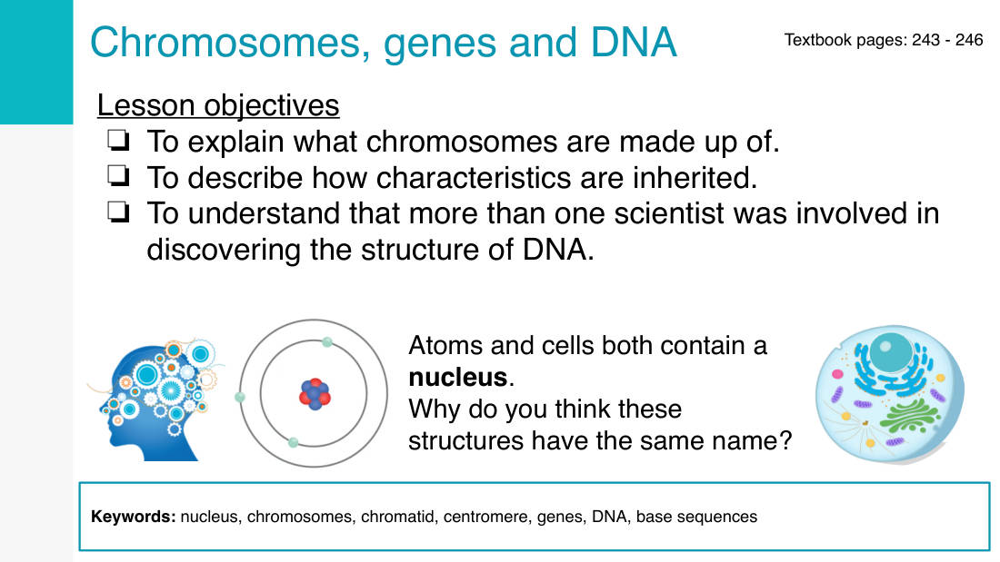
특징이 어떻게 유전되는지 서술한다.
DNA 구조를 밝히는 데 한 사람이 아니라 여러 과학자가 참여했음을 이해한다.
생각해 보기 — 원자에도 세포에도 핵(nucleus)이 있다.
왜 이 둘에 같은 이름을 붙였을까?
핵심 단어 — nucleus, chromosomes, chromatid, centromere, genes, DNA, base sequences · 교과서 243~246쪽
오른쪽 위에 교과서 243~246쪽이라고 적혀 있다.
이 슬라이드는 7.1 교과서와 짝이다.
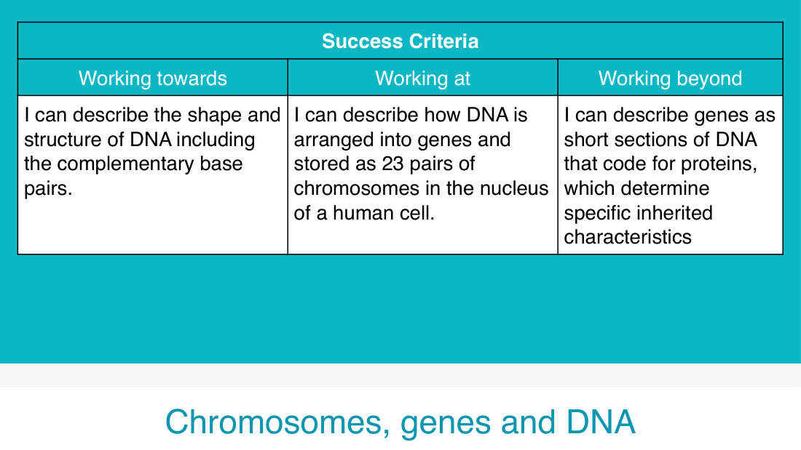
보통 — DNA가 유전자로 묶이고 사람 세포핵에 23쌍의 염색체로 저장된다는 것을 설명할 수 있다.
심화 — 유전자를 단백질을 만드는 DNA의 짧은 구간으로 설명할 수 있다.
세 칸 중 가운데 칸을 말로 설명할 수 있으면 수업 내용을 따라간 것이다.

주제마다 Meeting · Exceeding · Mastering 세 단계가 적혀 있다.
주황색 테두리가 쳐진 줄이 지금 배우는 곳이다. 앞으로 무엇을 더 배우는지 한눈에 보인다.
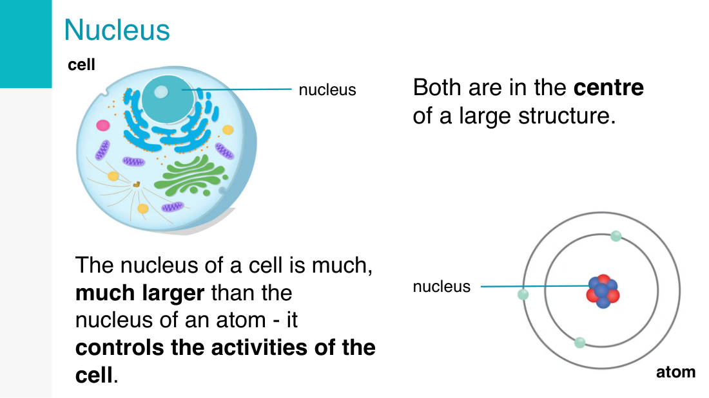
세포의 핵은 원자의 핵보다 훨씬 훨씬 크며, 세포가 하는 일을 조절한다.
1장의 질문에 대한 답이 이 장이다.
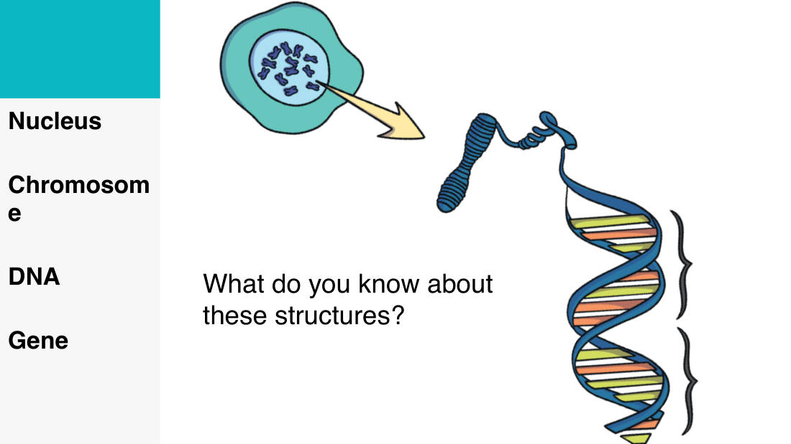
배우기 전에 아는 것을 꺼내 보는 장이다. 옆 그림이 세포에서 염색체를 뽑아 DNA까지 풀어 보인 것이다.
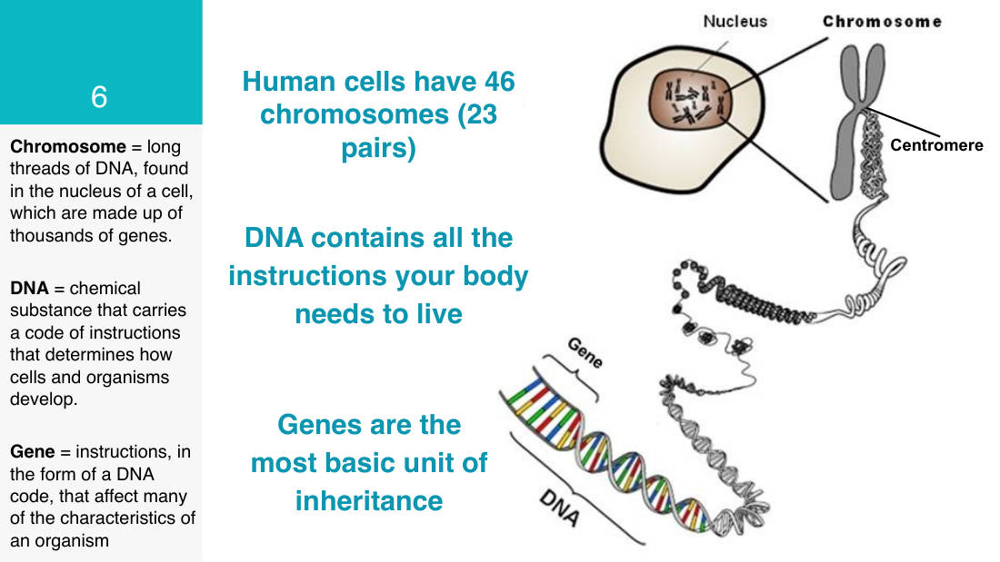
수천 개의 유전자로 이루어져 있다.
DNA = 세포와 생물이 어떻게 자라는지 정하는 설명서(코드)를 담은 화학 물질.
Gene 유전자 = DNA 코드 형태의 명령으로, 생물의 여러 특징에 영향을 준다.
사람 세포에는 염색체가 46개(23쌍) 있다.
DNA에는 몸이 살아가는 데 필요한 모든 명령이 들어 있다.
유전자는 유전의 가장 기본 단위다.
이 세 정의는 그대로 외워 두는 것이 좋다. 시험에서 한 줄로 쓰라고 나온다.
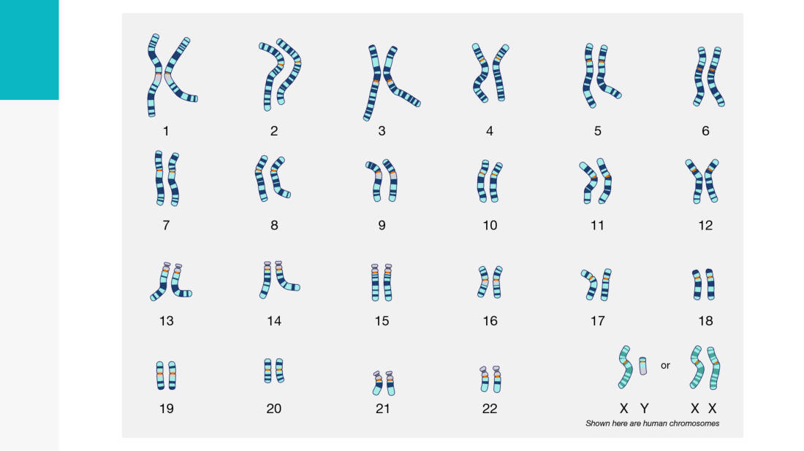
마지막 한 쌍이 성염색체다. 이 부분은 다음 수업(B1.3)에서 자세히 배운다.
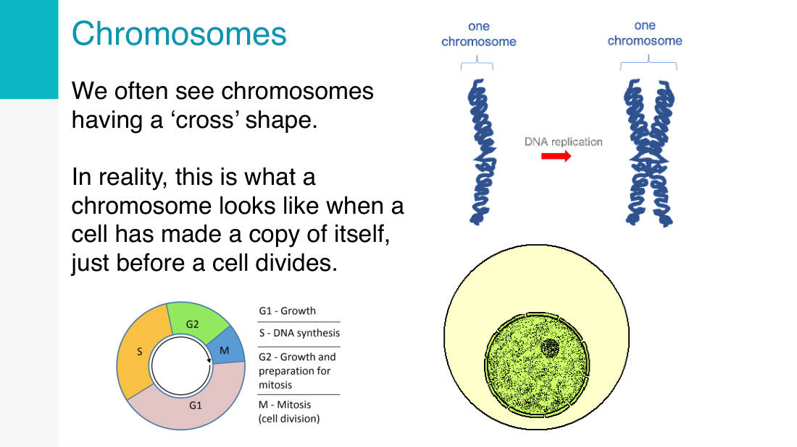
사실 이 모습은 세포가 나뉘기 직전, 세포가 자기를 복사한 뒤의 모습이다.
옆의 동그란 그림은 세포주기다. S 단계에서 DNA를 복사하고 M 단계에서 세포가 나뉜다.
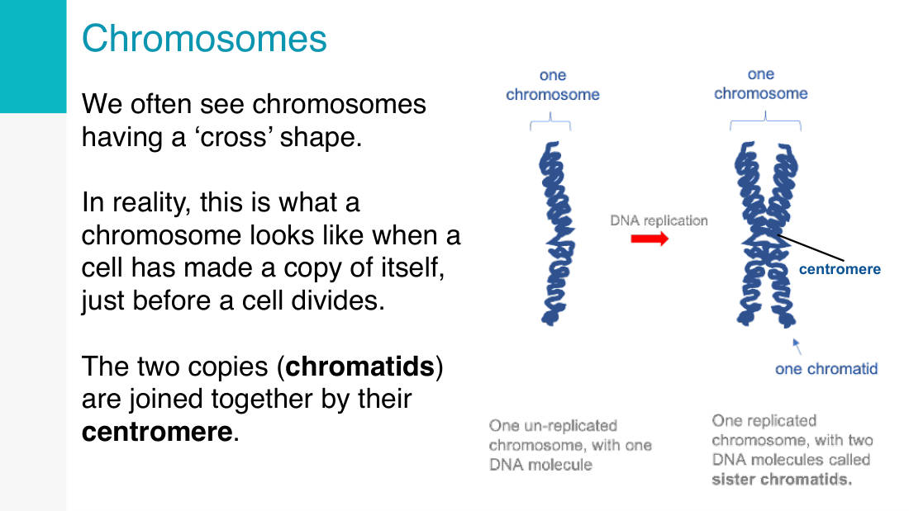
왼쪽은 복사 전(DNA 분자 하나), 오른쪽은 복사 후(DNA 분자 두 개, 자매 염색분체)다.
이 두 낱말(chromatid, centromere)은 그림에 이름 붙이기 문제로 자주 나온다.
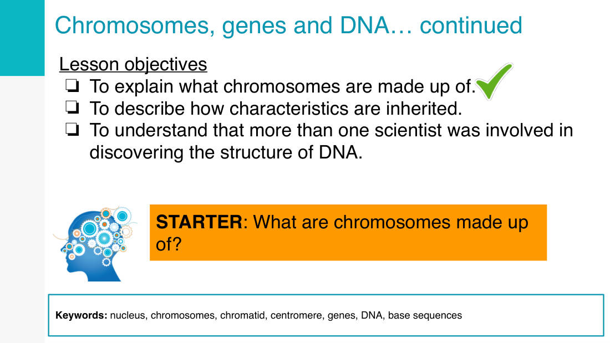
STARTER 질문 — 염색체는 무엇으로 되어 있는가?
여기부터가 두 번째 시간이다. 답은 DNA다.
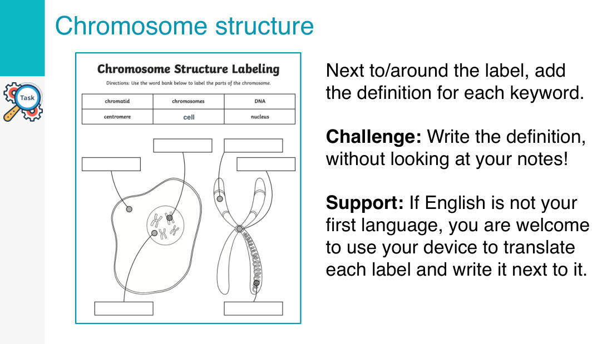
도전 — 노트를 보지 않고 정의를 써 보시오.
도움 — 영어가 모국어가 아니면 기기로 각 이름표를 번역해 옆에 적어도 된다.
여기 나오는 활동지가 바로 앞 카드의 Chromosome Structure Labeling이다.
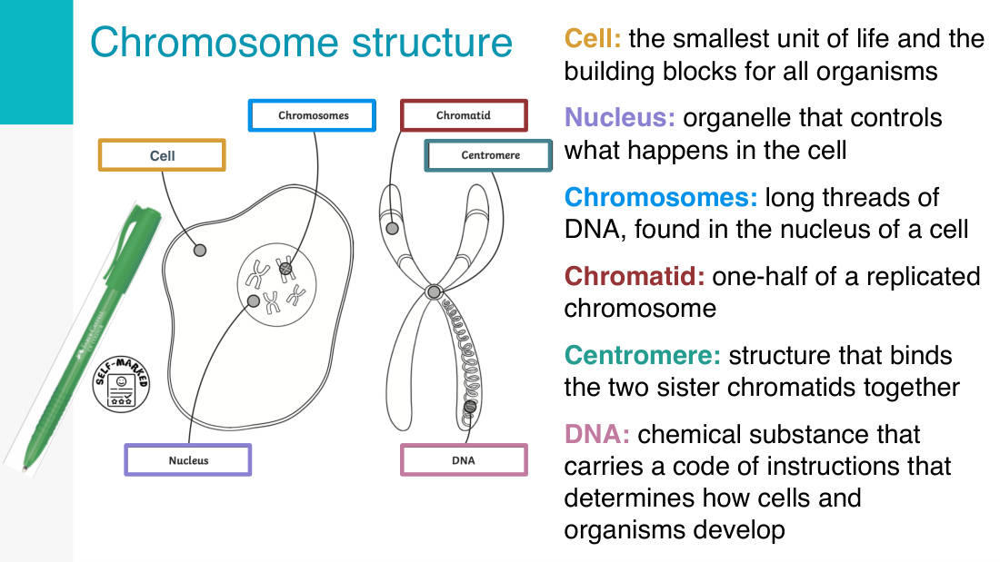
Nucleus 핵 = 세포에서 일어나는 일을 조절하는 소기관.
Chromosomes 염색체 = 세포핵 속의 긴 DNA 실.
Chromatid 염색분체 = 복제된 염색체의 반쪽.
Centromere 동원체 = 두 자매 염색분체를 묶는 구조.
DNA = 세포와 생물이 자라는 방식을 정하는 설명서를 담은 화학 물질.
활동지를 풀고 나서 이 장으로 채점하면 된다.
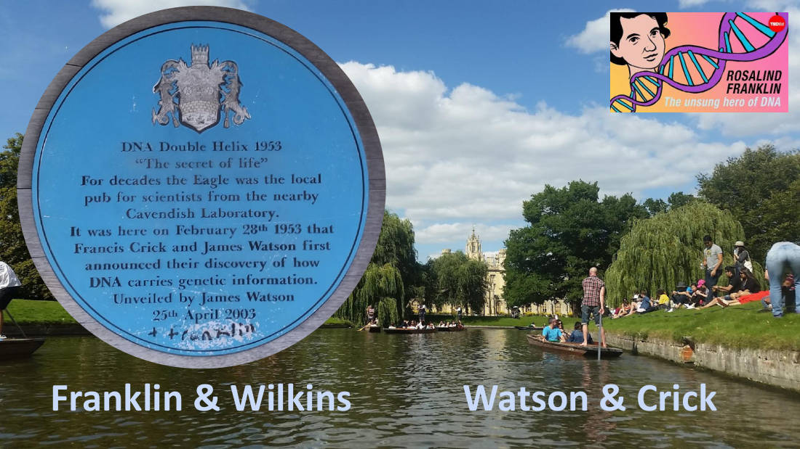
오른쪽 위는 로절린드 프랭클린.
Franklin & Wilkins
Watson & Crick
수업 목표 세 번째가 '여러 과학자가 참여했음을 이해한다'인 이유가 이 장이다. 프랭클린이 찍은 X선 사진이 없었다면 이중나선을 알아내지 못했다.
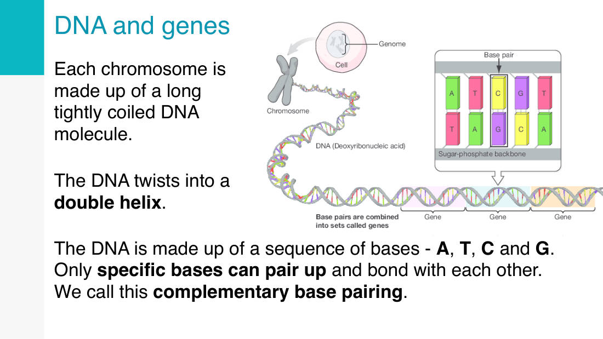
DNA는 꼬여서 이중나선(double helix)을 이룬다.
DNA는 염기(bases) A · T · C · G가 이어진 것이다.
정해진 염기끼리만 짝을 지어 결합하며, 이것을 상보적 염기쌍(complementary base pairing)이라 한다.
염기쌍이 A–T, C–G라는 것이 이 수업의 마지막 핵심이다.
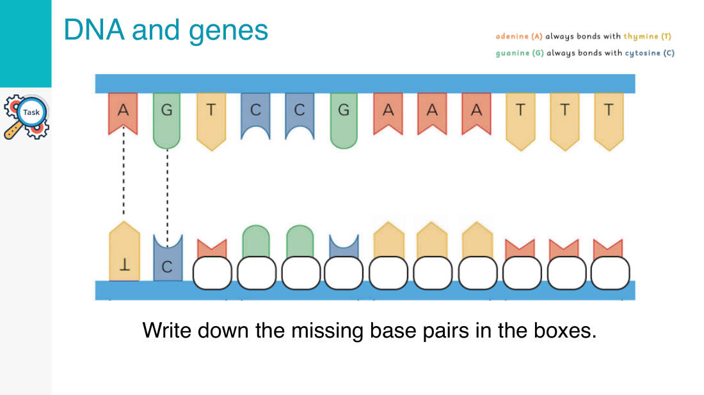
빈칸에 빠진 짝 염기를 써 넣으시오.
위 가닥은 A G T C C G A A A T T T 이다.
위 가닥을 보고 아래를 채우면 T C A G G C T T T A A A 가 된다.
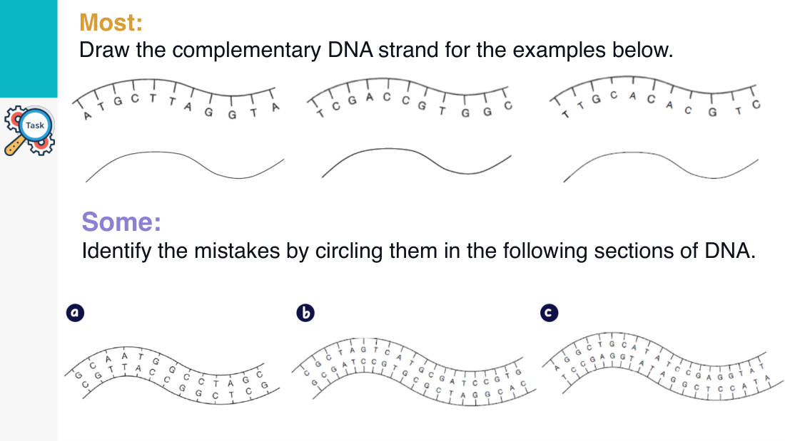
Some — 아래 DNA 구간에서 틀린 곳을 찾아 동그라미 치시오.
'Most'는 대부분이 하는 과제, 'Some'은 더 하는 과제라는 뜻이다.
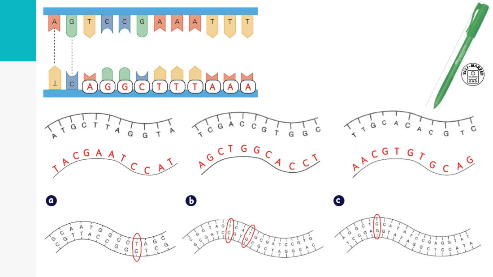
ATGCTTAGGTA → TACGAATCCAT
TCGACCGTGGC → AGCTGGCACCT (슬라이드 오타 · 바른 답은 AGCTGGCACCG)
TTGCACACGTC → AACGTGTGCAG.
아래 세 줄에는 잘못 짝지어진 곳에 동그라미가 쳐져 있다.
채점할 때 이 장을 보면 된다. 동그라미 친 곳은 짝이 맞지 않는 염기끼리 붙어 있는 자리다. A는 T와, C는 G와만 붙는다는 규칙으로 찾으면 된다.
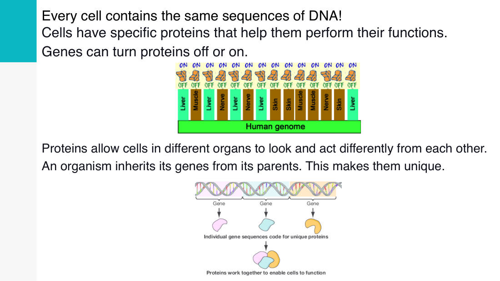
세포마다 자기 일을 하게 돕는 특정 단백질이 있고, 유전자가 그 단백질을 켜거나 끈다.
단백질 덕분에 간·근육·신경·피부 세포가 서로 다르게 생기고 다르게 움직인다.
생물은 부모에게서 유전자를 물려받고, 그래서 저마다 다르다.
같은 설명서를 갖고도 세포가 서로 다른 이유가 유전자 스위치 때문이라는 장이다.
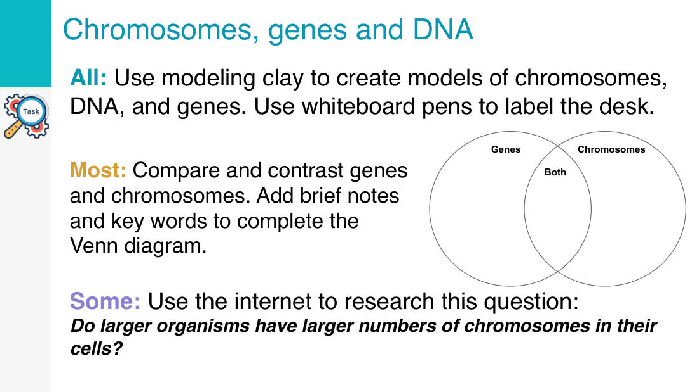
Most — 유전자와 염색체를 비교해 벤 다이어그램을 채우시오.
Some — 인터넷에서 조사하시오: 몸집이 큰 생물일수록 염색체 수가 많을까?
마지막 질문의 답은 아니다이다. 염색체 수는 몸집과 상관이 없다.
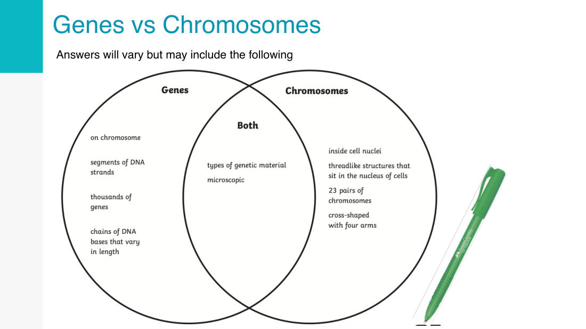
DNA 가닥의 한 구간이다
수천 개가 있다
길이가 제각각인 DNA 염기 사슬이다.
둘 다 — 유전 물질의 한 종류다
현미경으로 봐야 한다.
염색체 — 세포핵 안에 있다
핵 속에 있는 실 모양 구조다
23쌍이다
팔이 넷인 십자 모양이다.
유전자와 염색체를 헷갈리지 않게 정리한 장이다.
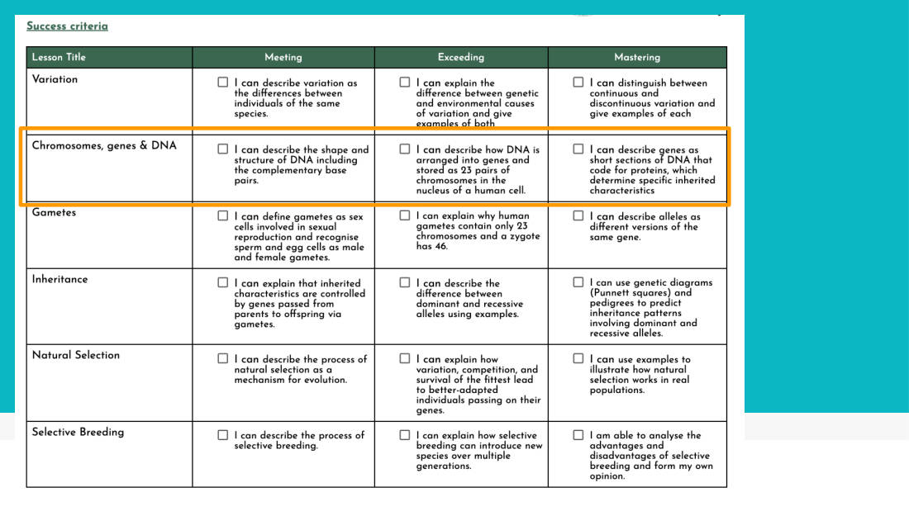
이번 주제 칸에 스스로 체크한다.
체크가 안 되는 칸이 있으면 그 부분을 다시 보라는 뜻이다.
염색체는 세포가 분열(divide)할 때만, 그것도 염색약(stain)으로 물들여야 광학현미경(light microscope)에 보인다.
✍️ 꼭 알아야 하는 것
- 현미경으로 염색체를 보통 볼 수 없는 이유를 설명하기
- 염색체와 유전자의 차이를 한 문장으로 쓰기
- 적혈구에는 핵이 없다 → 염색체도 없다 (교과서 질문 2번)
🎬 이 자료에 딸린 영상
▶What is a chromosome? (염색체란 무엇인가)선생님Stated Clearly▶DNA — the twisted ladder (DNA와 이중나선)선생님Cognito▶The genes you don't get from your parents (부모에게 물려받지 않는 유전자)선생님TED-Ed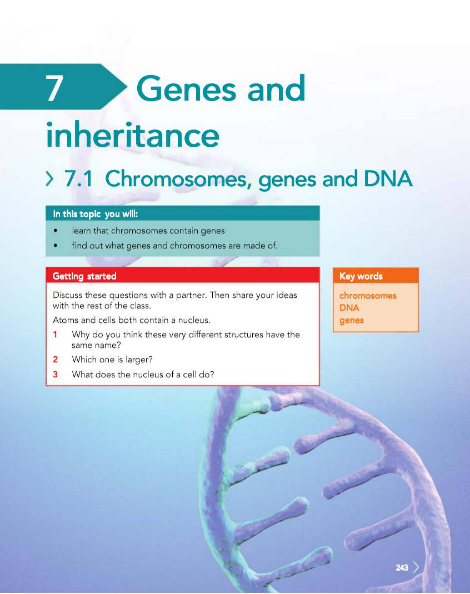
유전자와 염색체가 무엇으로 되어 있는지 알아본다.
시작하기(Getting started) — 짝과 이야기해 보자.
원자에도 세포에도 핵(nucleus)이 있다.
① 왜 이렇게 다른 두 구조에 같은 이름을 붙였을까?
② 어느 쪽이 더 큰가?
③ 세포의 핵은 무슨 일을 하는가?
핵심 단어(Key words) — chromosomes 염색체 · DNA · genes 유전자
표지의 보라색 사진이 DNA 이중나선(double helix)이다.
이 단원 내내 나오는 모양이니 눈에 익혀 두면 좋다.
시작 질문 세 개는 정답을 맞히려고 있는 것이 아니라 생각을 꺼내려고 있는 것이다.
답은 ① 둘 다 큰 구조의 가운데에 있어서 ② 세포의 핵이 훨씬 크다 ③ 세포가 하는 일을 조절한다이다.
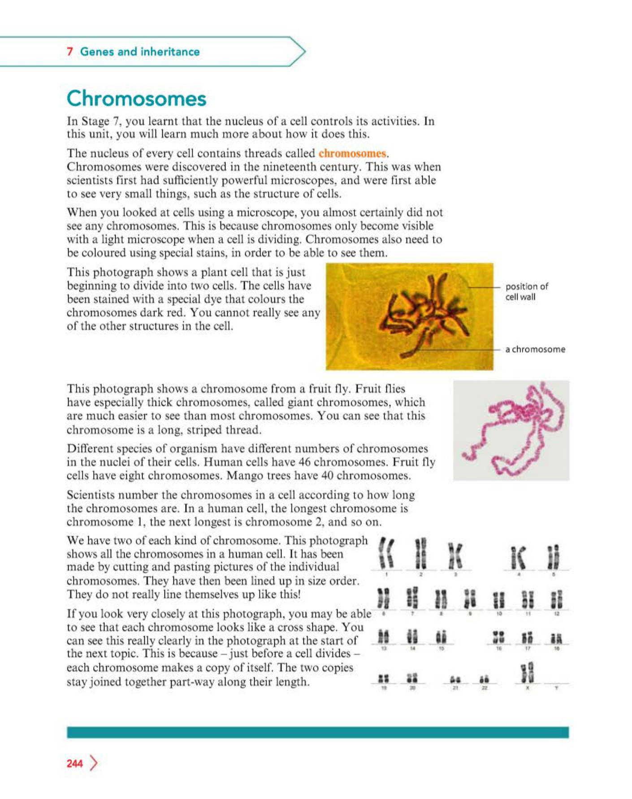
염색체는 현미경이 충분히 좋아진 19세기에 발견됐다.
염색체는 세포가 분열할 때만 광학현미경으로 보이고, 특별한 염색약(stain)으로 물들여야 보인다.
종마다 염색체 수가 다르다 — 사람 46개, 초파리 8개, 망고나무 40개.
염색체는 길이 순으로 번호를 붙이며 1번이 가장 길다.
같은 종류가 두 개씩 있다.
세포가 나뉘기 직전 각 염색체가 자기를 복사해서 X자(십자) 모양처럼 보인다.
쪽 안의 사진 세 장이 각각 다른 것을 보여 준다. 노란 사진은 분열이 시작된 식물 세포이고 빨갛게 물든 것이 염색체다. 분홍 사진은 초파리의 거대 염색체로, 유난히 굵어서 보기 쉽다.
오른쪽 아래 흑백 사진은 사람 세포의 염색체를 하나씩 잘라 길이 순으로 붙여 놓은 것이다. 실제 세포 안에서 이렇게 줄 서 있는 것이 아니라, 사람이 사진을 오려 붙인 것이라고 교과서가 짚어 준다.
여기서 외울 숫자는 46(사람), 8(초파리), 40(망고나무) 세 개다.
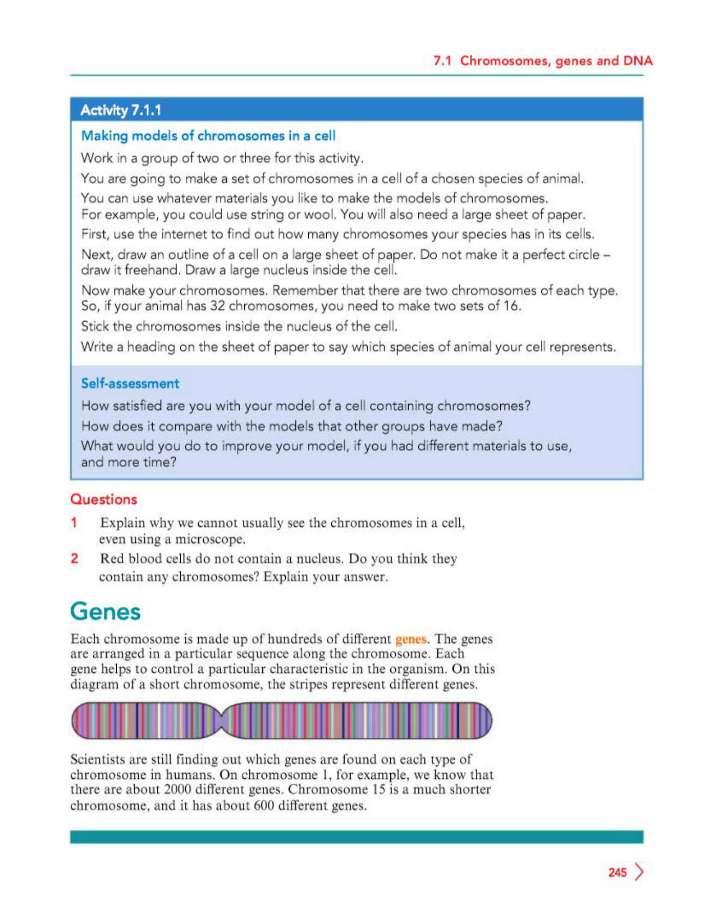
실이나 털실로 염색체를 만들고, 큰 종이에 세포와 핵을 그린 뒤 붙인다.
염색체는 종류마다 두 개씩 필요하다(32개인 동물이면 16종류를 두 벌).
질문 1 현미경으로도 세포 속 염색체를 보통 볼 수 없는 이유를 설명하시오.
질문 2 적혈구에는 핵이 없다.
그렇다면 염색체가 있을까?
이유와 함께 답하시오.
Genes 유전자 — 염색체 하나는 수백 개의 서로 다른 유전자로 이루어지고 정해진 순서로 늘어서 있다.
유전자 하나가 형질 하나를 조절한다.
1번 염색체에는 약 2000개, 훨씬 짧은 15번에는 약 600개가 있다.
가운데 알록달록한 줄무늬 그림에서 색줄 하나하나가 서로 다른 유전자다. 유전자가 염색체 위에 줄 서 있다는 것을 그림으로 보여 준다.
질문 2의 답은 없다이다. 염색체는 핵 속에 있는데 적혈구에는 핵이 없기 때문이다.
질문 1의 답은 세포가 분열할 때만, 염색약으로 물들여야 보이기 때문이다. 244쪽에 그대로 나와 있다.
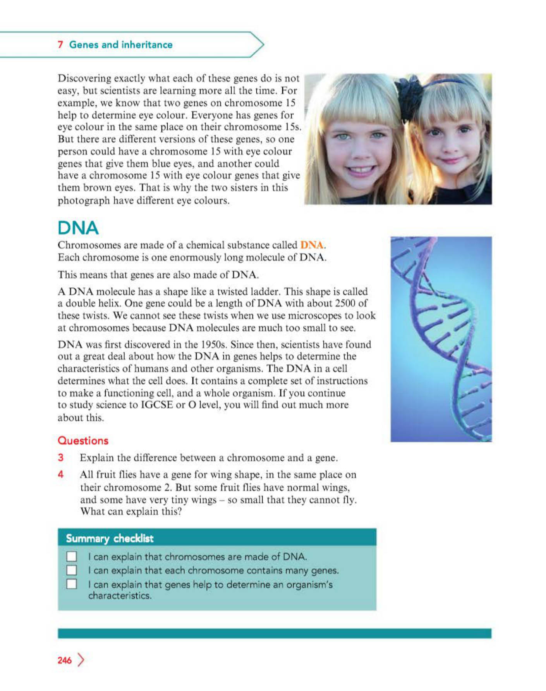
예를 들어 15번 염색체의 두 유전자가 눈 색을 정하는 데 관여한다.
유전자가 놓인 자리는 누구나 같지만 버전이 다르다.
그래서 사진 속 두 자매의 눈 색이 다르다.
DNA — 염색체는 DNA라는 물질로 되어 있고, 염색체 하나가 엄청나게 긴 DNA 분자 하나다.
그러므로 유전자도 DNA로 되어 있다.
DNA는 꼬인 사다리 모양이고 이를 이중나선(double helix)이라 한다.
유전자 하나는 약 2500번 꼬인 길이다.
DNA는 1950년대에 발견됐다.
세포 속 DNA에는 세포 하나와 생물 전체를 만드는 설명서 한 벌이 들어 있다.
질문 3 염색체와 유전자의 차이를 설명하시오. 질문 4 초파리는 모두 2번 염색체 같은 자리에 날개 모양 유전자를 갖는데, 어떤 초파리는 정상 날개이고 어떤 초파리는 아주 작은 날개다.
왜 그럴까?
질문 4의 답은 같은 자리의 같은 유전자지만 버전(대립유전자 allele)이 다르기 때문이다. 자매의 눈 색 이야기와 똑같은 원리다.
맨 아래 Summary checklist는 이 주제를 끝냈을 때 스스로 확인하는 목록이다. 세 줄 모두 '설명할 수 있다'로 되어 있으니, 말로 설명해 보면 준비가 됐는지 알 수 있다.
✍️ 꼭 알아야 하는 것
- alleles가 무엇인지 정의하기
- 사람 세포핵 = 23쌍이라는 숫자
- 유전자 = 염색체의 짧은 구간
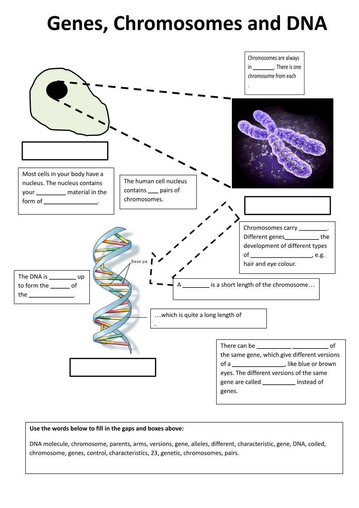
그림 옆 상자마다 빈칸이 있고, 맨 아래 단어 상자에서 골라 채운다.
상자에 적힌 말 — 염색체는 항상 ___에 있다.
각 ___에서 하나씩 온다
몸의 대부분 세포에는 핵이 있고, 핵에는 ___ 물질이 ___의 형태로 들어 있다
사람 세포의 핵에는 ___쌍의 염색체가 있다
염색체는 ___를 나른다.
서로 다른 유전자가 머리색·눈색 같은 ___의 발달을 ___한다
___는 염색체의 짧은 구간이다
DNA는 ___여서 염색체의 ___를 이룬다
같은 유전자의 ___ ___이 있어 눈 색 같은 ___이 달라진다.
같은 유전자의 다른 버전은 유전자가 아니라 ___라고 부른다.
DNA molecule, chromosome, parents, arms, versions, gene, alleles, different, characteristic, DNA, coiled, chromosome, genes, control, characteristics, 23, genetic, chromosomes, pairs
답의 뼈대는 이렇다.
염색체는 쌍(pairs)으로 있고 한 짝은 부모(parents) 각각에게서 온다.
사람 세포핵에는 23쌍이 있다.
DNA가 감겨(coiled) 염색체의 팔(arms)을 이루고, 유전자(gene)는 염색체의 짧은 구간이며 형질(characteristics)을 조절(control)한다.
마지막 칸이 가장 많이 틀리는 곳이다.
같은 유전자의 다른 버전(different versions)은 대립유전자(alleles)라고 부른다.
✍️ 꼭 알아야 하는 것
- centromere와 chromatid를 그림에서 정확히 짚기
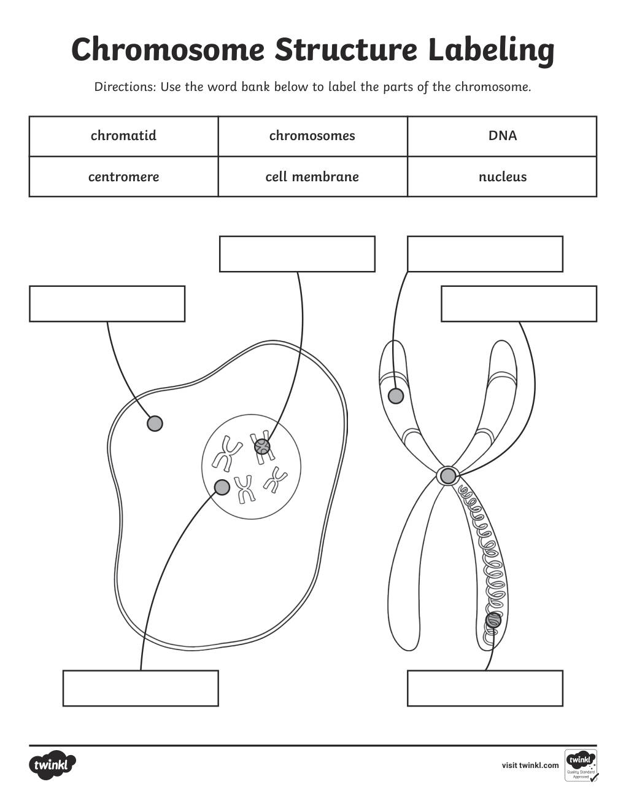
chromatid 염색분체 · centromere 동원체 · chromosomes 염색체 · cell membrane 세포막 · DNA · nucleus 핵
왼쪽 그림은 세포 하나, 오른쪽은 그 안 염색체를 확대한 것이다.
바깥에서 안쪽 순서로 붙이면 된다. 세포막 → 핵 → 염색체 → 염색분체 → 동원체 → DNA.
이 활동지는 선생님 슬라이드(B1.2)의 과제로 나온 것이라, 슬라이드 뒤쪽에 정답이 있다.
틀린 문제는 그 내용이 어느 자료에 있었는지 찾아 다시 읽는다. 대부분 7.1·7.2와 수업 슬라이드 안에 있다.
✍️ 꼭 알아야 하는 것
- 틀린 문제는 그 내용이 7.1·7.2 중 어디에 있었는지 찾아 다시 읽을 것
9B1-3 생식세포Gametes생물
정자와 난자가 생식세포(gamete)다. 각각 염색체 23개를 갖고, 둘이 합쳐지면 접합자(zygote) 46개가 된다.
같은 유전자의 다른 버전은 대립유전자(allele)다.
✍️ 꼭 알아야 하는 것
- 정자와 난자의 차이 세 가지 쓰기
- 생식세포가 23개인 이유와 접합자가 46개인 이유 설명하기
- 흔한 오해 — 정자에 남자 염색체, 난자에 여자 염색체가 들어 있는 것이 아니다
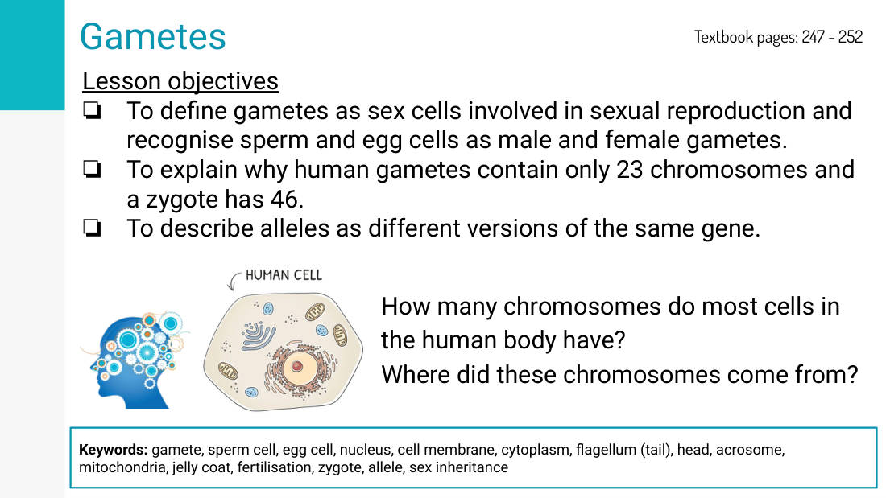
사람 생식세포에 염색체가 23개뿐이고 접합자에 46개인 이유를 설명한다.
대립유전자(allele)를 같은 유전자의 다른 버전으로 서술한다.
생각해 보기 — 사람 몸의 대부분 세포에는 염색체가 몇 개 있는가?
그 염색체들은 어디서 왔는가?
핵심 단어 — gamete, sperm cell, egg cell, nucleus, cell membrane, cytoplasm, flagellum(tail), head, acrosome, mitochondria, jelly coat, fertilisation, zygote, allele, sex inheritance · 교과서 247~252쪽
이 슬라이드는 7.2 교과서와 짝이다.
핵심 단어가 15개로 많은 편이라, 단어장 탭에서 먼저 훑고 오면 수업이 쉬워진다.
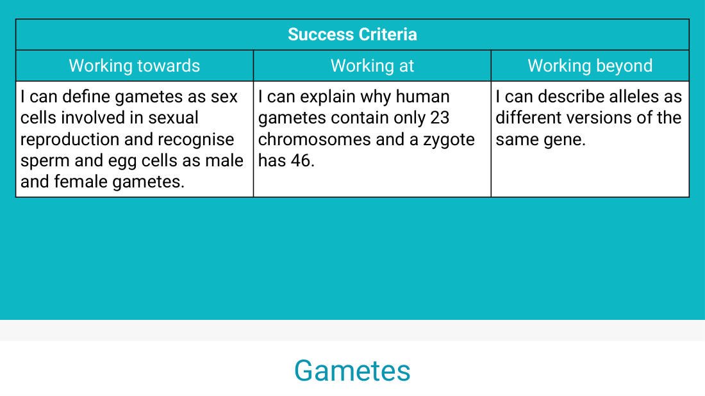
보통 — 사람 생식세포가 염색체 23개, 접합자가 46개인 이유를 설명할 수 있다.
심화 — 대립유전자를 같은 유전자의 다른 버전으로 서술할 수 있다.
가운데 칸이 이 수업의 핵심이다.
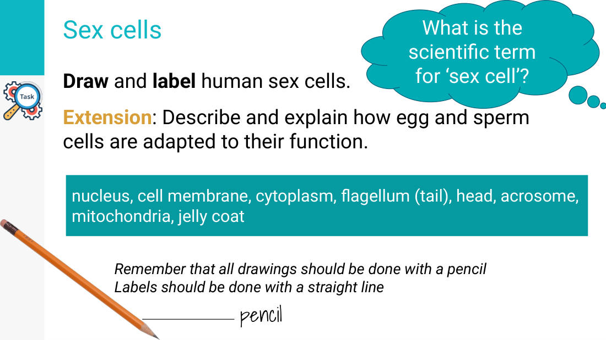
'성세포'를 가리키는 과학 용어는 무엇인가?
더 하기 — 난자와 정자가 각각의 일에 어떻게 맞게 생겼는지 서술하고 설명하시오.
쓸 이름표: nucleus, cell membrane, cytoplasm, flagellum(tail), head, acrosome, mitochondria, jelly coat
그림은 연필로, 이름표는 직선으로 이어 그린다.
'성세포'의 과학 용어가 gamete(생식세포)다.
연필로 그리고 자로 선을 긋는 것은 케임브리지 과학의 채점 규칙이다.
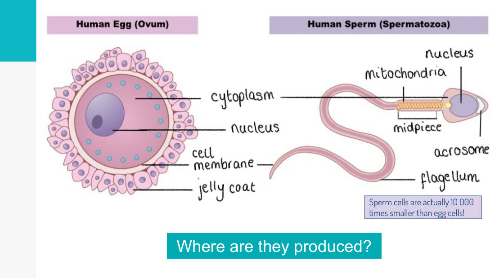
사람 정자(Human Sperm) — nucleus 핵 · mitochondria 미토콘드리아 · midpiece 중간부 · acrosome 첨체 · flagellum 꼬리
정자는 난자보다 실제로 1만 배 작다.
이 세포들은 어디에서 만들어질까?
3장 과제의 정답 그림이다. 이름표 위치를 그대로 외우면 된다.
acrosome(첨체)은 정자 머리 앞부분이고, 나중에 난자의 젤리막을 녹이는 효소가 들어 있다.
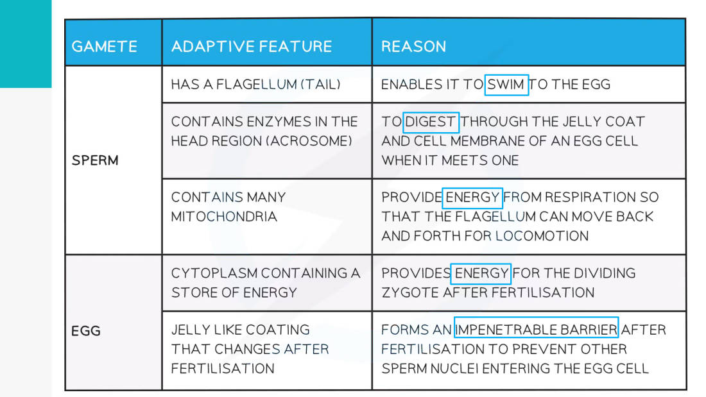
머리(첨체)에 효소가 있다: 난자의 젤리막과 세포막을 녹여 뚫는다
미토콘드리아가 많다: 호흡으로 에너지를 내어 꼬리를 움직인다.
난자 — 세포질에 에너지를 저장한다: 수정 뒤 나뉘는 접합자에게 에너지를 준다
수정 뒤 변하는 젤리막이 있다: 다른 정자가 못 들어오게 막는다.
'구조와 기능을 연결하라'는 시험 문제가 그대로 이 표에서 나온다. 특징 하나에 이유 하나를 붙여 외우는 것이 좋다.
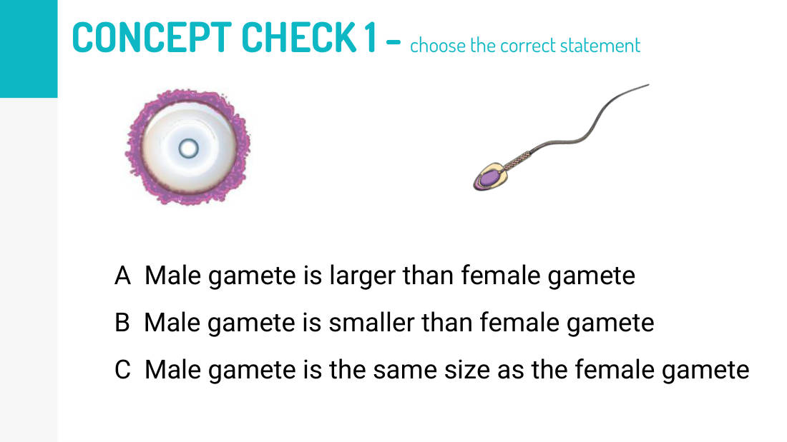
A 남성 생식세포가 여성 생식세포보다 크다
B 남성 생식세포가 더 작다
C 둘의 크기가 같다
✅ 답은 B다.
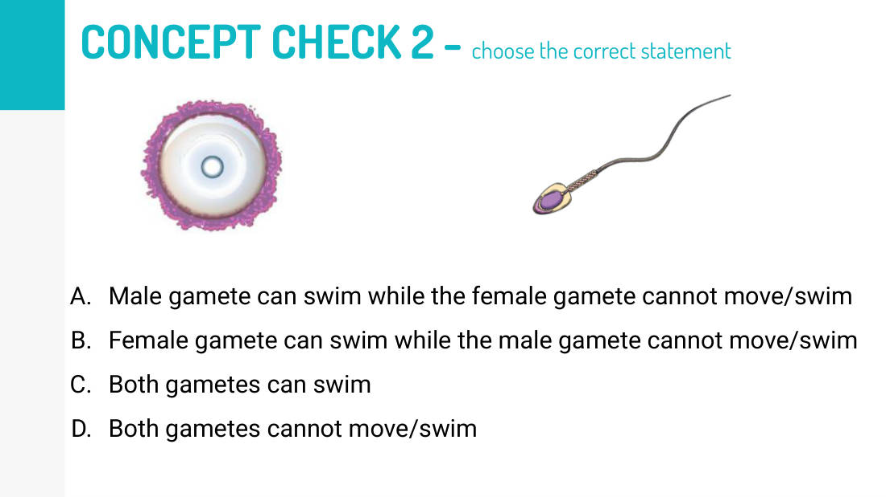
B 그 반대다
C 둘 다 헤엄친다
D 둘 다 못 움직인다
✅ 답은 A다.
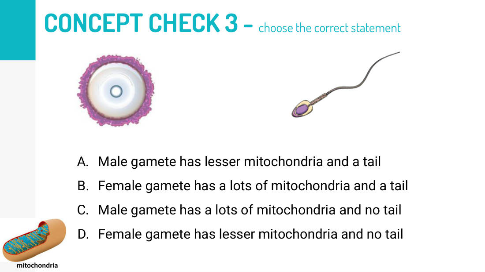
B 여성 생식세포는 미토콘드리아가 많고 꼬리가 있다
C 남성 생식세포는 미토콘드리아가 많고 꼬리가 없다
D 여성 생식세포는 미토콘드리아가 적고 꼬리가 없다
✅ 답은 D다. 정자는 미토콘드리아가 많고 꼬리가 있다.
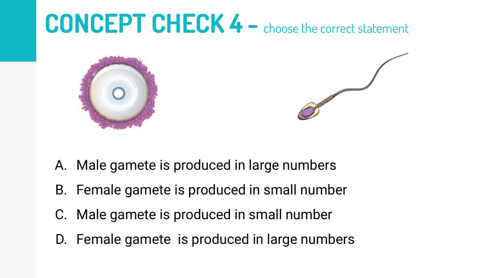
B 여성 생식세포는 적은 수로 만들어진다
C 남성 생식세포는 적게 만들어진다
D 여성 생식세포는 많이 만들어진다
A와 B 둘 다 사실이지만, 슬라이드는 하나만 고르게 되어 있다. 핵심은 정자는 아주 많이, 난자는 적게 만들어진다는 것이다.
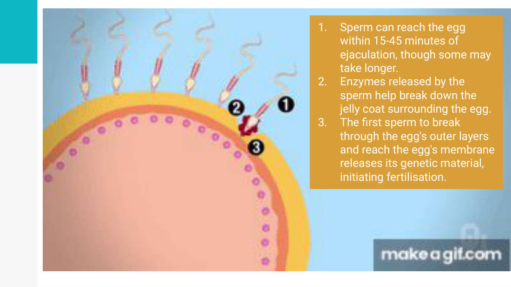
2. 정자가 내놓는 효소가 난자를 둘러싼 젤리막을 분해한다.
3. 난자의 바깥층을 가장 먼저 뚫고 막에 닿은 정자가 유전 물질을 내보내며 수정이 시작된다.
움직이는 그림으로 보여 주는 장이다. 숫자 1·2·3이 정자가 뚫고 들어가는 순서다.
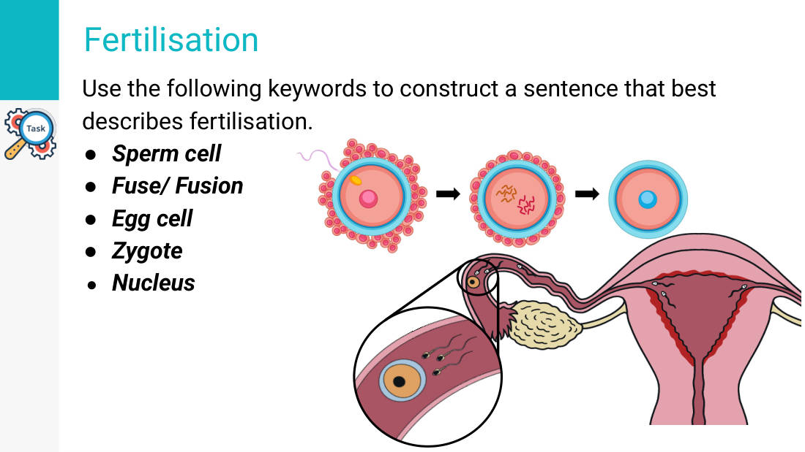
정답 문장은 다음 장에 나온다. 먼저 스스로 만들어 보는 과제다.
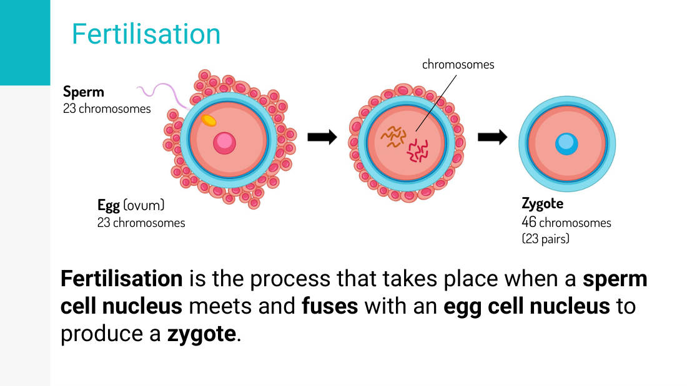
정자 23개 + 난자(ovum) 23개 → 접합자 46개(23쌍)
11장 과제의 정답이다. 이 한 문장을 그대로 외우면 시험에서 그대로 쓸 수 있다.
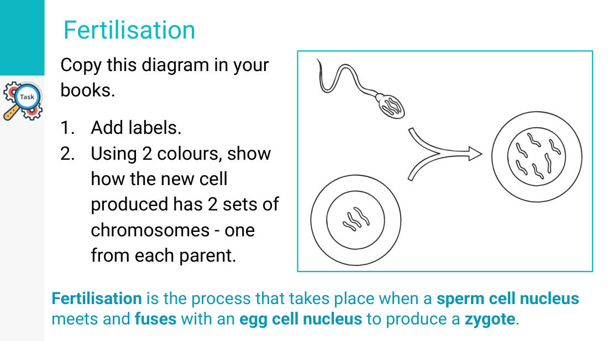
1. 이름표를 붙이시오.
2. 두 가지 색을 써서 새로 만들어진 세포가 부모 각각에게서 온 두 세트의 염색체를 갖는다는 것을 나타내시오.
두 색으로 칠하는 이유가 중요하다. 46개가 그냥 46개가 아니라 엄마 23 + 아빠 23이라는 뜻이다.
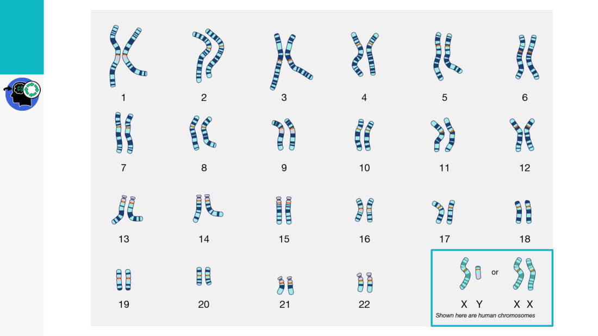
여기서부터 성 결정 이야기로 넘어간다.
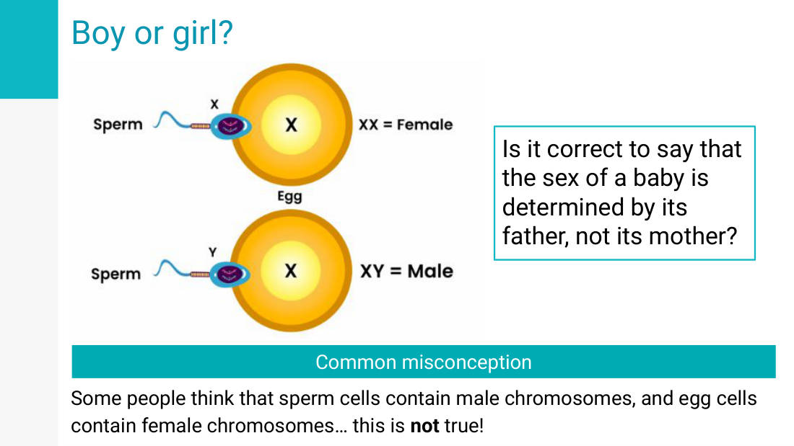
아기의 성별을 어머니가 아니라 아버지가 정한다고 말하는 것이 옳은가?
난자는 언제나 X를 갖고, 정자만 X 또는 Y를 갖는다. 그래서 성별을 정하는 쪽은 아버지다.
이 장은 시험에 '맞는지 틀린지 설명하시오'로 그대로 나오는 자리다.
푸넷 사각형(Punnett square)으로 아이의 성별 확률을 계산할 수 있다.
이것은 다음 시간에 더 배운다.
푸넷 사각형은 아직 안 배운 내용이라 지금은 이름만 알아 두면 된다.
여기 나오는 쪽수는 교과서가 아니라 워크북(Cambridge science workbook)의 쪽수다. 워크북은 이 탭 아래쪽 카드에 있다.
난자에는 첨체가 들어 있는 젤리 같은 보호막이 있다
정자의 핵과 난자의 핵이 fusion 한다
X 하나와 Y 하나를 가진 사람은 여자다
정자는 XY 또는 XX 염색체를 가질 수 있다
보통 해마다 여자아이가 더 많이 태어난다
여섯 문장이 모두 틀렸다. 어디가 틀렸는지 스스로 고쳐 보는 과제다.
정자의 머리에 소화 효소가 든 첨체가 있다
정자의 핵과 난자의 핵이 fuse 한다
X를 두 개 가진 사람이 여자다
정자는 X 하나 또는 Y 하나를 가질 수 있다
해마다 태어나는 남녀 수는 거의 같다
이 여섯 줄이 이 단원에서 가장 자주 틀리는 곳이다. 시험 전에 이 장만 다시 봐도 좋다.
몸 세포(body cell) 46개, 생식세포(gamete) 23개.
정자와 난자가 합쳐지는 것이 수정(fertilisation), 그렇게 생긴 세포가 접합자(zygote)다.
✍️ 꼭 알아야 하는 것
- 아기 성별을 아빠가 정한다는 말이 맞는지, 이유까지 설명하기
- 남자아이와 여자아이가 해마다 비슷하게 태어나는 이유 설명하기
- 수정과 접합자의 정의
🎬 이 자료에 딸린 영상
▶Gametes — sperm cells and egg cells (생식세포)선생님Cognito▶Boy or girl? (아들일까 딸일까)앱Science with Ayazullah
남성 생식세포와 여성 생식세포의 같은 점·다른 점을 생각해 본다.
수정 때 무슨 일이 일어나는지 알아본다.
아기가 남자인지 여자인지 무엇이 정하는지 설명한다.
시작하기 — 모든 세포는 비슷한 점이 있지만 대개 한 가지 일에 맞게 특수화돼 있다.
① 동물 세포 종류를 몇 가지나 떠올릴 수 있나?
② 그 세포들이 함께 가진 특징은?
③ 그중 몇 개가 어떻게 자기 일에 맞게 생겼는지 설명할 수 있나?
핵심 단어 — egg cell 난자 · fertilisation 수정 · gametes 생식세포 · inheritance 유전 · sex chromosomes 성염색체 · sperm cell 정자 · X·Y chromosomes · zygote 접합자
배경 그림은 사람 염색체를 색으로 물들여 늘어놓은 것이다.
이 쪽에서 챙길 것은 핵심 단어 아홉 개다.
이 단원 시험 문제는 대부분 이 단어들의 뜻을 묻는다.

이 염색체들은 어디서 왔을까?
새 생명이 어떻게 시작되는지 생각해 보자.
모든 사람은 세포 하나로 시작했다.
그 세포는 정자(sperm cell)가 난자(egg cell)와 합쳐져 만들어졌다.
정자와 난자처럼 특수화된 세포를 생식세포(gametes)라 한다.
정자는 남성 생식세포, 난자는 여성 생식세포다.
정자는 아주 작은 세포이고 꼬리를 써서 힘차게 헤엄친다.
난자는 정자보다 훨씬 크지만 여전히 아주 작다(마침표만 하다).
난자가 큰 이유는 양분을 담고 있기 때문이며, 난자는 스스로 움직이지 못한다.
그림의 라벨을 보면 정자와 난자 둘 다 핵 속 염색체가 23개라고 적혀 있다. 이것이 다음 쪽으로 이어지는 열쇠다.
옆의 검은 사진들은 전자현미경으로 찍은 실제 정자와 난자다.

수정 — 앞 그림에서 이상한 점을 눈치챘을 것이다.
정자와 난자는 염색체가 23개뿐이다.
사람 세포는 46개, 즉 23개짜리 두 세트를 갖는다고 배웠는데, 생식세포는 한 세트만 갖는다.
그래서 정자가 난자와 합쳐지면 새 세포는 두 세트, 곧 46개가 된다.
정자와 난자가 합쳐지는 일을 수정(fertilisation)이라 한다.
수정으로 만들어진 새 세포를 접합자(zygote)라 한다.
모든 사람은 이 세포 하나로 시작해, 며칠·몇 주·몇 년에 걸쳐 계속 나뉘어 수백만 개의 세포가 되었다.
아들일까 딸일까 — 몸속 세포의 염색체는 모두 부모에게서 왔다.
한 세트는 어머니, 한 세트는 아버지에게서 온다.
가운데 그림이 수정 과정이다. 정자 머리가 난자 속으로 들어가고, 정자의 핵과 난자의 핵이 융합한다.
질문 2를 풀 때 쓸 세 가지는 크기(난자가 크다), 움직임(정자만 헤엄친다), 수(정자가 훨씬 많다)다.
이 두 개를 성염색체(sex chromosomes)라 하며, 이것이 남자인지 여자인지를 정한다. X가 두 개(XX)면 여자다.
성염색체에는 Y라는 다른 종류도 있다.
Y는 X보다 훨씬 작다. X 하나와 Y 하나(XY)면 남자다.
난자는 모두 X를 하나 갖는다.
생식세포는 한 세트만 갖기 때문이다.
그러나 정자는 X 하나 또는 Y 하나를 가질 수 있다.
그래서 수정될 때 X를 가진 정자가 난자와 합치면 접합자는 XX가 되어 딸이 되고, Y를 가진 정자가 합치면 XY가 되어 아들이 된다.
가운데 초록색 사진이 실제 사람의 X염색체와 Y염색체를 전자현미경으로 찍은 것이다. 큰 쪽이 X, 작은 쪽이 Y다.
여기서 아기 성별은 아빠 쪽 정자가 정한다는 결론이 나온다. 시험에 가장 자주 나오는 문장이다.
그래서 남자아이와 여자아이가 해마다 거의 같은 수로 태어난다.
그림 — 모든 난자는 X를 갖는다.
정자는 절반이 X, 절반이 Y다.
X 정자가 수정하면 XX가 되어 딸로 자라고, Y 정자가 수정하면 XY가 되어 아들로 자란다.
유전(Inheritance)이란 부모가 자식에게 DNA(유전자를 담은 염색체)를 물려주는 것을 말한다.
아기의 성별은 X와 Y를 물려받는 방식으로 정해지며, 이것을 성 유전(sex inheritance)이라 한다.
다른 특징들도 부모에게서 물려받는데, 그것은 다음 주제에서 배운다.
이 쪽 가운데 그림 하나가 이 단원 전체의 핵심이다. 그림을 보지 않고 손으로 그릴 수 있으면 이 부분은 끝난 것이다.
준비물: 통 두 개, 같은 크기·같은 색 끈 45개(X염색체), 같은 크기지만 다른 색 끈 15개(Y염색체).
방법 ① 한 통에 X 30개를 넣는다(난자 30개).
② 다른 통에 X 15개와 Y 15개를 넣는다(정자 30개).
③ 한 사람이 보지 않고 한 통에서 하나, 다른 통에서 하나를 꺼낸다.
④ 만들어진 접합자의 염색체를 표에 적는다.
⑤ 다 쓰면 여자 접합자와 남자 접합자의 수를 센다.
질문 결과로 볼 때 아기가 남자일 확률과 여자일 확률에 대해 무엇을 말할 수 있나?
질문 3 아기의 성별을 어머니가 아니라 아버지가 정한다는 말이 옳은가?
설명하시오. 질문 4 해마다 태어나는 남자아이와 여자아이 수가 거의 같은 이유를 자기 말로 설명하시오.
활동의 결론은 대략 반반이다. 실제로 해 보면 정확히 반반은 아니지만 하면 할수록 반반에 가까워진다.
맨 아래 Summary checklist 세 줄을 스스로 말로 설명할 수 있으면 7.2는 끝난 것이다.
정자(sperm)는 작고 꼬리로 헤엄치며 수가 많다. 난자(egg)는 크고 양분을 담고 있으며 스스로 못 움직인다.
✍️ 꼭 알아야 하는 것
- gamete가 무엇인지, 사람의 gamete 두 가지(sperm, egg)를 쓰는 문제
- 정자와 난자가 각각 어떤 역할을 하는지 묻는 문제
변이(variation) — 같은 종 안에서 개체마다 특징이 다른 것을 변이라고 한다.
변이는 두 가지로 나뉜다. 연속 변이(continuous variation)는 키·몸무게·발 크기처럼 값이 끊김 없이 이어지는 것이다. 어느 값이든 나올 수 있어서 그래프로 그리면 가운데가 높고 양옆이 낮은 종 모양 곡선(bell-shaped curve)이나 히스토그램(histogram)이 된다.
불연속 변이(discontinuous variation)는 혈액형·혀 말기 가능 여부·눈 색처럼 정해진 몇 개의 칸으로만 나뉘는 것이다. 중간값이 없어서 그래프로 그리면 서로 떨어진 막대 그래프(bar chart)가 된다.
자료의 문제 a·b는 두 그래프 중 어느 쪽이 연속이고 어느 쪽이 불연속인지 고르는 것이다. 판단 기준은 '막대가 붙어 있고 값이 이어지는가(연속)' 대 '칸이 몇 개로 딱 나뉘는가(불연속)'다.
변이의 원인(causes of variation) — 문제 c는 유전적 원인 하나와 환경적 원인 하나를 쓰라고 한다.
유전적 원인(genetic cause): 부모에게서 물려받은 유전자(genes), 혹은 돌연변이(mutation). 예를 들어 혈액형, 눈 색, 혀 말기는 물려받은 유전자로 정해진다.
환경적 원인(environmental cause): 태어난 뒤 주변 환경 때문에 생긴 차이. 예를 들어 식사(diet), 운동, 햇빛(피부가 타는 것), 흉터, 식물의 경우 빛·물·무기질의 양이다.
키처럼 유전자와 환경이 둘 다 영향을 주는 특징도 있다는 점을 같이 기억해야 한다.
DNA의 모양 — DNA는 두 가닥이 서로 꼬인 이중나선(double helix) 모양이다. 문제 a의 답은 이 낱말 하나다.
염기 짝짓기(base pairing) — DNA의 염기는 네 종류다. A(adenine), T(thymine), C(cytosine), G(guanine).
짝은 항상 정해져 있다. A는 T와, C는 G와 짝을 이룬다. 이것을 상보적 염기쌍(complementary base pairs)이라고 한다. 그래서 한쪽 가닥이 ATTGC면 반대쪽 가닥은 반드시 TAACG가 된다.
사람의 염색체 수 — 사람의 몸세포 하나에는 염색체(chromosomes)가 23쌍, 즉 모두 46개 들어 있다. 문제 c는 '쌍(pairs)'의 수를 묻고 있으니 답은 46이 아니라 23쌍이다. 쌍인 이유는 한 벌은 엄마에게서, 한 벌은 아빠에게서 왔기 때문이다.
유전자란 무엇인가(what is a gene) — 유전자는 DNA의 한 토막(a section of DNA)이다. 그리고 그 유전자는 하나의 단백질(protein)을 만드는 암호를 담고 있다(codes for a protein). 그 단백질이 눈 색·머리카락 같은 특징(characteristic)으로 나타난다.
크기 순서로 정리하면 이렇다. 세포(cell) 안에 핵(nucleus) → 핵 안에 염색체(chromosome) → 염색체는 감긴 DNA → DNA의 한 토막이 유전자(gene). 이 순서를 외워 두면 어떤 것이 더 큰지 묻는 문제를 틀리지 않는다.
✍️ 꼭 알아야 하는 것
- 연속 변이는 붙어 있는 히스토그램·종 모양 곡선, 불연속 변이는 떨어진 막대 그래프 — 그래프 모양으로 구별하는 법을 영어 낱말과 함께 쓸 수 있어야 한다.
- 염기는 A-T, C-G로만 짝을 이루고, DNA 모양은 double helix, 사람 염색체는 23쌍이라는 숫자를 정확히 답할 수 있어야 한다.
- 유전자를 'DNA의 한 토막으로 하나의 단백질을 만드는 암호'라고 정의하고, 세포→핵→염색체→DNA→유전자 크기 순서를 말할 수 있어야 한다.
📚 이 자료의 핵심 단어
유전(heredity)은 부모의 형질이 자손에게 전해지는 것이고, 유전학(genetics)은 그 전달 방식을 연구하는 분야다.
형질을 정하는 정보는 세포핵 속 염색체(chromosome) 위의 DNA에 들어 있고, 하나의 형질을 담당하는 DNA 구간이 유전자(gene)다.
사람은 염색체를 23쌍(총 46개) 가지며, 한 쌍 중 하나는 어머니에게서, 하나는 아버지에게서 온다.
대립유전자(allele)는 같은 유전자의 서로 다른 형태다. 한 쌍이 같으면 동형접합(homozygous), 다르면 이형접합(heterozygous)이라고 한다.
둘이 다를 때 겉으로 드러나는 쪽이 우성(dominant), 가려지는 쪽이 열성(recessive)이다. 열성 형질은 열성 대립유전자를 두 개 다 가져야 나타난다.
글자로 적을 때 우성은 대문자(T), 열성은 소문자(t)로 쓴다.
가지고 있는 유전자 조합 자체(TT, Tt, tt)를 유전자형(genotype)이라 하고, 그 결과로 실제 보이는 모습(키가 크다·작다)을 표현형(phenotype)이라 한다.
유전자형이 Tt여도 표현형은 TT와 같게 나타난다. 이때 Tt는 열성 유전자를 몰래 가지고 있는 보인자(carrier)다.
푸넷 사각형(Punnett square)은 두 부모의 대립유전자를 가로·세로에 적고 칸을 채워 자손의 조합을 예측하는 표다.
Tt × Tt 교배는 TT 1 : Tt 2 : tt 1, 즉 우성 표현형 3 : 열성 표현형 1의 비율이 나온다.
여기서 나오는 숫자는 확률(probability)이지 실제 개수가 아니다.
생식세포(정자·난자)는 감수분열(meiosis)로 만들어져 염색체 수가 절반(23개)인 반수체(haploid)다. 수정(fertilization)으로 둘이 합쳐지면 다시 46개인 이배체(diploid)가 된다.
이 과정에서 조합이 섞이기 때문에 형제자매도 서로 다르게 태어난다.
성별은 성염색체(sex chromosomes)가 정한다. 여자는 XX, 남자는 XY이며, 아버지가 X를 주느냐 Y를 주느냐에 따라 아들·딸이 결정된다.
DNA가 잘못 복사되는 돌연변이(mutation)는 새로운 대립유전자를 만들며, 해로울 수도 이로울 수도 있다.
✍️ 꼭 알아야 하는 것
- 우성·열성(dominant·recessive)과 유전자형·표현형(genotype·phenotype)을 구분해 설명하는 것
- 푸넷 사각형(Punnett square)을 그려 자손의 비율을 3:1처럼 확률로 말하는 것
- 유전자(gene)·대립유전자(allele)·염색체(chromosome)·DNA가 서로 어떤 관계로 들어 있는지 순서대로 말하는 것
유전 도표(genetic diagram)란 부모의 유전자형(genotype)을 적고, 그 부모가 만드는 생식세포(gametes)를 갈라 적어, 자손이 어떤 조합을 받게 되는지 보여주는 그림이다.
사람은 같은 유전자에 대해 대립유전자(allele)를 두 개씩 가진다. 하나는 어머니에게서, 하나는 아버지에게서 온다.
이 두 개가 같으면 동형접합(homozygous)(예: BB, bb), 다르면 이형접합(heterozygous)(예: Bb)이다.
우성과 열성 — 대문자로 쓰는 것이 우성(dominant), 소문자로 쓰는 것이 열성(recessive)이다.
우성 대립유전자는 하나만 있어도 겉으로 나타난다. 그래서 BB도 Bb도 겉모습은 같다.
열성 형질은 열성 대립유전자가 두 개(bb)일 때만 겉으로 나타난다.
겉으로 드러난 모습을 표현형(phenotype), 글자로 적은 유전자 조합을 유전자형(genotype)이라 한다. 이 둘을 섞어 쓰면 답이 틀리므로 문제에서 무엇을 물었는지 먼저 확인한다.
퍼넷 사각형(Punnett square) 그리는 순서다.
① 부모 둘의 유전자형을 쓴다(예: Bb × Bb).
② 각 부모가 만드는 생식세포를 한 글자씩 나눈다. Bb는 B와 b 두 종류를 만든다.
③ 2×2 표를 그려 위쪽 가로에 아버지 쪽 글자, 왼쪽 세로에 어머니 쪽 글자를 적는다.
④ 각 칸에 가로 글자와 세로 글자를 합쳐 적는다. 이 네 칸이 자손에게 나올 수 있는 유전자형이다.
★칸을 채울 때는 항상 대문자를 앞에 쓴다(bB가 아니라 Bb).
대표 결과 세 가지를 외워 두면 빠르다.
Bb × Bb → BB : Bb : bb = 1 : 2 : 1, 표현형은 우성 : 열성 = 3 : 1(즉 75% 대 25%).
Bb × bb → Bb : bb = 1 : 1(50% 대 50%). 이것을 검정교배(test cross)라 하며, 겉모습이 우성인 개체가 BB인지 Bb인지 알아낼 때 쓴다.
BB × bb → 자손 전부 Bb, 그래서 전부 우성 표현형이다.
확률로 답 쓰기 — 네 칸 중 해당하는 칸을 세어 답한다. 3/4, 75%, 4마리 중 3마리처럼 분수·퍼센트·비율 어느 쪽으로도 쓸 수 있어야 한다.
★주의: 이 확률은 매번 새로 적용되는 확률이다. 앞서 태어난 자손이 무엇이었든 다음 자손의 확률은 그대로다. 4마리 중 정확히 1마리가 열성이라는 뜻이 아니라 '각각 1/4의 가능성'이라는 뜻이다.
성염색체(sex chromosomes)도 같은 방식으로 푼다. 여자는 XX, 남자는 XY다.
어머니는 X만, 아버지는 X 또는 Y를 준다. 그래서 퍼넷 사각형을 그리면 XX : XY = 1 : 1, 아들이 태어날 확률은 50%다. 아이의 성별은 아버지가 준 염색체로 정해진다.
가계도(family tree / pedigree) 문제에서는 겉모습만 보고 유전자형을 거꾸로 찾아야 한다.
부모가 둘 다 우성 표현형인데 자식이 열성(bb)으로 나왔다면, 부모는 둘 다 Bb 보인자(carrier)였다는 뜻이다. bb인 자식은 양쪽 부모에게서 b를 하나씩 받았기 때문이다.
이런 식으로 열성 자손에서 출발해 위로 거슬러 올라가면 부모 유전자형이 정해진다.
✍️ 꼭 알아야 하는 것
- 퍼넷 사각형을 그릴 때 부모 유전자형 → 생식세포 → 표 채우기 순서를 빠뜨리지 않고 다 적는다. 과정 점수가 따로 있다.
- Bb × Bb = 3 : 1, Bb × bb = 1 : 1 두 결과는 바로 나와야 한다.
- 유전자형(genotype)을 물었는지 표현형(phenotype)을 물었는지 구분해서 답한다.
멘델(Mendel) — 19세기 수도사 그레고어 멘델(Gregor Mendel)은 수도원 정원에서 완두콩(pea plant)을 수만 포기 길렀다.
그전까지 사람들은 부모의 특징이 물감처럼 섞인다고 믿었다. 키 큰 것과 작은 것을 교배하면 중간 키가 나온다는 생각이었다.
멘델은 그게 아니라는 걸 숫자로 보여줬다.
완두콩을 고른 이유 — 완두콩은 대립 형질(contrasting traits)이 뚜렷하다. 키가 크거나 작거나, 씨앗이 둥글거나 주름지거나, 꽃이 보라색이거나 흰색이거나 — 중간이 없다.
게다가 한 세대가 짧아 여러 세대를 빨리 볼 수 있고, 꽃 구조상 자가수분(self-pollination)을 해서 순종(true-breeding)을 만들기 쉽다.
붓으로 꽃가루를 옮기면 원하는 대로 교배(cross-pollination)도 시킬 수 있다.
실험 결과 — 순종 키 큰 것 × 순종 키 작은 것을 교배하자 F1 세대는 전부 키가 컸다. 중간 키는 하나도 없었다. 작은 형질이 사라진 것처럼 보였다.
그런데 F1끼리 교배한 F2 세대에서 작은 것이 다시 나타났다. 그 비율이 큰 것 : 작은 것 = 약 3 : 1이었다.
이 3:1은 다른 형질(씨앗 모양, 꽃 색 등)에서도 똑같이 나왔다.
우성과 열성 — 멘델은 F1에서 나타난 쪽을 우성(dominant), 숨었다가 F2에서 다시 나온 쪽을 열성(recessive)이라 불렀다.
열성 형질은 없어진 게 아니라 가려져 있었을 뿐이다. 즉 특징은 섞이지 않고 알갱이처럼 따로따로 전해진다.
유전자와 대립유전자 — 멘델은 이 알갱이를 '요소(factors)'라 불렀고, 지금은 유전자(gene)라 한다. 한 유전자의 서로 다른 형태를 대립유전자(allele)라 한다.
생물은 한 형질에 대해 대립유전자를 두 개 갖는다 — 어머니에게 하나, 아버지에게 하나 받는다.
둘이 같으면 동형접합(homozygous), 다르면 이형접합(heterozygous)이다. 이형접합이면 우성 쪽이 겉으로 드러난다.
유전자형과 표현형 — 갖고 있는 대립유전자 조합이 유전자형(genotype), 겉으로 보이는 모습이 표현형(phenotype)이다.
큰 키를 T, 작은 키를 t로 쓰면 TT와 Tt는 둘 다 키가 크고(표현형 같음), 유전자형은 다르다. tt만 키가 작다.
Tt × Tt를 퍼넷 사각형(Punnett square)에 넣으면 TT : Tt : Tt : tt가 나와 큰 것 3, 작은 것 1 — 멘델이 센 3:1이 그대로 설명된다.
분리의 법칙 — 생식세포(gamete)가 만들어질 때 짝지어 있던 두 대립유전자는 갈라져 각각 하나씩 들어간다. 이것이 분리의 법칙(Law of Segregation)이다.
또 서로 다른 형질(예: 씨앗 모양과 꽃 색)은 서로 영향을 주지 않고 따로따로 전해진다 — 독립의 법칙(Law of Independent Assortment)이다.
남긴 것 — 멘델이 1866년 논문을 냈을 때는 아무도 주목하지 않았고, 그는 인정받지 못한 채 세상을 떠났다.
약 35년 뒤 다른 과학자들이 같은 결과를 다시 발견하면서 그의 연구가 되살아났고, 유전학(genetics)의 출발점이 되었다.
멘델은 DNA도 염색체도 몰랐지만, 수천 포기를 세어 만든 숫자만으로 유전의 규칙을 정확히 맞혔다.
✍️ 꼭 알아야 하는 것
- 3:1 비율이 왜 나오는지 퍼넷 사각형(Punnett square)으로 직접 그려 설명할 수 있어야 한다. Tt × Tt → TT, Tt, Tt, tt.
- 우성(dominant)·열성(recessive), 유전자형(genotype)·표현형(phenotype), 동형접합(homozygous)·이형접합(heterozygous)의 뜻을 영어로 구분해 쓸 수 있어야 한다.
- 멘델이 완두콩을 실험 재료로 고른 이유 — 뚜렷한 대립 형질, 짧은 세대, 자가수분으로 순종 만들기 쉬움.
유전(inheritance) — 부모의 형질이 자식에게 전달되는 것을 유전이라 한다.
전달되는 실체는 모습 자체가 아니라 유전 정보(genetic information)다.
그래서 자식은 부모를 닮지만 똑같지는 않다.
DNA·유전자·염색체 — 세포의 핵(nucleus) 안에 염색체(chromosome)가 있고, 염색체는 DNA로 이루어져 있다.
DNA의 한 구간이 하나의 형질을 결정하는데 이것이 유전자(gene)다.
크기 순서로 정리하면 세포(cell) > 핵(nucleus) > 염색체(chromosome) > 유전자(gene) 순이다. 이 순서는 답으로 자주 써야 하므로 영어 단어까지 외워 두는 것이 좋다.
사람의 염색체 수 — 사람의 몸세포에는 염색체가 46개(23쌍) 있다.
한 쌍 중 하나는 어머니에게서, 다른 하나는 아버지에게서 온다.
그래서 자식은 아버지와 어머니의 유전 정보를 반씩 물려받는다.
생식세포(gametes) — 정자(sperm)와 난자(egg)를 생식세포라고 한다.
생식세포는 염색체를 23개만 가진다(몸세포의 절반).
수정(fertilisation)으로 정자와 난자가 합쳐지면 다시 46개가 되어 하나의 세포, 즉 수정란(zygote)이 된다.
형질(characteristics) — 형질에는 유전으로만 정해지는 것(눈 색, 혈액형, 귓불 모양 등), 환경으로만 정해지는 것(흉터, 말하는 언어 등), 둘 다 영향을 받는 것(키, 몸무게 등)이 있다.
시험 문제에서 어느 쪽인지 구분하라는 질문이 자주 나온다.
변이(variation) — 같은 종 안에서도 개체마다 차이가 나는 것을 변이라고 한다.
유전 정보가 부모 양쪽에서 섞여 오기 때문에 형제자매도 서로 다르다.
예외가 일란성 쌍둥이(identical twins)로, 유전 정보가 같아서 둘의 차이는 환경 때문에 생긴 것이다.
✍️ 꼭 알아야 하는 것
- 세포 → 핵 → 염색체 → DNA → 유전자의 포함 관계를 영어 용어(cell, nucleus, chromosome, DNA, gene)로 설명할 수 있어야 한다.
- 사람 몸세포 46개(23쌍), 생식세포 23개이며 수정으로 다시 46개가 된다는 것을 숫자까지 정확히 알아야 한다.
- 어떤 형질이 유전(inherited), 환경(environmental), 또는 둘 다의 영향인지 구분할 수 있어야 한다.
1쪽 · 유전
2쪽 · 유전 (Inheritance)
3쪽 · 유전 (Inheritance)

4쪽 · 유전 (4쪽)

5쪽 ·

6쪽 · 유전 (Inheritance)
9B1-4 자연선택Natural Selection생물
같은 종(species) 안에서도 개체마다 조금씩 다르다. 이 차이를 변이(variation)라고 하고, 변이 중 상당수는 부모에게서 물려받은 유전(genetic) 차이에서 온다. 자연선택 이야기는 항상 이 변이가 이미 있다는 데서 출발한다.
환경에는 먹이 부족, 포식자, 질병, 더위·추위처럼 개체를 죽게 만드는 요인이 있다. 태어나는 수보다 살아남는 수가 적기 때문에 개체들 사이에 경쟁(competition)이 생긴다. 이때 그 환경에 더 잘 맞는 특징을 가진 개체가 살아남아 번식할 확률이 높은데, 이것을 적자생존(survival of the fittest)이라고 표현한다.
살아남은 개체는 자기 대립유전자(allele)를 자손에게 물려준다. 그래서 세대가 거듭될수록 그 유리한 대립유전자의 비율이 집단 안에서 점점 높아진다. 이 과정이 자연선택(natural selection)이며, 오랜 시간 쌓이면 진화(evolution)가 된다.
중요한 점은 개체가 필요해서 스스로 변하는 것이 아니라는 것이다. 변이는 먼저 우연히(주로 돌연변이, mutation으로) 생겨 있었고, 환경이 그중 어떤 것을 남길지 고르는 것이다. 이 순서를 거꾸로 쓰면 답이 틀린 것으로 처리된다.
✍️ 꼭 알아야 하는 것
- 자연선택의 순서를 단계로 설명할 수 있어야 한다: 변이 존재 → 경쟁 → 유리한 특징을 가진 개체가 생존 → 번식 → 유리한 대립유전자가 자손에게 전달 → 여러 세대에 걸쳐 그 특징이 집단에서 흔해짐.
- '환경이 변해서 생물이 스스로 특징을 바꿨다'가 아니라 '이미 있던 변이 중에서 환경이 골라냈다'로 써야 한다는 점을 구분해야 한다.
이 단원에서 배울 것:
• 자연선택(natural selection)에 관한 과학 이론을 배운다
• 실제로 일어나는 자연선택의 몇 가지 예를 알아본다.
시작하기(Getting started)
사진은 왁시 몽키 잎개구리(waxy monkey leaf frog)라는 아주 작은 개구리이다.
이 개구리는 덥고 습한 열대우림(rainforest)에 산다. 여러 포식자(predators)에게 잡아먹힐 위험이 있다.
이 개구리가 사는 환경에서 살아남도록 어떻게 적응(adapted)했는지 생각해서 말해 보자.
핵심 낱말(Key words)
• 유리한 특징(advantageous feature)
• 자연선택(natural selection)
• 저항성이 있는(resistant)
(그림: 나뭇가지를 붙잡고 있는 초록색 개구리, 열대우림 속에 서 있는 호랑이)
유리한 특징(advantageous feature)은 생물이 살아남고 번식하는 데 도움이 되는 특징이다. 이런 특징을 가진 개체가 더 많이 살아남아 자손에게 물려주는 과정이 자연선택(natural selection)이다. 개구리의 경우 초록색 몸이 나뭇잎 사이에서 눈에 잘 띄지 않게 해 주는(camouflage, 위장) 것이 좋은 답이 된다.
상상 속 이야기(An imaginary story)
① 아주 오래전, 한 초식동물(herbivore) 종(species)에 속한 동물들이 아프리카의 풀이 많은 평원에 살았다. 이 동물들은 나무의 잎을 먹었다. 모든 종이 그렇듯이 이 동물들 사이에도 유전적 변이(genetic variation)가 있었다. 어떤 개체는 목을 길게 만드는 유전자를 가졌고, 어떤 개체는 목을 더 짧게 만드는 유전자를 가졌다.
(그림: 목 길이가 서로 다른 기린들이 함께 서 있다.)
② 어떤 해에는 비가 오지 않았다. 동물들은 먹이가 모자랐다. 낮은 곳의 잎을 다 먹어 버리자 목이 긴 동물만 먹이를 먹을 수 있었다.
(그림: 목이 긴 기린은 높은 나뭇가지의 잎에 닿고, 목이 짧은 기린은 닿지 못한다.)
③ 목이 짧은 동물은 대부분 굶어 죽었다(died of starvation).
(그림: 기린 한 마리가 쓰러져 죽어 있다.)
④ 동물들이 번식(reproduce)할 때 자기 유전자를 자손(offspring)에게 물려주었다. 목이 긴 동물만 살아남았기 때문에 그들의 유전자만 다음 세대로 전해졌다. 그 자손 대부분은 자라서 목이 길어졌다.
(그림: 목이 긴 기린들이 높은 가지의 잎을 먹고 있다.)
이 상상 속 이야기는 기린이 어떻게 이렇게 긴 목을 갖게 되었을지 설명한다. 실제로 이렇게 일어났는지는 알 수 없고, 앞으로도 확실히 알 수는 없다. 하지만 이 이론은 거의 모든 종이 어떻게 자기 환경(environment)에 잘 적응(adapted)해 있는지 설명하는 데 도움이 된다.
이 이론은 다음처럼 정리할 수 있다.
1 모든 종에는 개체 생물들 사이에 변이(variation)가 있다.
2 이 변이의 일부는 유전자(genes)의 차이 때문에 생긴다.
262쪽
기린이 높은 잎을 먹으려고 목을 늘려서 길어진 것이 아니다. 원래부터 목이 긴 유전자를 가진 개체가 살아남아 그 유전자를 자손에게 물려준 것이 자연선택(natural selection)이다.
3. 어떤 개체들은 그런 특징이 없는 개체들보다 살아남을 가능성을 높여 주는 특징을 가지고 있다.
4. 따라서 이런 유리한 특징(advantageous features)을 가진 개체들은 번식할 가능성이 더 높고, 그 유리한 특징을 만드는 유전자를 자손(offspring)에게 물려준다.
5. 여러 세대가 지나면서 이 유리한 특징을 만드는 유전자는 조금씩 더 흔해지고, 별로 쓸모없는 유전자는 조금씩 덜 흔해진다.
이 과정을 자연선택(natural selection)이라고 한다. 상상 속 기린 예시에서는, 어떤 유전자 변이는 더 흔해지고 어떤 변이는 덜 흔해졌기 때문에 자연선택이 시간이 지나며 기린에게 유전적 변화(genetic changes)를 일으켰다.
활동 7.4.1 (Activity 7.4.1)
자연선택은 항상 변화를 만들어 낼까?
몇 분 동안 혼자서 아래 질문을 생각해 본다. 그다음 짝에게 돌아서서 생각을 이야기 나눈다.
1. 모두 자기 환경에 아주 잘 적응한(adapted) 생물들의 개체군(population, 무리)을 상상해 본다. 어떤 생물을 떠올렸나? 어디에 사나? 환경에 어떻게 적응했나?
2. 이제 환경에 아무 변화가 없다면 시간이 지나며 어떤 일이 일어날지 생각해 본다. 자연선택은 이 개체군에 어떤 영향을 주나?
3. 이제 환경이 바뀐다고 생각해 본다. 그러면 자연선택은 개체군에 어떤 영향을 주나?
짝과 생각을 나눈다. 짝이 내 생각에 동의하나? 나는 짝의 생각에 동의하나?
세균과 항생제(Bacteria and antibiotics)
기린 이야기는 상상으로 지어낸 것이다. 이런 일이 실제로 일어났다는 증거는 없다. 하지만 다른 생물에서는 자연선택의 아주 강한 증거가 있다.
항생제(antibiotics)는 세균(bacteria)이 일으키는 병을 고치려고 먹는 약이다. 항생제는 여러 가지가 있다. 그런데 의사들은 어떤 항생제가 더 이상 듣지 않는다는 것을 알게 되었다. 세균이 그 항생제에 내성이 생긴(resistant) 것이다.
자연선택의 핵심 순서는 '변이 → 유리한 특징을 가진 개체가 더 살아남음 → 더 많이 번식해 유전자를 물려줌 → 여러 세대 뒤 그 유전자가 흔해짐'이다. 세균의 항생제 내성(resistant)은 실제로 관찰된 자연선택의 대표적인 예라서 시험에 자주 나온다.
실제로 일어난 일은 다음과 같다.
그림 1 (빨간 점 무리 속에 파란 점 하나): 세균 개체군(population of bacteria) 안의 세균이 모두 똑같지는 않다. 우연히 그중 하나가 항생제(antibiotic)에 내성(resistant)을 갖게 하는 유전자(gene)를 가질 수 있다.
그림 2 (노란 빛 속에서 흰 점으로 변한 무리, 파란 점 하나만 남음): 항생제를 넣으면 내성이 없는 세균은 죽는다.
그림 3 (파란 점만 가득한 무리): 내성을 가진 세균은 이제 증식(multiply)해서 자기와 똑같은 내성 세균(resistant bacteria) 개체군을 만든다.
문제(Questions)
1. 세균이 항생제에 내성을 갖게 되었다는 말이 무슨 뜻인지 설명하라.
2. 세균에게도 유전자가 있다. 세균에서 내성이 생기는 과정을 시간이 지나며 일어나는 유전적 변화(genetic changes)로 설명하라.
3. 의사들은 정말 필요할 때가 아니면 항생제를 쓰지 말라고 권한다. 사람들이 심각한 병에 걸렸을 때를 위해 아껴 두어야 한다는 것이다. 이 권고의 이유를 제시하라.
후추나방(Peppered moths)
(그림: 어두운 날개 나방과 밝은 날개 나방 한 마리씩, 그리고 지의류로 덮인 나무껍질 위에 앉아 거의 보이지 않는 밝은 나방 사진)
이것은 작동 중인 자연선택(natural selection)의 또 다른 예이다.
후추나방은 영국에 산다. 대부분의 후추나방은 밝은 날개(pale wings)를 가졌지만, 일부는 어두운 날개(dark wings)를 만드는 유전자를 가지고 있다.
후추나방은 밤에 날고 낮에는 나무줄기에 앉아 쉰다. 새들이 이들을 사냥해 잡아먹는다. 후추나방의 밝은 색은 지의류(lichen)로 덮인 나무껍질에서 완벽한 위장(camouflage)이 된다. (지의류는 바위와 나무에서 자라는 식물 비슷한 생물이다.)
1849년까지는 거의 모든 후추나방이 밝은 색이었다. 그 뒤 어두운 나방이 점점 더 많이 나타났다. 1900년에는 영국 일부 도시 근처의 후추나방이 거의 모두 어두운 색이었다.
무슨 일이 일어난 것일까? 이 시기 영국에서는 산업혁명(Industrial Revolution)이 일어나고 있었다. 많은 공장이 석탄을 태웠고, 그 연기가 공기를 오염(polluted)시켰다. 연기는 지의류를 죽이고 나무줄기를 검게 만들었다.
과학자들의 실험에 따르면, 새는 지의류로 덮인 나무줄기보다 검은 나무줄기에서 밝은 나방을 더 쉽게 찾는다. 그리고 검은 나무줄기보다 지의류로 덮인 나무줄기에서 어두운 나방을 더 쉽게 찾는다.
264쪽
항생제 내성은 세균이 항생제를 맞고 '적응해서' 생기는 것이 아니라, 원래 우연히 내성 유전자를 가진 세균만 살아남아 번식한 결과다. 후추나방도 같은 원리로, 주변 색과 비슷해 새에게 덜 잡아먹힌 나방이 살아남아 그 유전자를 자손에게 물려준다.
이제 어두운 변종(variety)의 나방이 왜 더 흔해졌는지 설명할 수 있다. 나무줄기가 어두워지자 밝은 나방은 위장(camouflage)이 되지 않았다. 밝은 나방은 어두운 나방보다 새에게 잡아먹힐 가능성이 더 컸다.
어두운 나방은 밝은 나방보다 살아남아 번식할(survive and reproduce) 가능성이 더 컸다. 어두운 나방은 어두운 색을 만드는 유전자(gene)를 자손(offspring)에게 물려주었다. 나방의 여러 세대(generation)를 거치면서 점점 더 많은 자손이 어두운 색을 만드는 이 유리한 유전자(advantageous genes)를 물려받았다(inherited). 시간이 지나면서 어두운 색은 점점 더 흔해졌다. 세대마다 어두운 나방은 더 많이, 밝은 나방은 더 적게 태어났다.
오늘날 영국의 오염(pollution)은 훨씬 줄었다. 나무줄기에 다시 지의류(lichens)가 자란다. 오늘날 대부분의 회색가지나방(peppered moth)은 밝은 변종이다.
[사진] 얼룩덜룩한 나무껍질 위에 앉은 나방 네 마리 — 밝은 색 나방 두 마리와 어두운 색 나방 두 마리가 섞여 있다.
질문(Questions)
4. 자연선택 이론을 요약한 다섯 가지 사건 목록을 다시 보아라.
이 목록을 사용해, 19세기 후반 영국에서 자연선택이 어떻게 어두운 회색가지나방을 밝은 회색가지나방보다 더 흔하게 만들었는지 설명하여라.
질문 4에 얼마나 잘 답했다고 생각하나? 다음을 했는가:
• 자연선택이 일어나는 과정을 설명한 목록의 다섯 가지 항목을 하나하나 언급했는가
• 회색가지나방 이야기에서 다섯 항목 각각에 맞는 사건을 골라냈는가
• 시간에 따른 유전적 변화가 어떻게 가장 흔한 회색가지나방 종류를 바꾸었는지 아주 분명하게 설명했는가
• 설명에 과학 용어를 썼는가(예: 유전자(gene), 자연선택(natural selection), 변이(variation))?
멸종(Extinction)
어두운 회색가지나방과 밝은 회색가지나방의 비율(proportions)은 환경(environment)이 바뀌자 시간에 따라 변했다. 하지만 나무줄기가 어두워졌을 때 개체군(population) 속 밝은 나방과 어두운 나방의 비율이 바뀌지 않았다면 어떤 일이 일어났을지 상상해 보아라. 나방이 여전히 모두 밝은 색이었다면 대부분 새에게 잡아먹혔을 것이다. 나방 개체군이 너무 작아져서 회색가지나방이 모두 죽어 없어졌을 수도 있다. 그 종(species)은 멸종했을(become extinct) 수도 있다.
265쪽
질문 4는 다섯 단계(변이 → 생존경쟁 → 유리한 개체가 살아남아 번식 → 유전자를 자손에게 전달 → 여러 세대 뒤 흔해짐)를 나방 이야기에 하나씩 짝지어 쓰는 것이 핵심이다. 답에는 variation, gene, offspring, generation, natural selection 같은 영어 용어를 꼭 넣어야 한다.
환경이 바뀌었는데 그 종(species)이 시간이 흐르며 변하지 못하면 개체군(population)이 멸종(extinct)할 수 있다. 과학자들은 기후 변화(climate change) 때문에 아주 많은 종이 멸종할까 봐 걱정한다.
요약 체크리스트(Summary checklist)
□ 나는 자연 선택(natural selection)이라는 과학 이론을 설명할 수 있다.
□ 나는 자연 선택이 때때로 시간이 흐르며 개체군에 유전적 변화(genetic changes)를 만드는 과정을 설명할 수 있다.
□ 나는 실제로 일어나는 자연 선택의 예를 몇 가지 설명할 수 있다.
□ 나는 환경 변화(environmental change) 때문에 종이 멸종할 수 있다는 것을 설명할 수 있다.
(사진: 녹아서 조각난 바다 얼음 위에 북극곰 한 마리가 서 있다.)
266쪽
사진 속 북극곰은 기후 변화로 바다 얼음이 녹아 살 곳이 줄어드는 예다. 환경이 빨리 바뀌어 종이 적응하지 못하면 멸종할 수 있다는 뜻을 보여 준다.
프로젝트: 우리는 DNA에 대해 어떻게 알게 되었나
여러분은 모둠으로 짧은 보고서를 만든다. 주제는 과학자들이 오늘날 우리가 아는 DNA 지식을 발견해 온 단계 가운데 하나다. 모둠마다 만든 보고서를 모아 이 발견들을 보여 주는 연표(time line) 전시를 꾸밀 수 있다.
유전(inheritance)에 대해 과학 실험을 한 첫 사람 가운데 하나는 그레고어 멘델(Gregor Mendel)이다. 멘델은 수도원 정원에서 혼자 연구했다. 하지만 오늘날 DNA를 연구하는 과학자들은 장비가 잘 갖춰진 실험실에서 여럿이 함께 일한다. 여러분이 만드는 연표는 멘델 시대부터 오늘날까지 과학 연구가 어떻게 발전했는지 보여 준다.
[사진 왼쪽] 그레고어 멘델의 초상화
[사진 오른쪽] 현대 실험실에서 하는 DNA 연구(장갑 낀 손이 DNA 분석 결과 필름을 들고 있다)
아래 단계 가운데 하나를 골라 조사한다.
1860년대 그레고어 멘델이 완두(pea plants)로 형질(characteristics)의 유전을 실험한다.
1902년 월터 서턴(Walter Sutton)과 테오도어 보베리(Theodor Bovari)가 각각 염색체(chromosomes)가 유전에 중요하다는 것을 발견한다.
1920~1944년 프레더릭 그리피스(Frederick Griffith)와 오즈월드 에이버리(Oswald Avery)가 DNA가 유전 물질(genetic material)임을 밝힌다.
1953년 로절린드 프랭클린(Rosalind Franklin), 프랜시스 크릭(Francis Crick), 제임스 왓슨(James Watson)이 DNA의 구조(structure of DNA)를 알아낸다.
2001년 국제 인간 게놈 프로젝트(Human Genome Project)를 통해 사람 세포 속 모든 DNA의 구조가 밝혀진다.
글, (인터넷에서 찾은) 사진, 그림을 섞어 써도 된다. 반 친구 모두가 같은 크기 종이로 보고서를 만들면 한데 모아 연표를 만들었을 때 보기 좋다.
보고서를 너무 길게 쓰지 않는다. 종이 한 장에 들어가야 한다.
연도와 발견을 짝지어 외워 두면 좋다. 특히 멘델=완두 실험(1860년대), 1953년=DNA 이중나선 구조는 시험에 자주 나온다. 원문의 'Bovari'는 보통 'Boveri'로 쓴다.
이어서(Continued)
보고서(report)에 다음 질문들에 대한 내용을 넣도록 해 보자.
• 그 발견(discovery)을 한 사람들은 어디에서 일했는가?
• 그들은 어떻게 발견을 했는가?
• 그 과학자(scientist)들은 혼자 연구했는가, 아니면 다른 사람들과 함께 연구했는가?
• 그보다 먼저 이루어진 발견들이 그 과학자들의 발견에 어떻게 도움이 되었는가?
• 그 과학자들은 자기 발견을 다른 과학자들과 어떻게 공유(share)했는가? 그것은 빨리 이루어졌는가, 아니면 오랜 시간이 걸렸는가?
아래 사진에는 햇빛을 받아 속이 비치는 완두(pea) 꼬투리와 잎이 보인다. 꼬투리 안에 완두콩 알이 줄지어 들어 있다.
완두는 멘델(Mendel)이 유전 실험에 쓴 식물이다. 보고서를 쓸 때 다섯 질문마다 한 문단씩 답하면 빠뜨리지 않는다.
제목이 'What is natural selection?'이고, 자연사박물관(Natural History Museum)에서 만든 자료다. 즉 자연선택이라는 개념 자체를 처음부터 풀어 설명해 주는 소개용 자료다.
단원은 7.4 Natural Selection이다. 이 단원에서 다루는 핵심 용어를 잡고 가는 자리에 놓인 자료다.
자료 형태는 읽기 자료(book)로 올라와 있다. 수업 시간에 설명을 듣기 전이나 후에 혼자 읽으면서 개념을 정리하는 용도다.
✍️ 꼭 알아야 하는 것
- 자연선택(natural selection)이라는 말이 무엇을 뜻하는지 한국어로 스스로 설명할 수 있어야 한다.
- 이 자료가 7.4 단원의 기본 개념 자료이므로, 단원 전체를 공부하기 전에 먼저 읽어 두는 것이 좋다.
이 자료의 제목은 다윈의 핀치새(Darwin's finches)가 자연선택(natural selection)의 뛰어난 본보기라는 것이다. 뒤에 붙은 '모두가 살아남는 것은 아니다(not all can survive)'라는 말이 이 단원의 핵심이다. 태어난 개체가 전부 사는 것이 아니라, 환경에 더 잘 맞는 것만 살아남는다는 뜻이다.
단원은 7.4 Natural Selection이다. 즉 이 핀치새 이야기는 자연선택이라는 개념을 머리로만 외우지 말고, 실제 생물에서 어떻게 일어나는지 눈으로 확인하라고 올려둔 예시 자료다.
자료의 형태는 book, 즉 읽기 자료로 올라와 있다. 문제 풀이가 아니라 읽고 이해하는 자료이므로, 읽으면서 '왜 어떤 새는 살고 어떤 새는 못 살았는가'를 스스로 설명할 수 있게 정리해 두는 것이 좋다.
✍️ 꼭 알아야 하는 것
- 자연선택(natural selection)에서 '모두가 살아남지는 않는다'는 말의 뜻 — 개체마다 차이가 있고, 그중 환경에 유리한 것이 더 많이 살아남는다는 점이다.
- 다윈의 핀치새(Darwin's finches)가 왜 자연선택의 대표 사례로 쓰이는지 자기 말로 설명할 수 있어야 한다.
자연선택(natural selection)은 환경에 더 잘 맞는 특징을 가진 개체가 더 오래 살아남아 새끼를 많이 남기고, 그 특징이 다음 세대에 점점 흔해지는 과정이다. 이 자료는 그 과정을 회색가지나방(peppered moth)이라는 실제 예로 보여준다. 이론만 외우는 것이 아니라, 눈에 보이는 색 변화로 자연선택이 실제로 일어난 것을 확인하는 것이 핵심이다.
제목에 나오는 공업암화(industrial melanism)는 산업화 때문에 생물의 몸 색이 어두워지는 현상을 뜻하는 말이다. 원래 이 나방은 밝은 색이 많아서 밝은 나무껍질 위에 앉으면 새 눈에 잘 안 띄었다. 공장 매연으로 나무가 검게 그을리자 상황이 뒤집혀서, 어두운 색 나방이 오히려 잘 숨게 되었다.
여기서 선택압(selection pressure)은 나방을 잡아먹는 포식자(predator)인 새다. 눈에 잘 띄는 색의 나방이 더 많이 잡아먹히고, 잘 숨는 색의 나방이 살아남아 번식하므로, 세대가 지날수록 어두운 나방의 비율이 늘어난다. 중요한 점은 나방 한 마리가 스스로 색을 바꾼 것이 아니라는 것이다. 원래부터 집단 안에 밝은 것과 어두운 것이 섞여 있었고(변이, variation), 그중 어느 쪽이 살아남기 유리한지가 환경에 따라 달라졌을 뿐이다.
과제는 영상(video)을 보고 워크시트(worksheet)를 푸는 형태이며, 마감은 9월 13일(Due Sep 13)이다. 영상을 먼저 끝까지 본 다음 워크시트를 채우는 순서로 하는 것이 좋다.
✍️ 꼭 알아야 하는 것
- 나방 색이 변한 순서를 말로 설명할 수 있어야 한다: 집단 안에 밝은·어두운 변이가 원래 있었다 → 매연으로 나무가 검어졌다 → 눈에 띄는 밝은 나방이 새에게 더 많이 먹혔다 → 살아남은 어두운 나방이 새끼를 남겼다 → 어두운 나방 비율이 늘었다.
- '나방이 환경에 맞춰 스스로 색을 바꿨다'고 쓰면 틀린 답이다. 개체는 변하지 않고, 집단(population) 안에서 살아남는 비율이 달라지는 것이다.
9B1-5 선택적 육종Selective Breeding생물
9C1-1 원자 구조The Atomic Structure화학
물질의 성질(properties of materials)은 결국 원자(atom)가 어떻게 생겼는지에서 출발한다. 원자는 가운데 원자핵(nucleus)이 있고 그 둘레를 전자(electron)가 돈다. 원자핵 안에는 양성자(proton)와 중성자(neutron)가 들어 있다.
원자를 구분하는 기준은 양성자의 개수인 원자번호(atomic number)다. 양성자 수와 중성자 수를 합한 값은 질량수(mass number)라고 부른다. 원자 하나에서 양성자 수와 전자 수는 같기 때문에 전체 전하는 0이 된다.
주기율표(Periodic Table)는 이 원자들을 원자번호 순서대로 늘어놓은 표다. 가로줄은 주기(period), 세로줄은 족(group)이라고 부른다. 같은 족에 있는 원소들은 성질이 비슷하게 나타나는데, 이것이 물질의 성질을 예측하는 데 쓰인다.
✍️ 꼭 알아야 하는 것
- 원자의 구성 입자 세 가지(양성자·중성자·전자)가 각각 어디에 있는지와 전하를 구분해서 말할 수 있어야 한다.
- 원자번호와 질량수의 뜻을 알고, 두 값에서 중성자 수를 계산할 수 있어야 한다.
2.1 원자 구조(Atomic structure)와 주기표(Periodic Table)
이 주제에서 배울 것:
• 원자의 구조를 더 자세히 배운다.
• 주기표의 구조가 원소의 구조와 어떻게 연결되는지 배운다.
시작하기(Getting started)
1. 원자를 이루는 부분들을 적어라. 부분마다 사실을 적어도 하나씩 써라.
2. 부분들의 이름과 그에 대한 정보를 써서 원자를 설명하는 글을 써라.
수업에서 자기 생각을 발표할 준비를 해라.
핵심 낱말(Key words)
원자 번호(atomic number)
전자 껍질(electron shells)
전자 배치(electronic structure)
정전기적 힘(electrostatic forces)
에너지 준위(energy levels)
질량수(mass number)
주기표(Periodic Table)
배경 그림: 빨간 공과 파란 공이 뭉쳐 있는 원자핵과 그 둘레를 도는 궤도가 그려져 있다. 쪽 번호 48.
원자는 양성자(proton)·중성자(neutron)가 모인 원자핵(nucleus)과 그 둘레의 전자(electron)로 이루어진다. 원자 번호(atomic number)는 양성자 수이고, 질량수(mass number)는 양성자 수와 중성자 수를 더한 값이다.
주기표(Periodic Table)
8학년(Stage 8)에서는 주기표(Periodic Table)에 있는 처음 20개 원소와 그 기호를 배웠다. 이제 이 원소들의 원자 구조를 더 자세히 배운다.
[주기표 그림] 노란색 = 금속(metals), 하늘색 = 비금속(non-metals)
보기 칸: 수소(H, hydrogen) 칸에서 위의 숫자 1은 원자 번호(atomic number), 아래 숫자 1은 질량수(mass number)이다.
1주기: 1 H 수소(hydrogen) 1 · 2 He 헬륨(helium) 4
2주기: 3 Li 리튬(lithium) 7 · 4 Be 베릴륨(beryllium) 9 · 5 B 붕소(boron) 11 · 6 C 탄소(carbon) 12 · 7 N 질소(nitrogen) 14 · 8 O 산소(oxygen) 16 · 9 F 플루오린(fluorine) 19 · 10 Ne 네온(neon) 20
3주기: 11 Na 나트륨(sodium) 23 · 12 Mg 마그네슘(magnesium) 24 · 13 Al 알루미늄(aluminium) 27 · 14 Si 규소(silicon) 28 · 15 P 인(phosphorus) 31 · 16 S 황(sulfur) 32 · 17 Cl 염소(chlorine) 35 · 18 Ar 아르곤(argon) 40
4주기: 19 K 칼륨(potassium) 39 · 20 Ca 칼슘(calcium) 40 (나머지 칸은 비어 있다)
금속: Li, Be, Na, Mg, Al, K, Ca / 나머지는 비금속이다.
• 주기표에서 왼쪽에서 오른쪽으로(수소부터 시작), 그리고 아래로 갈수록 원자의 질량이 커진다. 예를 들어 수소 원자는 나트륨 원자보다 질량이 작다.
• 원소마다 원자 번호(atomic number)가 있다. 원자 번호는 그 원소에 양성자(proton)가 몇 개 있는지 알려 준다. 원자 번호는 원소마다 하나씩 커진다.
• 원소마다 질량수(mass number)가 있다. 질량수는 그 원소의 원자 하나에 양성자(proton)와 중성자(neutron)가 모두 합쳐 몇 개인지 알려 준다.
• 양성자는 양전하(positive charge)를 띤다. 전자(electron)는 음전하(negative charge)를 띤다. 중성자는 전하가 없다(no charge).
• 원자는 전체적으로 전하가 없다(no overall charge). 양성자 수와 전자 수가 같기 때문이다.
금속인 리튬을 예로 살펴보자.
리튬(Lithium, 금속)
• 원자 번호 = 3
• 질량수 = 7
• 양성자 수(number of protons) = 3
• 전자 수(number of electrons) = 3
• 중성자 수(number of neutrons) = ?
[리튬 칸 그림] 위의 3에 동그라미: 원자 번호는 양성자가 몇 개인지 알려 준다.
아래의 7에 동그라미: 질량수는 양성자와 중성자를 더한 개수를 알려 준다.
질량수를 보면 리튬의 양성자와 중성자 수는 합쳐서 7개이다. 양성자가 3개인 것을 알므로 중성자는 4개라고 계산할 수 있다(7 − 3 = 4).
중성자 수 = 질량수 − 원자 번호이고, 원자에서는 양성자 수 = 전자 수 = 원자 번호이다. 예: 나트륨(Na)은 원자 번호 11, 질량수 23이므로 양성자 11개, 전자 11개, 중성자 12개이다.
질량수(mass number)가 클수록 원자의 질량이 더 크다. 수소(hydrogen)의 원자 질량(atomic mass)은 1이다. 탄소(carbon)의 원자 질량은 12이다. 따라서 탄소 원자 하나는 수소 원자 하나보다 질량이 12배 크다.
부피가 1 cm³인 나트륨(sodium) 조각과 부피가 1 cm³인 철(iron) 조각의 질량을 비교해 보자. 나트륨 조각의 질량은 0.97 g이고 철 조각의 질량은 7.87 g이다. 철의 질량이 나트륨의 질량보다 크다.
물질의 일정한 부피에 대한 질량을 밀도(density)라고 한다. 밀도의 단위는 g/cm³이다.
철의 밀도는 7.87 g/cm³이고 나트륨의 밀도는 0.97 g/cm³이다. 따라서 철은 나트륨보다 밀도가 크다(more dense).
고체·액체·기체의 밀도를 구하고 비교하는 방법은 3단원 3.1 주제(Unit 3, Topic 3.1)에서 더 볼 수 있다.
전자 배치(Arranging electrons)
8학년(Stage 8)에서 원자 구조 모형이 어떻게 발전했는지 배웠다. 이 모형에는 J. J. 톰슨(J. J. Thompson)과 어니스트 러더퍼드(Ernest Rutherford) 같은 여러 과학자의 생각이 쓰였다. 이들은 아래 그림의 모형을 만들었다.
[그림] 가운데에 + 전하를 띤 빨간 원자핵(nucleus)이 있고, 그 둘레 점선 원 안에 파란 전자(electron) 6개가 흩어져 있다.
1913년, 덴마크 과학자 닐스 보어(Niels Bohr)가 러더퍼드의 원자 모형을 더 발전시켰다. 그는 전자가 원자핵 둘레의 서로 다른 전자 껍질(electron shells)(에너지 준위(energy levels)라고도 한다)에서 움직인다는 생각과 증거를 내놓았다. 그는 이 연구로 노벨상을 받았다. 그의 생각으로 원자 구조 모형이 오늘날 우리가 쓰는 모형으로 바뀌었다.
50쪽
밀도(density) = 질량 ÷ 부피이고 단위는 g/cm³이다. 전자 껍질(electron shells)과 에너지 준위(energy levels)는 같은 뜻이므로 둘 다 영어로 쓸 수 있어야 한다.
전자는 원자핵 둘레의 전자 껍질(electron shell)에 배치되어 있다. 이것을 전자 배치(electronic structure)라고 한다. 첫 번째 전자 껍질에는 전자가 2개까지만 들어갈 수 있다. 두 번째와 세 번째 전자 껍질에는 전자가 8개까지 들어갈 수 있다. 그림의 × 표시는 전자를 나타낸다. 전자는 정전기력(electrostatic forces)에 의해 제자리에 붙잡혀 있다는 것을 기억하라.
질량이 점점 커지는 원자들을 보여 주는 그림을 잘 살펴보라.
[오른쪽 그림: 리튬 원자(a lithium atom) — 가운데 원자핵(nucleus), 안쪽 원의 첫 번째 전자 껍질(first electron shell)에 전자 2개, 바깥 원의 두 번째 전자 껍질(second electron shell)에 전자 1개]
[아래 그림 세 개: 베릴륨(beryllium) 첫 껍질 2개·둘째 껍질 2개 / 붕소(boron) 첫 껍질 2개·둘째 껍질 3개 / 탄소(carbon) 첫 껍질 2개·둘째 껍질 4개]
원자 속 전자의 배치는 흔히 숫자로 적는다. 예를 들어 붕소 원자의 전자 배치(electronic arrangement)는 2,3으로 적을 수 있다. 이것은 첫 번째 전자 껍질에 전자가 2개, 그다음 전자 껍질에 3개 있다는 뜻이다. 전자는 언제나 첫 번째 껍질이 다 찬 뒤에 두 번째 껍질로 들어간다.
문제(Questions)
1. 탄소 원자 하나에는 전자가 몇 개 있는가?
2. 베릴륨 원자 하나에는 양성자(protons)가 몇 개 있는가?
다음 문제는 주기표(Periodic Table)를 보고 답해야 한다.
3. 붕소 원자 하나에는 중성자(neutrons)가 몇 개 있는가?
4. 마그네슘(magnesium) 원자의 구조를 그림으로 그려라.
5. 전자 배치가 2,8,3인 원소의 이름은 무엇인가?
6. 플루오린(fluorine) 원소의 원자 그림을 그리고 각 부분에 이름을 붙여라(labelled).
7. 오늘날 우리가 쓰는 원자 모형은 러더퍼드 모형(Rutherford model)과 어떻게 다른가?
껍질마다 들어가는 전자 수는 2개, 8개, 8개 순서이고, 안쪽 껍질이 다 차야 바깥 껍질로 넘어간다. 원자 번호가 곧 양성자 수이자 전자 수이고, 중성자 수는 질량수에서 원자 번호를 빼서 구한다(예: 붕소 11−5=6).
활동 2.1.1
원자 모형(A model of an atom)
이 활동에서는 원소(element) 하나의 모형을 만든다.
준비물:
· 가위, 펀치(구멍 뚫개), 실, 풀, 여러 색의 두꺼운 종이(흰색·빨간색·회색·파란색, 그리고 껍질(shell)에 쓸 다른 색 하나)
방법(Method)
1. 흰 종이를 지름 약 6 cm의 원으로 자른다. 이것이 원자핵(nucleus)의 받침이 된다.
2. 지름 약 1.5~2 cm의 작은 빨간 원을 잘라 고른 원소의 양성자(proton)를 나타내고, 지름 약 1.5~2 cm의 회색 원을 잘라 중성자(neutron)를 나타낸다. 이것들을 원자핵의 한쪽 면에 붙인다. 같은 일을 한 번 더 해서 양성자와 중성자를 원자핵의 다른 쪽 면에도 붙인다. 양쪽 면의 개수가 맞는지 확인한다.
3. 종이를 동심원(concentric) 고리 모양으로 잘라 전자껍질(electron shell)을 나타낸다. 고리의 폭은 약 2 cm로 한다. 동심원이란 중심은 같고 반지름이 서로 다른 원들을 말한다.
4. 작은 파란 원을 잘라 고른 원소의 전자(electron)를 나타낸다. 이것들을 알맞은 전자껍질의 한쪽 면에 붙인다. 같은 일을 한 번 더 해서 각 껍질의 다른 쪽 면에도 전자를 붙인다. 양쪽 면의 전자 개수가 맞는지 확인한다.
5. 그림처럼 모형을 조립한다.
6. 모형에 붙일 이름표를 만든다. 이름표에는 원소의 이름과 원소 기호(symbol), 양성자·중성자·전자의 개수를 적는다. 이름표는 모형 아래쪽에 매단다.
[그림] 실(string)에 매달린 원자 모형: 가운데 원자핵에 빨간 양성자(proton)와 회색 중성자(neutron)가 붙어 있고, 그 둘레에 보라색 종이 고리(card rings) 두 개가 있으며 고리 위에 파란 전자(electron)가 붙어 있다. 고리 폭은 2 cm로 표시되어 있다.
자신이 만든 원자 모형을 잘 살펴보자. 얼마나 좋은 모형인가? 원자의 구조를 이해하는 데 어떻게 도움이 되는가?
요약 점검표(Summary checklist)
□ 원자 모형을 그리고 설명할 수 있다.
□ 원자의 전자 배치(electronic structure)에 대한 정보를 해석할 수 있다.
□ 주기표(Periodic Table)에서 원소들이 어떻게 배열되는지 설명할 수 있다.
양성자 수 = 전자 수(중성 원자)이므로 양쪽 면에 붙이는 빨간 원과 파란 원의 개수가 같아야 한다. '얼마나 좋은 모형인가' 질문에는 실제 원자는 전자가 핵보다 훨씬 멀리 있고 크기 비율이 모형과 다르다는 한계를 적으면 된다.
이 자료는 물질의 성질(Properties of materials) 단원에 속하는 원자 구조(atomic structure) 자료다. 원자를 이루는 양성자(proton), 중성자(neutron), 전자(electron)가 각각 어디에 있고 어떤 전하를 갖는지가 출발점이다. 원자의 중심에는 원자핵(nucleus)이 있고, 그 바깥을 전자가 돈다.
제목에 나온 동위원소(isotope)는 같은 원소인데 중성자 수만 다른 원자를 말한다. 양성자 수(원자번호, atomic number)가 같으면 같은 원소이고, 양성자와 중성자를 합한 수(질량수, mass number)가 다르면 서로 동위원소다. 그래서 화학적 성질은 같지만 질량이 다르다.
전자껍질(electron shell)은 전자가 원자핵 주위에서 놓이는 층이다. 안쪽 껍질부터 차례로 채워지며, 껍질마다 들어갈 수 있는 전자 수가 정해져 있다. 이 배치를 전자배치(electron configuration)라고 부른다.
이 자료는 2027/28년 시험 과정 기준으로 만들어진 것이다. 즉 지금 배우는 내용이 그대로 이어지는 최신 교육과정용 자료다.
✍️ 꼭 알아야 하는 것
- 양성자·중성자·전자의 위치와 전하, 그리고 원자번호와 질량수로 각 입자의 개수를 구하는 방법
- 동위원소가 무엇인지(양성자 수는 같고 중성자 수만 다름)와 전자가 껍질에 채워지는 순서
주기율표(periodic table)는 세상의 모든 원소(element)를 성질이 비슷한 것끼리 줄 세워 놓은 표다. 가로줄을 주기(period), 세로줄을 족(group)이라고 부른다. 같은 세로줄에 있는 원소끼리는 성질이 서로 닮았다는 것이 이 표의 핵심이다.
이 자료가 3D인 이유는 평평한 종이 표로는 잘 안 보이는 것을 입체로 돌려 가며 보게 하기 위해서다. 금속(metal)과 비금속(non-metal)이 표의 어느 쪽에 몰려 있는지, 어떤 원소가 서로 이웃인지를 눈으로 잡으면 외우기가 훨씬 쉬워진다.
이 단원 이름이 Properties of materials(물질의 성질)인 것도 이유가 있다. 어떤 물질이 단단한지, 전기를 통하는지, 잘 녹는지 같은 성질은 그 물질을 이루는 원소가 주기율표의 어디에 있느냐와 이어져 있다. 즉 주기율표는 원소 이름 목록이 아니라 성질을 예측하는 도구다.
✍️ 꼭 알아야 하는 것
- 주기율표에서 가로줄=주기(period), 세로줄=족(group)이고, 같은 족 원소는 성질이 비슷하다는 것
- 원소가 주기율표의 어느 위치에 있느냐가 그 물질의 성질(properties)과 연결된다는 것
이 자료는 전자 배치(electronic structure)를 다룬다. 원자 안의 전자는 아무 데나 흩어져 있는 것이 아니라, 원자핵 바깥의 껍질(shell)에 순서대로 채워진다. 안쪽 껍질부터 먼저 차고, 그 껍질이 다 차야 그다음 껍질로 넘어간다.
이 자료는 Properties of materials(물질의 성질) 단원에 속해 있다. 즉 전자 배치를 외우는 것 자체가 목적이 아니라, 전자가 어떻게 배열되어 있느냐가 그 물질이 어떤 성질을 보이는지로 이어진다는 흐름이다.
제목에 붙은 2027/28 exams는 이 자료가 2027~2028년 시험 과정(specification)에 맞춰 만들어졌다는 뜻이다. 같은 GCSE Chemistry라도 연도에 따라 범위가 조금씩 다르므로, 공부할 때는 이 연도 기준 자료를 쓰는 것이 맞다.
✍️ 꼭 알아야 하는 것
- 전자가 껍질에 채워지는 순서, 즉 전자 배치(electronic structure)를 쓸 줄 알아야 한다.
- 전자 배치가 물질의 성질(properties of materials)과 어떻게 연결되는지 이해해야 한다.
이온 결합(ionic bond)
이온 결합은 보통 금속(metal)과 비금속(non-metal) 사이에서 생긴다.
금속 원자는 바깥 껍질의 전자(electron)를 잃어 양이온(positive ion)이 되고, 비금속 원자는 그 전자를 받아 음이온(negative ion)이 된다.
이렇게 전자를 주고받으면 두 원자 모두 바깥 껍질이 꽉 찬 안정한 상태가 된다. 이것이 원소들이 반응해 화합물(compound)을 만드는 이유다.
예를 들어 나트륨(Na)은 전자 1개를 잃어 Na⁺가 되고, 염소(Cl)는 전자 1개를 얻어 Cl⁻가 된다.
구조(structure)
이온 화합물은 양이온과 음이온이 번갈아 규칙적으로 늘어선 거대 이온 격자(giant ionic lattice) 구조를 이룬다.
반대 전하를 띤 이온끼리 끌어당기는 힘을 정전기적 인력(electrostatic attraction)이라 하고, 이 힘이 모든 방향으로 강하게 작용한다.
성질(properties)
녹는점·끓는점이 높다(high melting and boiling points) — 강한 정전기적 인력을 끊으려면 많은 에너지가 필요하기 때문이다.
고체일 때는 전기가 통하지 않는다 — 이온이 격자에 고정되어 움직일 수 없기 때문이다.
녹이거나(molten) 물에 녹이면(dissolved) 전기가 통한다 — 이온이 자유롭게 움직이며 전하를 옮길 수 있기 때문이다.
화학식(formula)
이온 화합물 전체의 전하 합은 0이 되어야 한다.
그래서 양이온과 음이온의 전하가 서로 상쇄되도록 개수를 맞춘다.
예: Na⁺와 Cl⁻는 1:1이라 NaCl, Mg²⁺와 Cl⁻는 1:2라 MgCl₂, Mg²⁺와 O²⁻는 1:1이라 MgO가 된다.
✍️ 꼭 알아야 하는 것
- 금속은 전자를 잃어 양이온, 비금속은 전자를 얻어 음이온이 되며 그 사이의 정전기적 인력(electrostatic attraction)이 이온 결합이다
- 거대 이온 격자(giant ionic lattice) 때문에 녹는점이 높고, 고체에서는 전기가 안 통하지만 녹거나 물에 녹으면 통한다
- 전하의 합이 0이 되도록 이온 개수를 맞춰 화학식(예: MgCl₂)을 쓴다
이온결합이란(ionic bonding)
이온결합은 금속(metal)과 비금속(non-metal)이 반응해서 화합물을 만들 때 생기는 결합이다.
이때 금속 원자는 바깥 껍질의 전자(electron)를 잃고, 비금속 원자는 그 전자를 얻는다.
즉 전자를 나눠 쓰는 것이 아니라 한쪽에서 다른 쪽으로 옮겨 준다(transfer)는 점이 핵심이다.
왜 전자를 주고받을까
원자는 바깥 껍질이 전자로 꽉 찬 상태, 즉 비활성 기체(noble gas)와 같은 전자 배치가 될 때 안정해진다.
금속은 바깥 전자가 적어서 몇 개를 버리는 편이 쉽고, 비금속은 바깥 전자가 많아서 몇 개를 받아 채우는 편이 쉽다.
그래서 금속은 전자를 주고, 비금속은 전자를 받는다.
이온(ion)이 만들어진다
전자를 잃은 금속 원자는 음전하가 줄어 양이온(positive ion)이 된다. 예를 들어 나트륨(Na)은 전자 1개를 잃고 Na⁺가 된다.
전자를 얻은 비금속 원자는 음이온(negative ion)이 된다. 예를 들어 염소(Cl)는 전자 1개를 얻고 Cl⁻가 된다.
1족 금속은 +1, 2족 금속은 +2 이온이 되고, 6족 비금속은 -2, 7족 비금속은 -1 이온이 된다.
결합의 정체 — 정전기적 인력
만들어진 양이온과 음이온은 서로 반대 전하라서 강하게 끌어당긴다.
이 힘을 정전기적 인력(electrostatic attraction)이라고 하며, 이 끌림이 바로 이온결합이다.
점-십자 그림(dot and cross diagram)
이온결합이 만들어지는 과정을 그림으로 나타내는 방법이다.
한 원자의 전자는 점(dot)으로, 다른 원자의 전자는 십자(×)로 그려서 어느 전자가 어디서 왔는지 구별한다.
반응 후의 이온은 대괄호(square brackets)로 감싸고, 괄호 오른쪽 위에 전하(+, -)를 적는다.
예를 들어 염화나트륨(NaCl)에서는 Na의 바깥 전자 1개(×)가 Cl로 옮겨 가서, [Na]⁺ 와 바깥 껍질에 전자 8개가 채워진 [Cl]⁻ 로 그린다. Cl 껍질 안에는 점 7개와 옮겨 온 × 1개가 함께 보인다.
전하 맞추기
화합물 전체는 전하의 합이 0이 되어야 한다.
그래서 마그네슘(Mg²⁺)과 염소(Cl⁻)가 만나면 Cl⁻가 2개 필요해서 MgCl₂가 된다.
산화마그네슘(MgO)처럼 Mg가 전자 2개를 O에 주면 Mg²⁺와 O²⁻가 1:1로 만난다.
✍️ 꼭 알아야 하는 것
- 이온결합은 금속이 비금속에게 전자를 옮겨 주어(electron transfer) 양이온과 음이온이 생기고, 이 둘이 정전기적 인력(electrostatic attraction)으로 끌어당기는 것이다
- 점-십자 그림(dot and cross diagram)에서는 두 원자의 전자를 점과 ×로 구별하고, 이온은 대괄호로 감싼 뒤 오른쪽 위에 전하를 적는다
- 족(group) 번호로 이온 전하를 정하고(1족 +1, 2족 +2, 6족 -2, 7족 -1), 전하 합이 0이 되도록 이온 개수를 맞춘다
반응하는 이유 — 원자는 가장 바깥 전자껍질(outer shell)이 전자로 꽉 찰 때 가장 안정하다.
18족 비활성 기체(noble gases)는 바깥 껍질이 이미 꽉 차 있어서 거의 반응하지 않는다.
다른 원소의 원자들은 전자를 잃거나, 얻거나, 함께 나누어 비활성 기체와 같은 전자 배치(electron configuration)를 가지려 한다.
이렇게 해서 원소끼리 반응하고 화합물(compound)이 만들어진다.
이온(ion) — 원자가 전자를 잃거나 얻으면 전하를 띤 입자가 되는데, 이것을 이온이라고 한다.
금속(metal) 원자는 바깥 껍질의 전자를 잃어 양이온(positive ion, cation)이 된다. 예를 들어 나트륨(Na)은 전자 1개를 잃어 Na⁺가 된다.
비금속(non-metal) 원자는 전자를 얻어 음이온(negative ion, anion)이 된다. 예를 들어 염소(Cl)는 전자 1개를 얻어 Cl⁻가 된다.
이온 결합(ionic bond) — 금속과 비금속이 반응하면 금속 원자에서 비금속 원자로 전자가 이동(electron transfer)한다.
그 결과 생긴 양이온과 음이온은 서로 반대 전하를 띠므로 강하게 끌어당긴다.
이 반대 전하 사이의 강한 끌림을 정전기적 인력(electrostatic attraction)이라고 하며, 이것이 이온 결합이다.
대표적인 예가 염화나트륨(sodium chloride, NaCl)이다.
✍️ 꼭 알아야 하는 것
- 원소가 반응하는 이유: 바깥 전자껍질을 꽉 채워 비활성 기체처럼 안정해지려고 한다(full outer shell).
- 이온 결합은 금속과 비금속 사이에서 전자가 이동해 생긴 양이온과 음이온이 정전기적 인력(electrostatic attraction)으로 끌어당기는 결합이다.
- 금속은 전자를 잃어 양이온(positive ion), 비금속은 전자를 얻어 음이온(negative ion)이 된다.
원자와 이온(atom and ion)
원자(atom)는 양성자(proton)의 수와 전자(electron)의 수가 같아서 전체적으로 전하가 0이다.
이 원자가 전자를 잃거나 얻으면 양성자 수와 전자 수가 달라진다. 이렇게 전하를 띠게 된 입자를 이온(ion)이라고 한다.
전자를 잃으면 음전하가 줄어드니 양이온(positive ion)이 되고, 전자를 얻으면 음전하가 늘어나니 음이온(negative ion)이 된다.
리튬과 플루오린의 구조(structure of lithium and fluorine)
리튬(lithium, Li)은 전자가 3개이고 전자 배치는 2,1이다. 바깥 껍질에 전자가 1개라서 주기표(Periodic Table)의 1족(Group 1)에 있는 금속(metal)이다.
플루오린(fluorine, F)은 전자가 9개이고 전자 배치는 2,7이다. 바깥 껍질에 전자가 7개라서 7족(Group 7)에 있는 비금속(nonmetal)이다.
원자가 반응하는 것은 바깥 껍질을 전자로 꽉 채워 안정한 구조(full outer shell)를 만들려고 하기 때문이다.
금속은 전자를 잃는다(metals lose electrons)
리튬처럼 바깥 껍질에 전자가 1~3개뿐인 금속은 전자를 몇 개 얻기보다 몇 개 버리는 편이 훨씬 쉽다.
리튬은 바깥 전자 1개를 내주고 전자 배치가 2가 되어 안정해진다. 양성자는 3개인데 전자는 2개가 되므로 Li⁺ 양이온이 된다.
비금속은 전자를 얻는다(nonmetals gain electrons)
플루오린처럼 바깥 껍질에 전자가 5~7개 있는 비금속은 전자를 몇 개 받아 껍질을 채우는 편이 쉽다.
플루오린은 전자 1개를 받아 전자 배치가 2,8이 된다. 양성자는 9개인데 전자는 10개가 되므로 F⁻ 음이온이 된다.
이온결합(ionic bonding)
이온결합은 금속 원자와 비금속 원자가 결합하는 것이다.
금속 원자가 비금속 원자에게 전자를 넘겨주어(electron transfer) 양이온과 음이온이 생긴다.
반대 전하를 띤 두 이온은 서로 강하게 끌어당긴다. 이 끌어당기는 힘(electrostatic attraction)이 바로 이온결합이다.
리튬과 플루오린이 만나면 Li⁺와 F⁻가 끌어당겨 플루오린화 리튬(lithium fluoride, LiF)이 만들어진다.
이온결합과 공유결합(ionic and covalent bonds)
이온결합은 전자를 주고받아 생기는 결합이다. 이와 달리 비금속끼리 전자를 함께 나누어 쓰며 생기는 결합은 공유결합(covalent bond)이라고 하며, 이 단원에서 이온결합과 함께 비교해서 배운다.
화합물의 화학식(formula)도 결합하는 원자의 수에 맞추어 쓴다. LiF는 Li⁺ 하나와 F⁻ 하나가 만나 전하 합이 0이 되므로 1:1로 쓴다.
✍️ 꼭 알아야 하는 것
- 이온결합은 금속과 비금속 사이에서 전자를 주고받아 생기고, 반대 전하 이온끼리 끌어당기는 힘이다(ionic bond = electrostatic attraction between oppositely charged ions).
- 금속은 전자를 잃어 양이온(positive ion)이 되고, 비금속은 전자를 얻어 음이온(negative ion)이 되는 이유를 바깥 껍질 전자 수로 설명할 수 있어야 한다.
- 리튬(2,1)과 플루오린(2,7)의 원자 구조, 그리고 이온이 된 Li⁺(2)와 F⁻(2,8)의 구조를 그리고 비교할 수 있어야 한다.
📚 이 자료의 핵심 단어
9C1-2 족과 주기Groups and Periods화학
주기율표의 세로줄을 족(group)이라고 한다. 같은 족에 있는 원소들은 가장 바깥 껍질의 전자 수(outer shell electrons)가 같아서 성질이 서로 비슷하다. 그래서 족 번호만 봐도 그 원소가 어떤 식으로 반응할지 짐작할 수 있다.
같은 족 안에서 위에서 아래로 내려가면 전자 껍질(shell)이 하나씩 늘어난다. 껍질이 늘어나니 원자가 커지고, 바깥 전자는 원자핵에서 더 멀어진다. 이 한 가지 변화가 아래에서 말하는 여러 경향성(trend)의 원인이 된다.
이 단원에서 다루는 대표적인 족은 1족 알칼리 금속(Group 1, alkali metals), 7족 할로젠(Group 7, halogens), 0족(8족) 비활성 기체(Group 0, noble gases)다. 1족은 아래로 갈수록 반응성이 커지고, 7족은 아래로 갈수록 반응성이 작아진다. 0족은 바깥 껍질이 꽉 차 있어서 거의 반응하지 않는다.
외우기보다 이유로 이해하는 것이 중요하다. 1족은 전자를 하나 잃어야 하는데 아래로 갈수록 바깥 전자가 핵에서 멀어 잘 떨어져 나가므로 반응성이 커진다. 7족은 전자를 하나 얻어야 하는데 아래로 갈수록 핵이 멀어 전자를 끌어당기기 어려워지므로 반응성이 작아진다.
✍️ 꼭 알아야 하는 것
- 같은 족 원소는 바깥 껍질 전자 수가 같아서 성질이 비슷하다는 것, 그리고 족 번호 = 바깥 껍질 전자 수라는 관계를 설명할 수 있어야 한다.
- 1족은 아래로 갈수록 반응성 증가, 7족은 아래로 갈수록 반응성 감소라는 방향과 그 이유(원자 크기·껍질 수 변화)를 함께 말할 수 있어야 한다.
이 단원에서 할 일:
• 주기표에서 같은 족(group)에 있는 서로 다른 원소들의 공통점(similarities)을 배운다
• 주기표의 구조를 원소의 구조와 연결한다
• 주기표를 이용해 원소의 구조와 성질(properties)을 예측한다(predict)
• 꼼꼼하게 관찰한다
시작하기(Getting started)
주기표를 한 장 준비해서 다음을 찾는다.
• 마그네슘(magnesium)과 같은 족(same group)에 있는 금속 하나
• 마그네슘과 같은 주기(same period)에 있는 금속 하나
• 마그네슘과 같은 주기에 있는 비금속 고체(non-metallic solid) 하나
• 마그네슘과 같은 주기에 있는 기체 하나
짝과 답을 비교하고, 두 사람의 답을 합쳐서 각 문항에 해당하는 원소를 모두 적는다.
핵심 낱말(Key words)
알칼리 금속(alkali metals)
할로젠(halogens)
비활성 기체(noble gases)
배경 그림: 노트북 화면에 주기표가 떠 있다(원자번호와 원소기호 La, Ce, U, Pu 등이 보인다).
족(group)은 주기표의 세로줄이고, 주기(period)는 가로줄이다. 마그네슘(Mg)은 2족·3주기라서 같은 족 금속은 Be·Ca 등, 같은 주기 금속은 Na·Al, 비금속 고체는 Si·P·S, 기체는 Cl·Ar이다.
1족: 알칼리 금속(Group 1: The alkali metals)
8학년(Stage 8)에서 주기표(Periodic Table)의 세로줄을 족(groups)이라고 부른다고 배웠다. 첫 번째 족은 알칼리 금속(alkali metals)이라고도 하며, 리튬(lithium), 나트륨(sodium), 칼륨(potassium) 같은 원소가 들어 있다. 이 원소들은 몇 가지 성질이 서로 같다. 아래 표는 1족 원소 세 개에 대한 자료다.
[그림] 주기표 틀에서 맨 왼쪽 세로줄의 Li, Na, K 칸이 보라색으로 칠해져 있고, 화살표로 '1족(알칼리 금속)'이라고 표시되어 있다.
[표] 원소(Element) / 원자 번호(Atomic number) / 질량수(Mass number) / 녹는점(Melting point, °C) / 끓는점(Boiling point, °C)
· 리튬(lithium), Li — 3 / 7 / 180 / 1360
· 나트륨(sodium), Na — 11 / 23 / 98 / 900
· 칼륨(potassium), K — 19 / 39 / 63 / 777
보다시피 족에서 아래로 내려갈수록 원자 번호(atomic number)가 커진다. 질량수(mass number)도 아래로 내려갈수록 커진다. 이렇게 숫자가 커진다는 것은 원자의 크기(size of the atom)가 커진다는 뜻이다.
녹는점을 보면 족에서 아래로 내려갈수록 녹는점이 낮아진다. 이 족에서 칼륨 바로 아래 원소는 금속 루비듐(rubidium)이다. 루비듐의 녹는점은 63 °C보다 낮을 것이라고 예측(predict)할 수 있다.
문제(Questions)
1 주기표에서 금속은 어디에 있는가?
2 1족 원소의 끓는점은 어떤 경향(trend)을 보이는가?
3 루비듐의 끓는점에 대해 어떤 예측을 할 수 있는가?
4 나트륨은 리튬보다 전자(electrons)가 몇 개 더 많은가?
끓는점도 녹는점처럼 아래로 갈수록 낮아지므로(1360→900→777) 루비듐의 끓는점은 777 °C보다 낮다고 예측한다. 원자 번호는 전자 수와 같아서 나트륨(11)은 리튬(3)보다 전자가 8개 더 많다.
1족 금속(Group 1 metals)과 물의 반응 관찰
여러분이 준비할 것:
• 보안경(safety glasses)
선생님이 준비할 것:
• 보안경, 물을 담은 큰 수조(trough), 흰 타일, 메스(scalpel)나 칼, 긴 핀셋(forceps), 평소 방식대로 보관한 세 금속 리튬(lithium)·나트륨(sodium)·칼륨(potassium) 시료, 반 전체(선생님 포함)를 막아 줄 만큼 큰 안전 가림막(safety screen)
방법(Method)
선생님이 리튬, 나트륨, 칼륨이 물과 반응하는 모습을 보여 준다. 이 세 원소는 특별한 방식으로 보관되어 있고, 금속을 작게 잘라 한 번에 하나씩 물이 담긴 수조에 넣어 반응시킨다.
잘 보고 관찰 결과(observations)를 적는다.
그림: 안전 가림막 뒤에 놓인 물 수조, 긴 핀셋, Na·K·Li 라벨이 붙은 병 세 개, 보안경, 흰 타일 위의 메스
질문(Questions)
1 선생님이 지킨 안전 수칙(safety precautions)을 설명하라.
2 각 금속이 물과 반응할 때 본 것을 설명하라.
3 각 반응의 낱말 반응식(word equation)을 써라.
4 이 금속들의 반응에서 어떤 공통점(similarities)이 보이는가?
5 이 금속들의 반응에서 어떤 차이점(differences)이 보이는가?
6 이 원소들이 함께 가진 성질(properties)을 적어라.
7 그다음 원소인 루비듐(rubidium)을 학교에서 쓰지 않는 까닭을 짐작해 보라.
8 이 족을 왜 알칼리 금속(alkali metals)이라고 부르는지 생각해 보라.
1족 금속은 공기·물과 반응하지 않도록 기름(oil) 속에 보관한다. 물과 만나면 금속 + 물 → 금속 수산화물 + 수소(예: sodium + water → sodium hydroxide + hydrogen)가 되고, 아래로 갈수록(Li → Na → K) 더 격렬하게 반응한다. 생긴 수산화물이 알칼리(alkali)이기 때문에 알칼리 금속이라 부른다.
1족 금속의 구조(The structure of the Group 1 metals)
리튬(lithium), 나트륨(sodium), 칼륨(potassium)은 성질이 비슷하고, 원자 구조(atomic structure)도 비슷하다.
리튬은 원자 번호(atomic number)가 3이고 질량수(mass number)가 7이다. 이 원자에는 양성자(proton) 3개, 전자(electron) 3개, 중성자(neutron) 4개가 들어 있다. 전자는 2,1로 배치된다. 가장 안쪽 전자 껍질(electron shell)에 전자 2개가 있고(꽉 참), 두 번째 전자 껍질에 전자 1개가 있다는 뜻이다.
나트륨은 원자 번호가 11이고 질량수가 23이다. 이 원자에는 양성자 11개, 전자 11개, 중성자 12개가 들어 있다. 전자 배치(electronic structure)는 2,8,1이다. 가장 안쪽 껍질에 전자 2개(꽉 참), 두 번째 껍질에 전자 8개(꽉 참), 세 번째 껍질에 전자 1개가 있다는 뜻이다.
칼륨은 원자 번호가 19이고 질량수가 39이다. 이 원자에는 양성자 19개, 전자 19개, 중성자 20개가 들어 있다. 전자 배치는 2,8,8,1이다. 가장 안쪽 껍질에 전자 2개(꽉 참), 두 번째 껍질에 8개(꽉 참), 세 번째 껍질에 8개(꽉 참), 네 번째 껍질에 전자 1개가 있다는 뜻이다.
[그림] 세 원자의 전자 껍질 그림이다. 가운데 보라색 원자핵(nucleus)과 둘레의 동그라미 껍질, 껍질 위의 × 표시(전자)가 그려져 있다.
· 리튬 원자(lithium atom): 핵에 3p 4n(양성자 3, 중성자 4), 껍질 2개에 전자 2·1개
· 나트륨 원자(sodium atom): 핵에 11p 12n, 껍질 3개에 전자 2·8·1개
· 칼륨 원자(potassium atom): 핵에 19p 20n, 껍질 4개에 전자 2·8·8·1개
질문(Questions)
5. 이 족에서 아래로 내려갈수록 원자의 크기는 어떻게 되는가?
6. 이 원자들의 구조에는 어떤 공통점이 있는가? (전자 껍질 배치를 보라.)
7. 이 금속 무리를 왜 1족(Group 1)이라고 부르는지 추측해 보라.
8. 1족 원소들의 구조와 행동(반응성)에는 어떤 경향성(trend)이 있는가?
56쪽
1족 원소는 모두 가장 바깥 껍질에 전자가 1개라서 1족이라 부르고 성질이 비슷하다. 아래로 갈수록 껍질 수가 늘어 원자가 커지고, 바깥 전자를 잃기 쉬워져 반응성(reactivity)이 커진다.
7족은 주기표의 또 다른 족으로, 할로젠(halogens)이라고 부른다. 이 족에는 플루오린(fluorine), 염소(chlorine), 브로민(bromine)이 들어 있다. 이 원소들은 여러 성질을 함께 가진다.
앞의 두 원소(플루오린과 염소)는 실온(room temperature)에서 기체(gas)다. 브로민은 액체(liquid)다.
가장 반응성이 큰(most reactive) 것은 플루오린이고, 그다음이 염소다. 셋 중 브로민이 반응성이 가장 작다(least reactive).
[그림] 주기표 모양 칸 그림. 오른쪽에서 두 번째 세로줄에 화살표로 '7족(할로젠)'이 표시되어 있고, 위에서부터 F, Cl, Br 칸이 초록색으로 칠해져 있다.
[표] 원소(element) / 원자 번호(atomic number) / 전자 배치(electronic structure) / 질량수(mass number) / 색깔(colour) / 녹는점(melting point, °C) / 끓는점(boiling point, °C)
플루오린, F / 9 / 2,7 / 19 / 연한 노란색(pale yellow) / −220 / −188
염소, Cl / 17 / 2,8,7 / 35 / 노란빛이 도는 초록색(yellowish green) / −101 / −34
브로민, Br / 35 / (빈칸) / 80 / 갈색(brown) / −7 / 59
문제(Questions)
9. 할로젠은 금속(metals)인가, 비금속(non-metals)인가?
10. 7족에서 녹는점은 어떤 경향(trend)을 보이는가?
11. 7족에서 색깔은 어떤 경향을 보이는가?
12. 7족에서 끓는점은 어떤 경향을 보이는가?
13. 7족의 다음 원소인 아이오딘(iodine)의 끓는점과 녹는점은 어떨지 예측해 보아라.
14. 아이오딘은 브로민보다 반응성이 클까, 작을까?
15. 표에 브로민의 전자 배치가 빠져 있다. 가장 바깥 껍질(outer shell)에 전자가 몇 개 있을지 예측해 보아라.
할로젠은 족의 아래로 내려갈수록 녹는점·끓는점이 높아지고 색은 진해지며, 반응성은 작아진다(1족 알칼리 금속과 반대). 7족 원소는 모두 바깥 껍질 전자가 7개라서 브로민의 전자 배치는 2,8,18,7이고, 바깥 껍질 전자는 7개다.
플루오린과 염소의 구조(The structure of fluorine and chlorine)
플루오린(fluorine)은 원자 번호(atomic number)가 9이고 질량수(mass number)가 19이다. 이 원자에는 양성자(protons) 9개, 전자(electrons) 9개, 중성자(neutrons) 10개가 있다. 전자 배치(electronic structure)는 2,7이다. 첫째 전자 껍질(electron shell)에 전자가 2개 있어 꽉 찼고, 둘째 전자 껍질에는 전자가 7개 있다는 뜻이다.
염소(chlorine)는 원자 번호가 17이고 질량수가 35이다. 이 원자에는 양성자 17개, 전자 17개, 중성자 18개가 있다. 전자 배치는 2,8,7이다. 첫째 전자 껍질에 전자가 2개 있어 꽉 찼고, 둘째 전자 껍질에 전자가 8개 있어 꽉 찼으며, 셋째 전자 껍질에는 전자가 7개 있다는 뜻이다.
그림: 플루오린 원자(핵 9p 10n, 껍질 2개에 전자 2·7개), 염소 원자(핵 17p 18n, 껍질 3개에 전자 2·8·7개)
질문(Questions)
16 이 족에서 아래로 내려갈수록 원자의 크기는 어떻게 되는가?
17 이 원자들의 구조에는 어떤 공통점이 있는가?
18 이 족을 왜 7족(Group 7)이라고 부르는지 이유를 제시하라.
8족: 비활성 기체(Group 8: The noble gases)
8족에는 헬륨(helium), 네온(neon), 아르곤(argon) 같은 원소가 있다. 모두 기체이다. 이들은 비활성(inert, unreactive)이어서 화합물(compounds)을 만들지 않는다. 이들을 비활성 기체(noble gases)라고 부른다.
그림: 주기표 맨 오른쪽 세로줄에 8족(비활성 기체) He, Ne, Ar이 파란색으로 표시되어 있다.
표: 원소(Element) / 원자 번호 / 전자 배치 / 질량수 / 녹는점(°C, melting point) / 끓는점(°C, boiling point)
헬륨 He: 2 / 2 / 4 / −270 / −269
네온 Ne: 10 / 2,8 / 20 / −249 / −246
아르곤 Ar: 18 / 2,8,8 / 40 / −189 / −186
7족 원소는 모두 가장 바깥 껍질에 전자가 7개라서 7족이라 부르고, 아래로 갈수록 껍질 수가 늘어 원자가 커진다. 비활성 기체는 바깥 껍질이 꽉 차 있어 반응하지 않고, 아래로 갈수록 녹는점·끓는점이 높아진다.
[그림: 헬륨 — 핵에 2p 2n(양성자 2, 중성자 2), 껍질 1개에 전자 2개]
네온(neon)은 원자 번호가 10이고 질량수가 20이다. 이 원자에는 양성자 10개, 전자 10개, 중성자 10개가 들어 있다. 전자는 첫째 껍질에 2개, 둘째 껍질에 8개가 배치된다. 두 껍질 모두 가득 차 있다.
[그림: 네온 — 핵에 10p 10n, 껍질 2개에 전자 2개·8개]
아르곤(argon)은 원자 번호가 18이고 질량수가 40이다. 이 원자에는 양성자 18개, 전자 18개, 중성자 22개가 들어 있다. 전자는 첫째 껍질에 2개, 둘째 껍질에 8개, 셋째 껍질에 8개가 배치된다. 세 껍질 모두 가득 차 있다.
[그림: 아르곤 — 핵에 18p 22n, 껍질 3개에 전자 2개·8개·8개]
질문(Questions)
19. 8족(Group 8)에서 녹는점(melting point)은 어떤 경향(trend)을 보이는가?
20. 8족에서 아래로 내려갈수록 원자의 크기(size of the atoms)는 어떻게 되는가?
21. 이 원자들의 구조(structure)에는 어떤 공통점(similarity)이 있는가?
22. 이 족을 왜 8족이라고 부르는지 추측해 보아라.
23. 이 족의 다음 기체인 크립톤(krypton)의 녹는점과 끓는점(boiling point)에 대해 어떤 예측(prediction)을 할 수 있는가?
[초록 띠] 원소의 원자 구조(atomic structure)는 주기표(Periodic Table)에서 그 원소의 위치와 어떤 관계가 있는가?
요약 체크리스트(Summary checklist)
□ 주기표의 구조가 원소의 원자 구조와 어떻게 관련되는지 설명할 수 있다.
□ 주기표에서 같은 족(same group)에 있는 원소들의 원자 구조가 가진 공통점과 차이점을 찾을 수 있다.
□ 주기표를 이용해 원소의 구조와 성질(properties)을 예측할 수 있다.
□ 정확하게 관찰(observations)할 수 있다.
헬륨·네온·아르곤은 모두 바깥 껍질이 전자로 가득 차 있다(full outer shell)는 공통점이 있어 반응을 거의 하지 않는다. 헬륨만 바깥 껍질 전자가 2개이고 네온·아르곤은 8개라서 이 족을 8족(Group 8, 0족이라고도 함)이라고 부른다.
주기율표(periodic table)는 원소들을 아무렇게나 늘어놓은 표가 아니다.
19세기 러시아 화학자 멘델레예프(Dmitri Mendeleev)는 당시 알려진 원소들을 원자량(atomic mass) 순서로 줄 세웠다.
그렇게 줄을 세우자 비슷한 성질을 가진 원소들이 일정한 간격마다 되풀이해서 나타났다. 이 되풀이되는 성질을 주기성(periodicity)이라고 한다.
그래서 멘델레예프는 성질이 닮은 원소들이 같은 세로줄(group, 족)에 오도록 표를 접어 배열했다.
빈칸
멘델레예프가 천재로 불리는 진짜 이유는 표를 만든 것 자체가 아니라, 표에 빈칸을 남긴 것이다.
자리에 맞는 원소가 없으면 억지로 다른 원소를 밀어 넣지 않고 칸을 비워 두었다.
그리고 그 빈칸에 들어올 원소가 어떤 성질을 가질지, 원자량이 얼마일지까지 예측(prediction)했다.
나중에 실제로 갈륨(gallium), 스칸듐(scandium), 저마늄(germanium) 같은 원소가 발견되었고 성질이 예측과 거의 맞아떨어졌다. 그래서 주기율표는 단순한 정리표가 아니라 예측하는 과학 도구로 인정받았다.
7족
이 단원에서 다루는 할로젠(the halogens)은 주기율표 오른쪽의 7족(Group 7)이다.
같은 족에 있다는 것은 최외각 전자(outer shell electrons) 수가 같다는 뜻이고, 할로젠은 모두 최외각 전자가 7개다.
전자가 하나만 더 있으면 껍질이 꽉 차기 때문에 할로젠은 전자 1개를 얻어 -1가 음이온(halide ion)이 되려는 성질이 강하다.
멘델레예프 시대에는 전자를 몰랐지만, 그가 성질만 보고 묶어 놓은 세로줄이 나중에 전자 배치(electronic configuration)로 설명되면서 표가 옳았음이 증명되었다.
✍️ 꼭 알아야 하는 것
- 멘델레예프는 원소를 원자량(atomic mass) 순으로 배열하고, 성질이 비슷한 원소를 같은 족(group)에 두었다.
- 멘델레예프는 아직 발견되지 않은 원소를 위해 빈칸을 남기고 그 성질을 예측했으며, 뒤에 발견된 원소들이 예측과 맞았다.
- 같은 족 원소는 최외각 전자 수가 같아 성질이 비슷하고, 7족 할로젠은 최외각 전자가 7개다.
9C1-3 1족·7족·0족Group 1, 7 and 0 Elements화학
1족(Group 1)은 주기율표 맨 왼쪽 세로줄에 있는 금속들이다. 이 자료의 단원 이름이 2.2 Trends in groups within the Periodic Table, 즉 '주기율표에서 같은 족 안의 경향'인 이유가 여기 있다. 같은 족에 속한 원소들은 성질이 비슷하고, 아래로 내려갈수록 그 성질이 일정한 방향으로 변한다는 것이 핵심이다.
이 금속들을 알칼리 금속(alkali metals)이라고 부른다. 이름이 붙은 이유는 물과 반응했을 때 나오는 물질이 알칼리성(염기성)이기 때문이다. 그래서 이 자료는 단순히 이름을 외우는 것이 아니라, 왜 그런 이름이 붙었고 어떤 성질(properties)을 가지는지를 설명한다.
또 하나의 축은 반응성(reactivity)이다. 같은 1족이라도 원소마다 반응하는 정도가 다르고, 그 차이가 족 안에서 규칙적으로 나타난다. 이 규칙을 잡아두면 처음 보는 원소가 나와도 위아래 위치만으로 어느 쪽이 더 세게 반응할지 판단할 수 있다.
✍️ 꼭 알아야 하는 것
- 1족 원소들이 알칼리 금속(alkali metals)으로 불리는 이유와 이들의 공통된 성질을 말로 설명할 수 있어야 한다.
- 같은 족 안에서 위에서 아래로 내려갈 때 반응성(reactivity)이 어떻게 변하는지를 경향(trend)으로 정리해 둬야 한다.
주기율표에서 세로줄을 족(group)이라고 부른다. 같은 족에 있는 원소들은 최외각 전자(outer shell electrons) 수가 같아서 성질이 서로 닮았다. 이 자료의 단원 제목이 2.2 족 안에서의 경향(Trends in groups within the Periodic Table)인 이유가 이것이다. 즉 '한 족을 위에서 아래로 내려갈 때 성질이 어떻게 변하는가'가 핵심이다.
제목에 나온 Group 7은 할로젠(Halogens)이고, Group 0은 비활성기체(Noble gases)다. 이 둘은 주기율표 오른쪽 끝에 나란히 있지만 성격은 정반대로 배우는 짝이다. 그래서 이 자료가 두 족을 한 묶음으로 다룬다.
자료가 말하는 Properties는 각 족의 성질이고, Trends는 족을 따라 내려갈 때 그 성질이 일정한 방향으로 변하는 흐름이다. 공부할 때는 원소 이름을 외우는 데서 멈추지 말고, 위에서 아래로 갈수록 무엇이 커지고 무엇이 작아지는지를 방향으로 정리해 두는 것이 좋다.
✍️ 꼭 알아야 하는 것
- Group 7은 할로젠(Halogens), Group 0은 비활성기체(Noble gases)라는 이름과 위치를 정확히 구분해 둔다.
- 각 족의 성질(properties)을 따로 외우기보다, 족을 위에서 아래로 내려갈 때의 변화 경향(trends)으로 묶어서 정리한다.
이 수업의 목표는 두 가지다. 첫째, 자료(data)를 해석해 1족 원소(Group 1 elements)의 성질에 어떤 규칙(patterns, trends)이 있는지 설명하는 것이다. 둘째, 그 규칙을 이용해 아직 배우지 않은 1족 원소의 성질을 예측(predict)하는 것이다. 즉 외우는 수업이 아니라, 숫자 표를 보고 '위에서 아래로 갈수록 이렇게 변한다'를 찾아내는 수업이다.
이 단원의 핵심 낱말(keywords)은 주기율표(Periodic Table), 1족(group 1), 알칼리 금속(alkali metals), 규칙성(trends), 반응성이 큰(reactive)이다. 1족 원소는 통틀어 알칼리 금속이라고 부른다는 점, 그리고 이들이 반응을 잘 하는 금속이라는 점이 이 자료가 계속 붙잡고 가는 내용이다.
자료에는 자기 실력을 스스로 점검하는 표가 있고, 단계가 Meeting(기본) · Exceeding(잘함) · Mastering(완전히 함) 세 칸으로 나뉜다. 기본 단계에 적힌 문장은 '1족 원소들을 나열할 수 있고, 알칼리 금속으로서 그 성질을 설명할 수 있다'이다. 공부를 마친 뒤 이 문장을 보고 스스로 되는지 확인하면 된다.
✍️ 꼭 알아야 하는 것
- 1족 원소 = 알칼리 금속(alkali metals)이라는 이름과, 어떤 원소들이 여기에 들어가는지 순서대로 말할 수 있어야 한다.
- 표나 그래프의 자료를 보고 1족의 규칙(trend)을 찾아 설명하고, 그 규칙으로 다른 1족 원소의 성질을 예측할 수 있어야 한다.
📚 이 자료의 핵심 단어
학습 목표 (Lesson Objectives)
● 자료(data)를 해석해서 1족 원소(Group 1 elements)의 성질에 나타나는 규칙(patterns)을 설명한다.
● 규칙을 이용해 1족 원소의 성질을 예측한다(predict).
1족 원소 (Group 1 elements)
핵심 낱말(Keywords): 주기표(Periodic Table), 1족(group 1), 알칼리 금속(alkali metals), 경향(trends), 반응성이 큰(reactive)
두뇌 퀴즈(Brain teaser)
1족 원소는 알칼리 금속(alkali metals)이라고도 부른다. 이 단원은 족의 아래로 내려갈수록 성질이 어떻게 달라지는지, 즉 경향(trends)을 찾는 것이 핵심이다.
기본(Meeting)
나는 1족 원소(group 1 elements)를 나열하고, 알칼리 금속(alkali metals)으로서 그 성질(properties)을 설명할 수 있다.
우수(Exceeding)
나는 1족 원소의 반응성(reactivity)을 최외각 전자껍질 전자(valence shell electrons)와 연관 지어 설명할 수 있다.
숙달(Mastering)
나는 족을 위아래로(up/down the group) 따라가며 알칼리 금속의 경향(trends)을 설명할 수 있다.
1족 원소는 최외각 전자껍질에 전자가 1개뿐이라 이 전자를 쉽게 잃는다. 족 아래로 내려갈수록 반응성이 커진다는 경향을 꼭 기억한다.

표의 칸: 수업 제목(Lesson Title) / 기본(Meeting) / 우수(Exceeding) / 탁월(Mastering)
원자 구조(Atomic Structure)
기본: 나는 아원자 입자(subatomic particles)의 이름과 그 전하(charge)를 말할 수 있다.
우수: 나는 여러 원자에서 전자가 어떻게 배치되는지(전자 배치, electron configuration) 설명할 수 있다.
탁월: 나는 주기표(periodic table)를 이용해 여러 원자의 전자 배치를 그릴 수 있다.
1족 – 알칼리 금속(Group 1 – The Alkali Metals) ← 주황색 네모로 강조된 줄
기본: 나는 1족 원소들을 나열하고, 알칼리 금속(alkali metals)으로서의 성질을 설명할 수 있다.
우수: 나는 1족 원소의 반응성(reactivity)을 원자가 껍질 전자(valence shell electrons)와 관련지어 설명할 수 있다.
탁월: 나는 알칼리 금속에서 족을 위아래로(up/down the group) 읽을 때 나타나는 경향(trends)을 설명할 수 있다.
17족 – 할로젠(Group 7 – The Halogens)
기본: 나는 7족 원소들을 나열하고, 할로젠(halogens)으로서의 성질을 설명할 수 있다.
우수: 나는 7족 원소의 반응성을 원자가 껍질 전자와 관련지어 설명할 수 있다.
탁월: 나는 할로젠에서 족을 위아래로 읽을 때 나타나는 경향을 설명할 수 있다.
0족 – 비활성 기체(Group 0 – The Noble Gases)
기본: 나는 0족 원소들을 나열하고, 비활성 기체(noble gases)로서의 성질을 설명할 수 있다.
우수: 나는 0족 원소가 원자가 껍질 전자 때문에 반응하지 않는다(inert)는 것을 설명할 수 있다.
탁월: 나는 비활성 기체에서 족을 위아래로 읽을 때 나타나는 경향을 설명할 수 있다.
이온 결합(Ionic Bonding)
기본: 나는 이온 결합을 금속 원자(metal atom)와 비금속 원자(nonmetal atom)의 결합으로 설명할 수 있다.
우수: 나는 금속이 전자를 잃어 양이온(positive ions)이 되고, 비금속이 전자를 얻어 음이온(negative ions)이 되는 이유를 설명할 수 있다.
탁월: 나는 주기표를 이용해 이온 결합을 보여 주는 정확한 점-가위표 그림(dot and cross diagrams)을 그릴 수 있다.
공유 결합(Covalent Bonding)
기본: 나는 공유 결합을 두 개 이상의 비금속 원자의 결합으로 설명할 수 있다.
우수: 나는 원자들이 원자가 전자를 공유(share)하여 공유 결합 분자(covalent molecules)를 만드는 방법을 설명할 수 있다.
탁월: 나는 주기표를 이용해 단일·이중·삼중 공유 결합(single, double or triple covalent bonds)의 정확한 점-가위표 그림을 그릴 수 있다.
이번 수업은 주황색 네모 줄인 1족 알칼리 금속이다. 목표는 원소 이름과 성질을 말하고, 반응성을 바깥 껍질 전자 1개와 연결해 설명하고, 족을 따라 내려갈수록 반응성이 커지는 경향까지 설명하는 것이다. 표의 'Group 7'은 우리나라 교과서의 17족, 'Group 0'은 18족과 같다.
같은 족(group)에 있는 원소들은 가장 바깥 껍질(outer shell)에 있는 전자(electrons)의 수가 같다.
이 때문에 같은 족의 원소들은 화학적 성질(chemical properties)이 비슷하며, 족을 따라 내려가면서 경향(trend)을 보인다.
족과 성질 탐구하기(Exploring groups and properties)
같은 족 원소의 화학적 성질이 비슷한 까닭은 바깥 껍질의 전자 수가 같기 때문이다. 답을 쓸 때 'same number of electrons in the outer shell'이라는 표현을 그대로 쓰면 된다.
1족(Group 1)은 알칼리 금속(Alkali metals)이라고도 불린다. 이 족에는 리튬(lithium), 나트륨(sodium), 칼륨(potassium)이 들어 있다.
족과 성질 알아보기(Exploring groups and properties)
이 원소들은 비슷한 화학적 성질(chemical properties)과 물리적 성질(physical properties)을 가진다.
● 반응성이 높다(high reactivity)
● 차가운 물과 격렬하게 반응한다(react vigorously with cold water)
● 녹는점이 낮다(low melting points)
Li(리튬), Na(나트륨), K(칼륨)
나트륨은 영어로 sodium, 칼륨은 potassium이라서 원소기호 Na·K와 이름이 다르게 생겼다. 답을 쓸 때 헷갈리지 않게 따로 외워 두어야 한다.
과제 B(Task B)
복습(Recall): 표를 완성하라(Complete the table).
표의 칸: 원소(Element) / 원소 기호(Symbol) / 원자 번호(Atomic No.) / 전자 배치(Electron Configuration) / 원자가 전자(Valence Electron)
리튬(Lithium)
나트륨(Sodium)
칼륨(Potassium)
루비듐(Rubidium) — 원자 번호 37, 전자 배치 2,8,8,18,1
세슘(Caesium) — 원자 번호 55, 전자 배치 2,8,8,18,18,1
프랑슘(Francium) — 원자 번호 87, 전자 배치 2,8,8,18,18,32,1
표의 원소는 모두 1족 원소(Group 1 elements)다. 전자 배치의 마지막 숫자가 모두 1이듯, 1족 원소는 원자가 전자(valence electron)가 모두 1개다.
과제 B(Task B)
표의 칸: 원소(Element) / 원소 기호(Symbol) / 원자 번호(Atomic No.) / 전자 배치(Electron Configuration) / 원자가 전자(Valence Electron)
리튬(Lithium) — Li — 3 — 2,1 — 1
나트륨(Sodium) — Na — 11 — 2,8,1 — 1
칼륨(Potassium) — K — 19 — 2,8,8,1 — 1
루비듐(Rubidium) — Rb — 37 — 2,8,8,18,1 — 1
세슘(Caesium) — Cs — 55 — 2,8,8,18,18,1 — 1
프랑슘(Francium) — Fr — 87 — 2,8,8,18,18,32,1 — 1
떠올려 보기(Recall): 표를 완성하라.
1족 원소는 모두 가장 바깥 껍질에 원자가 전자(valence electron)가 1개다. 그래서 같은 족에 묶이고 화학적 성질이 비슷하다. 전자 배치 숫자를 모두 더하면 원자 번호와 같아야 한다(예: 나트륨 2+8+1=11). 루비듐부터는 흔히 2,8,18,8,1처럼 적기도 하므로 시험에서는 선생님이 수업에서 쓴 방식을 따른다.
★1족 원소(Group 1 elements)가 물(water)과 반응하는 반응성(reactivity)을 보여 주는 시범 실험(demonstrations)을 보고 관찰한 것(observations)을 기록한다.
★행동에서 규칙성(pattern)을 찾는다.
★반응으로 생기는 생성물(products)과 그 생성물의 성질(properties) 몇 가지를 알아낸다.
과학자처럼 탐구하며(working scientifically) 할 일
★눈에 보이는 것을 관찰한다(make observations).
★같은 족(same group)의 다른 원소에서는 무엇이 보일지 예측한다(predict).
1족 원소는 물과 어떻게 반응할까?(How do Group 1 elements react with water?)
1족 원소(리튬 Li, 소듐 Na, 포타슘 K)는 물과 반응해 금속 수산화물(metal hydroxide)과 수소 기체(hydrogen gas)를 만든다. 족의 아래로 내려갈수록 반응이 더 격렬해진다(more reactive down the group)는 규칙을 기억해 두면 예측 문제에 답할 수 있다.
과제 A(Task A)
1족 원소(Group 1 elements) - 관찰 결과(observations)
표의 칸: 원소(Element) / 겉모습(Appearance) / 칼로 자르기가 얼마나 쉬운가?(How easy is it to cut with a knife?) / 물에 넣으면 어떤 일이 일어나는가?(What happens when it is added to water?)
원소: 리튬(lithium), 나트륨(sodium), 칼륨(potassium)
물에 만능 지시약 용액(Universal indicator solution)을 넣는다. 지시약의 색이 왜 바뀌는가?(Why does the indicator change colour?)
반응이 끝난 뒤 불붙인 나무 조각(lighted splint)을 가져가면 '퐁' 소리(squeaky pop)가 난다. 이것은 무엇을 보여 주는가?(What does this show?)
1족 원소는 물과 반응해 알칼리성 수산화물(alkaline hydroxide)을 만들기 때문에 지시약이 보라색·파란색으로 바뀐다. '퐁' 소리는 수소 기체(hydrogen gas)가 생겼다는 증거이고, 아래로 갈수록(리튬→나트륨→칼륨) 더 무르고 더 세게 반응한다.
1족 원소(Group 1 elements)는 아래로 갈수록 반응성(reactivity)이 커진다. 그래서 루비듐은 리튬·나트륨·칼륨보다 물과 더 격렬하게 반응하고, 이때 수산화루비듐(rubidium hydroxide)과 수소 기체(hydrogen gas)가 생긴다.
세슘은 1족 원소(Group 1 elements) 중 아래쪽에 있어서 리튬·나트륨·칼륨보다 물과 훨씬 격렬하게 반응한다. 1족은 아래로 갈수록 반응성(reactivity)이 커진다.
프랑슘은 1족(Group 1)에서 가장 아래에 있어 물과 가장 격렬하게 반응할 것으로 예상된다. 1족은 아래로 내려갈수록 반응성(reactivity)이 커지기 때문이다.
과제 A(Task A)
1족 원소(Group 1 elements) - 관찰(observations)
원소(Element)
겉모습(Appearance)
칼로 자르기가 얼마나 쉬운가?(How easy is it to cut with a knife?)
물에 넣으면 어떻게 되는가?(What happens when it is added to water?)
리튬(lithium)
나트륨(sodium)
칼륨(potassium)
표는 리튬, 나트륨, 칼륨 순서로 1족에서 아래로 내려간다. 세 원소 모두 무른 금속이라 칼로 자를 수 있고, 아래로 갈수록 더 쉽게 잘리며 물과도 더 격렬하게 반응한다는 흐름을 칸마다 비교하며 채운다.
과제 A (Task A)
1족 원소 (Group 1 elements) - 관찰 결과 (observations)
표의 열: 원소 (Element) / 겉모습 (Appearance) / 칼로 자르기가 얼마나 쉬운가? (How easy is it to cut with a knife?) / 물에 넣으면 어떻게 되나? (What happens when it is added to water?)
리튬 (lithium)
- 겉모습: 겉은 광택이 없고(dull) 어두운 회색(dark grey)이며, 안쪽은 반짝인다(shiny).
- 자르기: 칼로 자를 수 있다(could be cut by knife).
- 물에 넣으면: 동그랗게 뭉쳐(forms a sphere) 물 위에 뜨고(floats on surface), 거품을 내며 쉿쉿 소리가 난다(fizzes).
나트륨 (sodium)
- 겉모습: 겉은 광택이 없고 옅은 회색(light grey)이며, 안쪽은 반짝인다.
- 자르기: 리튬보다 더 쉽게 잘린다(easier to cut by knife).
- 물에 넣으면: 리튬과 같지만 더 빠르고(faster), 노란 불꽃(yellow flame)이 생길 수 있다.
칼륨 (potassium)
- 겉모습: 겉은 광택이 없고 회색(grey)이며, 안쪽은 반짝인다.
- 자르기: 훨씬 더 쉽게 잘린다(even easier to cut by knife).
- 물에 넣으면: 위와 같지만 훨씬 더 빠르고(even faster), 연보라색 불꽃(lilac flame)이 생긴다(폭발할 수도 있다(may explode)).
표를 아래로 내려갈수록(리튬 → 나트륨 → 칼륨) 더 무르고(softer) 물과 더 격렬하게 반응한다(more reactive)는 흐름을 잡아 두면 된다. 겉이 광택이 없는 것은 공기와 반응해 표면이 변했기 때문이고, 자른 안쪽이 반짝이는 것이 원래 금속의 모습이다.
리튬(Lithium) 종이
알칼리성(Alkaline)
이 반응은 알칼리성(alkaline)인 수산화 이온(hydroxide ions)을 만든다.
1족 금속이 물과 반응하면 수산화 이온(OH⁻)이 생겨 용액이 알칼리성(alkaline)이 되고, 지시약 종이가 파란색으로 바뀐다. 알칼리를 확인하는 종이는 보통 리트머스 종이(litmus paper)라고 쓰니 답을 쓸 때 철자를 헷갈리지 않도록 한다.
이것은 무엇을 보여 주는가?
수소(Hydrogen)
이 반응에서 수소(hydrogen)가 생기고, 이 수소는 불붙인 나무 막대(lighted splint)를 가져다 대면 '뻥' 하는 소리(squeaky pop)를 내며 탄다.
1족 원소(Group 1 elements)가 물과 반응하면 수소 기체가 생긴다. 수소를 확인하는 시험은 '불붙인 나무 막대를 대면 뻥 소리가 난다(a lighted splint burns with a squeaky pop)'라고 영어로 외워 두면 좋다.
리튬(lithium) + 물(water) → 수산화 리튬(lithium hydroxide) + 수소(hydrogen)
1족 금속은 물과 반응하면 언제나 금속 수산화물과 수소 기체가 생긴다. 금속 이름만 바꾸면 되므로 이 식을 외워 두면 나트륨(sodium)·칼륨(potassium)의 식도 쓸 수 있다.
이 반응들은 열에너지(heat energy)를 낸다.
칼륨(potassium)이 물(water)과 반응하면 열이 아주 많이 나서, 나오는 수소(hydrogen)에 불이 붙는다(catches alight).
불꽃은 무슨 색이었나?
칼륨이 물과 반응할 때 나오는 불꽃은 연보라색(lilac)이다. 1족 원소가 물과 반응하면 열이 나므로 발열 반응(exothermic)이라고 쓴다.
과제 A(Task A)
모두(ALL)
1족 원소들의 반응성(reactivity)이 족의 아래로 내려갈수록(down Group 1) 어떻게 변하는지 그 경향(trend)을 설명하라(Describe).
대부분(MOST)
리튬(lithium)과 물(water)의 반응을 낱말 반응식(word equation)으로 써라.
일부(SOME)
알칼리 금속(alkali metals)을 기름(oil) 속에 보관하는 까닭을 하나 제시하라(Suggest a reason).
1족(Group 1): 알칼리 금속(Alkali metals)
1족은 아래로 내려갈수록 반응성이 커진다(reactivity increases down the group). 리튬과 물의 낱말 반응식은 lithium + water → lithium hydroxide + hydrogen 이고, 알칼리 금속은 공기 속 산소·수증기(oxygen and water vapour)와 반응하지 않도록 기름 속에 보관한다.
과제 A(Task A)
모두(ALL): 족(group)의 아래로 내려갈수록 금속의 반응성(reactivity)이 더 커진다.
대부분(MOST): 리튬(lithium) + 물(water) → 수산화 리튬(lithium hydroxide) + 수소(hydrogen)
일부(SOME): 이 금속들은 물, 그리고 공기 중의 산소(oxygen)와 매우 잘 반응하지만 기름(oil)과는 반응하지 않는다. 그래서 기름에 넣어 두면 반응해서 화합물(compound)이 되는 것을 막아, 순수한 금속(pure metal)으로 남아 있을 수 있다.
1족: 알칼리 금속(Group 1: Alkali metals)
ALL·MOST·SOME은 난이도별 답의 예시다. 1족 금속은 아래로 갈수록 반응성이 커지고, 물과 반응하면 금속 수산화물(metal hydroxide)과 수소(hydrogen)가 생긴다는 두 가지를 영어로 쓸 수 있어야 한다.
리튬(Lithium) | Li | 3 | 180 | 1360
나트륨(Sodium) | Na | 11 | 98 | 900
칼륨(Potassium) | K | 19 | 63 | 777
1. 1족 원소(Group 1 elements)의 끓는점에서 보이는 경향(trend)은 무엇인가?
2. 루비듐(rubidium)의 끓는점에 대해 어떤 예측(prediction)을 할 수 있는가?
3. 나트륨 원자는 리튬 원자보다 전자(electrons)를 몇 개 더 가지고 있는가?
표에서 리튬 → 나트륨 → 칼륨으로 족 아래로 내려갈수록 녹는점과 끓는점이 점점 낮아지므로, 칼륨 다음인 루비듐의 끓는점은 777℃보다 낮다고 예측할 수 있다. 원자 번호는 전자 수와 같으므로 나트륨(11)은 리튬(3)보다 전자가 8개 더 많다.
리튬(Lithium) / Li / 3 / 180 / 1360
나트륨(Sodium) / Na / 11 / 98 / 900
칼륨(Potassium) / K / 19 / 63 / 777
질문: 1족 원소(Group 1 elements)의 끓는점에서 보이는 경향(trend)은 무엇인가?
답: 족의 아래로 내려갈수록(as you go down the group) 끓는점이 낮아진다(decrease).
질문: 루비듐(rubidium)의 끓는점에 대해 어떤 예측(prediction)을 할 수 있는가?
답: 루비듐의 끓는점은 777℃보다 낮을 것이다(less than 777℃).
질문: 나트륨 원자는 리튬 원자보다 전자(electrons)를 몇 개 더 가지고 있는가?
답: 8개 더 많다(8 more electrons).
원자 번호는 원자가 가진 전자 수와 같으므로 11 − 3 = 8로 계산한다. 표에서 녹는점도 족의 아래로 갈수록 낮아지므로, 루비듐의 녹는점도 63℃보다 낮다고 예측할 수 있다.
보기 낱말:
산(acid)
칼슘(calcium)
아래로(down)
단단한(hard)
수소(hydrogen)
더 적은(less)
리튬(lithium)
마그네슘(magnesium)
더 많은(more)
~아니다(not)
위로(up)
칼륨(potassium)
반응성이 큰(reactive)
무른(soft)
반응성이 없는(unreactive)
나트륨(sodium)
산소(oxygen)
쉽게(easily)
기름(oil)
답: 1족의 처음 세 원소는 리튬(lithium), 나트륨(sodium), 칼륨(potassium)이다.
수소(hydrogen)는 주기표에서 1족 자리에 놓이지만 알칼리 금속이 아니라서 답에 넣지 않는다. 답은 영어로 lithium, sodium, potassium 순서대로 쓴다.
그래서 칼(knife)로 쉽게(easily) 자를 수 있다.
보기 낱말: 산(acid), 칼슘(calcium), 아래(down), 단단한(hard), 수소(hydrogen), 덜(less), 리튬(lithium), 마그네슘(magnesium), 더(more), ~아니다(not), 위(up), 칼륨(potassium), 반응성이 큰(reactive), 무른(soft), 반응성이 없는(unreactive), 나트륨(sodium), 산소(oxygen), 쉽게(easily), 기름(oil)
정답: The Group 1 elements are very soft. They can easily be cut with a knife.
빈칸 답은 soft와 easily다. 1족 원소는 금속인데도 칼로 자를 만큼 무르다는 점이 보통 금속과 다른 특징이다.
낱말 상자
acid 산 · calcium 칼슘 · down 아래로 · hard 단단한
hydrogen 수소 · less 덜 · lithium 리튬 · magnesium 마그네슘
more 더 · not ~않다 · up 위로 · potassium 칼륨
reactive 반응성이 큰 · soft 무른 · unreactive 반응성이 없는 · sodium 나트륨
oxygen 산소 · easily 쉽게 · oil 기름
정답
1족 원소는 기름(oil) 아래에 보관한다. 왜냐하면 매우 반응성이 크기(reactive) 때문이다.
1족 원소는 공기 중의 산소(oxygen)나 물과 쉽게 반응한다. 그래서 기름 속에 넣어 공기와 물이 닿지 않게 보관한다.
기체 ................ 가 생긴다.
보기 낱말:
산(acid), 칼슘(calcium), 아래로(down), 단단한(hard), 수소(hydrogen), 덜(less), 리튬(lithium), 마그네슘(magnesium), 더(more), ~이 아닌(not), 위로(up), 칼륨(potassium), 반응성이 큰(reactive), 무른(soft), 반응성이 없는(unreactive), 나트륨(sodium), 산소(oxygen), 쉽게(easily), 기름(oil)
정답:
이 원소들이 물과 반응하면 기체 수소(hydrogen)가 생긴다.
1족 원소(Group 1 elements)는 물과 반응하면 수소 기체(hydrogen)와 함께 알칼리성 수산화물(hydroxide)이 생긴다. 답은 'oxygen(산소)'이 아니라 'hydrogen'이니 헷갈리지 않게 외워 둔다.
빈칸 문제: 원소들은 족(group)을 따라 …… 갈수록 물과 …… 반응성이 크다(reactive).
정답 형식: 원소들은 족을 따라 아래로(down)/위로(up) 갈수록 물과 더(more)/덜(less) 반응성이 크다.
1족 원소(알칼리 금속)는 족을 따라 아래로(down) 갈수록 물과 더(more) 격렬하게 반응한다. 그래서 정답은 'more reactive … down the group'이다.
다음 문장들을 보고 엄지를 올리거나 내려서 '참(true)'인지 '거짓(false)'인지 나타낸다.
(그림: 초록색 동그라미 안에 엄지를 올린 손 = 참, 빨간색 동그라미 안에 엄지를 내린 손 = 거짓)
다음 장부터 1족 원소(Group 1 elements, 알칼리 금속)에 대한 문장이 나온다. 맞으면 엄지를 올리고(true), 틀리면 엄지를 내린다(false).
1족 원소(Group 1 elements)는 금속(metals)이다.
1족 원소는 알칼리 금속(alkali metals)이라고 부른다. 금속이지만 무르고 녹는점이 낮아 칼로도 자를 수 있다.
그림: 빨간 글씨로 거짓(FALSE)이라는 도장이 찍혀 있다. → 이 말은 틀린 문장이다.
1족 원소(알칼리 금속, alkali metals)는 무르다(soft). 칼로 쉽게 자를 수 있다(can be cut with a knife).
1족 원소(Group 1 elements)는 족의 아래로 내려갈수록 반응성(reactive)이 작아진다.
이 문장은 틀렸다. 1족 원소(알칼리 금속, alkali metals)는 아래로 내려갈수록 반응성이 더 커진다(more reactive down the group). 원자가 커져 가장 바깥 전자(outer electron)가 원자핵에서 멀어지므로 전자를 더 쉽게 잃기 때문이다.
1족 원소(Group 1 elements)는 열(heat)과 전기(electricity)를 전도할(conduct) 수 있다.
1족 원소는 알칼리 금속(alkali metals)이라서 다른 금속처럼 열과 전기를 잘 전달한다. 그래서 이 문장은 참이다.
1족 원소(Group 1 elements)는 물(water)과 반응하여 금속 수산화물(metal hydroxides)과 수소(hydrogen)를 만든다.
예를 들어 나트륨은 물과 반응해 수산화나트륨과 수소 기체가 된다: 2Na + 2H₂O → 2NaOH + H₂. 이때 생기는 금속 수산화물은 물에 녹아 알칼리성 용액이 되므로 1족을 알칼리 금속(alkali metals)이라고 부른다.
1족 원소(Group 1 elements)의 끓는점(boiling point)은 족 아래로 갈수록 높아진다(increase down the group).
이 문장은 틀렸다. 1족 원소는 아래로 갈수록 원자가 커지고 금속 결합이 약해져서 녹는점과 끓는점이 모두 낮아진다(decrease down the group).
표 칸: 수업 제목(Lesson Title) / 도달(Meeting) / 우수(Exceeding) / 숙달(Mastering)
원자 구조(Atomic Structure)
· 도달: 나는 아원자 입자(subatomic particles)의 이름과 그 전하(charges)를 말할 수 있다.
· 우수: 나는 여러 원자에서 전자(electrons)가 어떻게 배치되는지 설명할 수 있다.
· 숙달: 나는 주기표(periodic table)를 이용해 여러 원자의 전자 배치(electron configuration)를 그릴 수 있다.
1족 – 알칼리 금속(Group 1 – The Alkali Metals) ← 주황색 네모로 강조됨
· 도달: 나는 1족 원소(group 1 elements)를 나열하고, 알칼리 금속(alkali metals)으로서의 성질을 설명할 수 있다.
· 우수: 나는 1족 원소의 반응성(reactivity)을 원자가 껍질 전자(valence shell electrons)와 관련지어 설명할 수 있다.
· 숙달: 나는 족을 위/아래로 읽어 갈 때 알칼리 금속에 나타나는 경향(trends)을 설명할 수 있다.
17족 – 할로젠(Group 7 – The Halogens)
· 도달: 나는 7족 원소를 나열하고, 할로젠(halogens)으로서의 성질을 설명할 수 있다.
· 우수: 나는 7족 원소의 반응성을 원자가 껍질 전자와 관련지어 설명할 수 있다.
· 숙달: 나는 족을 위/아래로 읽어 갈 때 할로젠에 나타나는 경향을 설명할 수 있다.
0족 – 비활성 기체(Group 0 – The Noble Gases)
· 도달: 나는 0족 원소를 나열하고, 비활성 기체(noble gases)로서의 성질을 설명할 수 있다.
· 우수: 나는 0족 원소가 원자가 껍질 전자 때문에 반응하지 않는다(inert)는 것을 설명할 수 있다.
· 숙달: 나는 족을 위/아래로 읽어 갈 때 비활성 기체에 나타나는 경향을 설명할 수 있다.
이온 결합(Ionic Bonding)
· 도달: 나는 이온 결합을 금속 원자(metal atom)와 비금속 원자(nonmetal atom)가 결합하는 것으로 설명할 수 있다.
· 우수: 나는 금속은 전자를 잃어 양이온(positive ions)이 되고, 비금속은 전자를 얻어 음이온(negative ions)이 되는 까닭을 설명할 수 있다.
· 숙달: 나는 주기표를 이용해 이온 결합을 보여 주는 정확한 점-십자 그림(dot and cross diagrams)을 그릴 수 있다.
공유 결합(Covalent Bonding)
· 도달: 나는 공유 결합을 두 개 이상의 비금속 원자가 결합하는 것으로 설명할 수 있다.
· 우수: 나는 원자들이 원자가 전자를 공유(share)하여 공유 결합 분자(covalent molecules)를 만드는 방법을 설명할 수 있다.
· 숙달: 나는 주기표를 이용해 단일·이중·삼중 공유 결합(single, double or triple covalent bonds)의 정확한 점-십자 그림을 그릴 수 있다.
이번 수업은 주황색 칸인 1족 알칼리 금속이다. 가장 높은 단계는 족을 아래로 내려갈수록 반응성이 커지는 경향을 원자가 전자 1개로 설명하는 것이다. Group 7은 영국식 번호로, 우리 교과서에서는 17족이다.
이 글은 Jing Le Neo가 올린 게시물이고, Aditya가 찾은 알칼리 금속(alkali metals) 실험 영상을 반 친구들에게 공유하는 내용이다. 영상 제목은 Brainiac Alkali Metals이고 길이는 3분짜리 YouTube 영상이다. 수업 시간에 배우는 내용을 눈으로 직접 보라고 올린 자료다.
글에 붙은 설명은 Cool Alkali Metal Experiments Video, 즉 '알칼리 금속 실험 영상'이라는 뜻이다. 알칼리 금속은 주기율표 1족(Group 1)에 있는 금속들을 말한다. 영상 자체를 봐야 어떤 실험이 나오는지 알 수 있으므로, 글만 읽고 넘기지 말고 영상을 직접 재생해서 보는 것이 이 자료의 핵심이다.
이 게시물에는 댓글(comment)을 달 수 있는 칸이 있다. 영상을 보고 궁금한 점이나 느낀 점이 있으면 댓글로 남기면 된다.
✍️ 꼭 알아야 하는 것
- 이 자료는 설명 글이 아니라 영상 링크 공유이므로, 반드시 영상을 직접 봐야 내용을 알 수 있다.
- 영상 주제는 알칼리 금속(alkali metals) 실험이다.
📚 이 자료의 핵심 단어
7족 할로겐(Group 7, halogens)
주기율표의 한 족이고 이 자료에서는 플루오린(fluorine, F)·염소(chlorine, Cl)·브로민(bromine, Br) 세 가지를 다룬다.
모두 비금속(non-metal)이다.
실온에서 플루오린과 염소는 기체(gas), 브로민은 액체(liquid)다.
반응성(reactivity)은 플루오린이 가장 크고, 그다음 염소, 브로민이 가장 작다. 즉 족을 아래로 내려갈수록 반응성이 줄어든다.
할로겐 수치 자료(data)
플루오린: 원자번호(atomic number) 9, 전자배치(electronic structure) 2,7, 질량수(mass number) 19, 색은 옅은 노랑(pale yellow), 녹는점(melting point) -220°C, 끓는점(boiling point) -188°C.
염소: 원자번호 17, 전자배치 2,8,7, 질량수 35, 색은 황록색(yellowish green), 녹는점 -101°C, 끓는점 -34°C.
브로민: 원자번호 35, 질량수 80, 색은 갈색(brown), 녹는점 -7°C, 끓는점 59°C.
할로겐의 경향성(trends)
아래로 내려갈수록 녹는점과 끓는점이 높아진다(-220 → -101 → -7, -188 → -34 → 59).
색은 아래로 갈수록 진해진다(옅은 노랑 → 황록색 → 갈색).
원자의 크기(size of the atom)는 아래로 갈수록 커진다. 전자껍질(electron shell)이 하나씩 더 생기기 때문이다.
그래서 다음 원소인 아이오딘(iodine)은 브로민보다 녹는점·끓는점이 더 높고, 색은 더 진하며, 반응성은 더 작을 것이라고 예측할 수 있다.
할로겐의 원자 구조(atomic structure)
플루오린은 원자번호 9, 질량수 19 → 양성자(proton) 9개, 전자(electron) 9개, 중성자(neutron) 10개다. 전자배치 2,7은 첫 번째 껍질에 2개가 차 있고 두 번째 껍질에 7개가 있다는 뜻이다.
염소는 원자번호 17, 질량수 35 → 양성자 17개, 전자 17개, 중성자 18개다. 전자배치 2,8,7은 첫 껍질 2개(가득), 둘째 껍질 8개(가득), 셋째 껍질에 7개라는 뜻이다.
중성자 수는 질량수 − 원자번호로 구한다.
공통점은 가장 바깥 껍질(outer shell)에 전자가 7개라는 것이다. 그래서 이 족을 Group 7이라고 부르고, 브로민의 바깥 껍질 전자도 7개로 예측된다.
8족 비활성기체(Group 8, noble gases)
헬륨(helium, He)·네온(neon, Ne)·아르곤(argon, Ar)이 있고 모두 기체다.
이들은 반응하지 않는다(inert, unreactive). 화합물(compound)을 만들지 않는다.
헬륨: 원자번호 2, 전자배치 2, 질량수 4, 녹는점 -270°C, 끓는점 -269°C.
네온: 원자번호 10, 전자배치 2,8, 질량수 20, 녹는점 -249°C, 끓는점 -246°C.
아르곤: 원자번호 18, 전자배치 2,8,8, 질량수 40, 녹는점 -189°C, 끓는점 -186°C.
비활성기체의 구조와 경향성
헬륨은 양성자 2개·전자 2개·중성자 2개이고 첫 껍질 2개가 가득 찼다.
네온은 양성자 10개·전자 10개·중성자 10개이고 첫 껍질 2개, 둘째 껍질 8개로 두 껍질 모두 가득 찼다.
아르곤은 양성자 18개·전자 18개·중성자 22개이고 첫 껍질 2개, 둘째 8개, 셋째 8개로 세 껍질 모두 가득 찼다.
공통점은 전자껍질이 모두 꽉 차 있다는 것이고, 그래서 다른 원소와 반응하지 않는다.
아래로 내려갈수록 녹는점·끓는점이 높아지고(-270 → -249 → -189), 원자 크기도 커진다.
다음 기체인 크립톤(krypton)은 아르곤보다 녹는점·끓는점이 더 높을 것이라고 예측된다.
참고로 이 자료는 헬륨·네온·아르곤의 바깥 껍질이 각각 2, 8, 8이라 8족이라 부른다고 설명한다.
✍️ 꼭 알아야 하는 것
- 할로겐은 비금속이고, 바깥 껍질 전자가 7개라서 Group 7이다. 아래로 갈수록 녹는점·끓는점이 높아지고, 색은 진해지고, 원자는 커지고, 반응성은 작아진다.
- 비활성기체는 전자껍질이 모두 꽉 차 있어서 반응하지 않는다(inert). 아래로 갈수록 녹는점·끓는점이 높아진다.
- 원자번호 = 양성자 수 = 전자 수, 중성자 수 = 질량수 − 원자번호로 구한다. 이걸로 아이오딘·크립톤 같은 다음 원소의 성질도 예측할 수 있다.
📚 이 자료의 핵심 단어
1쪽 · 7족 할로젠 원소
7족은 주기율표의 또 다른 족으로, 할로젠이라고 불린다.
이 족에는 플루오린, 염소, 브로민이 들어간다.
이 원소들은 공통된 성질을 여럿 가지고 있다.
앞의 두 원소(플루오린과 염소)는 실온에서 기체다.
브로민은 액체다.
반응성이 가장 큰 것은 플루오린이고, 그다음이 염소다.
브로민은 셋 중 반응성이 가장 작다.
2.2 주기율표 안에서 족의 경향성
7족(할로젠) 표
원소 / 원자번호 / 전자배치 / 질량수 / 색 / 녹는점(°C) / 끓는점(°C)
플루오린 F / 9 / 2,7 / 19 / 옅은 노랑 / -220 / -188
염소 Cl / 17 / 2,8,7 / 35 / 노란빛 초록 / -101 / -34
브로민 Br / 35 / (빠짐) / 80 / 갈색 / -7 / 59
문제
9 할로젠은 금속인가, 비금속인가?
10 7족에서 녹는점의 경향은 어떠한가?
11 7족에서 색의 경향은 어떠한가?
12 7족에서 끓는점의 경향은 어떠한가?
13 7족의 다음 원소인 아이오딘의 끓는점과 녹는점은 어떠할 것이라고 예측하는가?
14 아이오딘은 브로민보다 반응성이 더 클 것 같은가, 더 작을 것 같은가?
15 표에서 브로민의 전자배치가 빠져 있다. 가장 바깥 껍질에 전자가 몇 개 있을 것이라고 예측하는가?
7족(할로젠)에는 플루오린·염소·브로민이 있고, 실온에서 플루오린과 염소는 기체, 브로민은 액체다.
족을 따라 내려갈수록 녹는점과 끓는점은 높아지고 색은 진해지며, 반응성은 플루오린 > 염소 > 브로민 순으로 작아진다.
2쪽 · 플루오린·염소의 구조와 8족
플루오린과 염소의 구조
플루오린은 원자번호가 9이고 질량수가 19이다.
이 원자는 양성자 9개, 전자 9개, 중성자 10개를 가진다.
전자배치는 2,7이다.
이는 첫 번째 전자껍질에 전자가 2개 있어 가득 찼다는 뜻이다.
두 번째 전자껍질에는 전자가 7개 있다.
(그림) 양성자 9개, 중성자 10개 — 플루오린
염소는 원자번호가 17이고 질량수가 35이다.
이 원자는 양성자 17개, 전자 17개, 중성자 18개를 가진다.
전자배치는 2,8,7이다.
이는 첫 번째 전자껍질에 전자가 2개 있어 가득 찼다는 뜻이다.
두 번째 전자껍질에는 전자가 8개 있어 가득 찼다.
세 번째 전자껍질에는 전자가 7개 있다.
(그림) 양성자 17개, 중성자 18개 — 염소
문제
16 이 족을 따라 아래로 내려갈수록 원자의 크기는 어떻게 되는가?
17 이 원자들의 구조에는 어떤 공통점이 있는가?
18 이 족을 7족이라 부르는 까닭을 말해 보시오.
8족: 비활성 기체
8족에는 헬륨, 네온, 아르곤이 들어간다.
이들은 모두 기체이다.
이들은 비활성(반응하지 않음)이어서 화합물을 만들지 않는다.
이들을 비활성 기체라고 부른다.
(표) 8족(비활성 기체) He, Ne, Ar — 원소 / 원자번호 / 전자배치 / 질량수 / 녹는점(°C) / 끓는점(°C)
헬륨 He — 2 / 2 / 4 / -270 / -269
네온 Ne — 10 / 2,8 / 20 / -249 / -246
아르곤 Ar — 18 / 2,8,8 / 40 / -189 / -186
플루오린(2,7)과 염소(2,8,7)는 맨 바깥 전자껍질에 전자가 7개로 같다. 그래서 7족으로 묶인다.
8족 비활성 기체는 전자배치가 2 / 2,8 / 2,8,8로 바깥껍질이 꽉 차 있어 반응하지 않고 화합물을 만들지 않으며, 녹는점·끓는점이 매우 낮다.
3쪽 · 주기율표 족의 경향성 — 8족
헬륨은 원자번호 2, 질량수 4이다.
이 원자는 양성자 2개, 전자 2개, 중성자 2개를 가진다.
전자는 첫 번째 껍질에 2개가 배열되어 있다.
그 껍질은 꽉 차 있다.
네온은 원자번호 10, 질량수 20이다.
이 원자는 양성자 10개, 전자 10개, 중성자 10개를 가진다.
전자는 첫 번째 껍질에 2개, 두 번째 껍질에 8개가 배열되어 있다.
두 껍질 모두 꽉 차 있다.
아르곤은 원자번호 18, 질량수 40이다.
이 원자는 양성자 18개, 전자 18개, 중성자 22개를 가진다.
전자는 첫 번째 껍질에 2개, 두 번째 껍질에 8개, 세 번째 껍질에 8개가 배열되어 있다.
세 껍질 모두 꽉 차 있다.
질문
19 8족에서 녹는점에 어떤 경향이 보이는가?
20 8족을 따라 아래로 내려갈수록 원자의 크기는 어떻게 되는가?
21 이 원자들의 구조에는 어떤 공통점이 있는가?
22 이 족을 왜 8족이라 부르는지 추측해 보라.
23 이 족의 다음 기체인 크립톤의 녹는점과 끓는점에 대해 어떤 예측을 할 수 있는가?
원소의 원자 구조는 주기율표에서의 위치와 어떤 관계가 있는가?
요약 점검표
나는 주기율표의 구조가 원소의 원자 구조와 어떻게 관련되는지 설명할 수 있다.
나는 주기율표에서 같은 족에 있는 원소들의 원자 구조의 공통점과 차이점을 찾아낼 수 있다.
나는 주기율표를 이용해 원소의 구조와 성질을 예측할 수 있다.
나는 정확하게 관찰할 수 있다.
헬륨 그림: 양성자 2, 질량수 20으로 표기
네온 그림: 양성자 10, 중성자 10
아르곤 그림: 양성자 18, 중성자 22
헬륨·네온·아르곤은 전자껍질이 모두 꽉 차 있다는 공통점이 있다 — 헬륨은 첫 껍질 2개, 네온은 2·8개, 아르곤은 2·8·8개다.
원자번호는 양성자 수이자 전자 수이고, 질량수에서 원자번호를 빼면 중성자 수가 된다 — 아르곤은 질량수 40, 원자번호 18이라 중성자가 22개다.
같은 족 원소는 원자 구조가 닮아 있어서, 주기율표의 위치를 보고 아직 배우지 않은 원소(크립톤)의 녹는점·끓는점까지 예측할 수 있다.
할로젠(halogens)은 주기율표 7족(Group 7)에 있는 원소들이다.
위에서부터 플루오린(fluorine, F), 염소(chlorine, Cl), 브로민(bromine, Br), 아이오딘(iodine, I), 아스타틴(astatine, At) 순서다.
모두 비금속(non-metals)이고, 원자 두 개가 붙은 이원자 분자(diatomic molecules)로 존재한다. 그래서 기호를 쓸 때 F₂, Cl₂, Br₂, I₂처럼 2를 붙인다.
최외각 전자(outer shell electrons)— 할로젠은 모두 가장 바깥 껍질에 전자가 7개 있다. 같은 족이라 바깥 전자 수가 같고, 그래서 성질이 서로 비슷하다.
전자 8개를 채워 안정해지려면 1개만 얻으면 된다. 그래서 할로젠은 반응성이 크고, 전자 1개를 받아 −1가 음이온(예: Cl⁻, 염화 이온 chloride)이 된다.
금속과 만나면 전자를 주고받아 이온 결합(ionic bond)을 만들고, 비금속과 만나면 전자를 공유해 공유 결합(covalent bond)을 만든다.
겉모습과 상태(appearance and state)— 아래로 내려갈수록 색이 진해지고 상태도 바뀐다.
플루오린은 연노란 기체(gas), 염소는 황록색 기체, 브로민은 적갈색 액체(liquid), 아이오딘은 회흑색 고체(solid)다.
즉 위에서 아래로 갈수록 녹는점(melting point)과 끓는점(boiling point)이 높아진다. 분자가 커질수록 분자 사이 끌어당기는 힘이 세져서 떼어놓기가 어려워지기 때문이다.
반응성 경향(trend in reactivity)— 금속과 달리, 할로젠은 위로 갈수록 반응성이 커진다. 그래서 플루오린이 가장 반응성이 크고 아이오딘이 가장 작다.
이유는 전자를 끌어당기는 힘이다. 위쪽 원소일수록 원자가 작아 최외각 껍질이 핵(nucleus)에 가깝고, 안쪽 전자의 가림 효과(shielding)도 적다. 그래서 전자 1개를 훨씬 쉽게 끌어당긴다.
아래로 내려갈수록 껍질이 늘어나 바깥 전자가 핵에서 멀어지고 가려져서, 전자를 잡아당기는 힘이 약해진다 → 반응성이 작아진다.
치환 반응(displacement reactions)— 반응성이 큰 할로젠은 반응성이 작은 할로젠을 그 화합물에서 밀어낸다.
예: 염소를 브로민화 칼륨(potassium bromide, KBr) 용액에 넣으면 염소가 브로민을 밀어내고, 용액이 브로민 색(주황빛)으로 변한다.
Cl₂ + 2KBr → 2KCl + Br₂
반대로 브로민을 염화 칼륨(potassium chloride, KCl)에 넣으면 아무 일도 일어나지 않는다. 브로민이 염소보다 반응성이 작기 때문이다.
이 실험으로 할로젠의 반응성 순서를 확인할 수 있다.
✍️ 꼭 알아야 하는 것
- 할로젠은 최외각 전자가 7개이고, 1개를 얻어 −1 이온이 된다는 것
- 족의 위로 갈수록 반응성이 커지고(F가 최고), 아래로 갈수록 녹는점·끓는점이 높아진다는 반대 방향 두 경향
- 치환 반응 결과로 반응성 순서를 설명하고 식(Cl₂ + 2KBr → 2KCl + Br₂)으로 쓸 수 있는 것
할로젠(halogens, Group 7) — 주기율표 7족에 있는 원소들이다. 이 자료에서 다루는 셋은 염소(chlorine, Cl), 브롬(bromine, Br), 아이오딘(iodine, I)이다.
같은 족이므로 성질이 비슷하고, 족을 따라 아래로 내려갈수록 성질이 규칙적으로 변한다. 그래서 주기율표에서의 위치만 보고도 어떤 할로젠의 성질을 예측(predict)할 수 있다.
치환(displacement) — 화합물 속에 들어 있는 반응성이 약한 원소를, 반응성이 더 강한 원소가 밀어내고 그 자리를 대신 차지하는 반응이다.
영어 displacement를 replacement(바꿔치기)로 생각하면 이해가 쉽다.
즉 더 센 할로젠이 약한 할로젠을 염(salt)에서 쫓아낸다.
실험 방법 — 할로젠 용액(염소수·브롬수·아이오딘 용액)을 칼륨염 용액(potassium salt)과 섞는다. 예를 들어 염소수 + 브롬화칼륨(potassium bromide)처럼 짝을 바꿔 가며 섞는다.
반응이 일어났는지는 색 변화(colour change)로 판단한다.
색 변화의 규칙 — 색이 변하는 경우는 오직 하나다. 넣어 준 할로젠 용액 쪽이 칼륨염 속 할로젠보다 반응성이 더 클 때다.
반대로 반응성이 더 약하면 아무 일도 일어나지 않는다.
또 표에서 색칠(highlight)된 칸처럼 양쪽이 같은 할로젠인 조합은 치환이 일어날 수 없으므로 절대 반응하지 않는다.
색 대조군(colour control) — 같은 할로젠끼리 섞은 그 칸들을 비교 기준으로 쓴다.
섞은 뒤 색이 그 줄의 기준 색과 같으면 → 반응이 없는 것이므로 칸에 no reaction이라고 쓴다.
섞은 뒤 색이 기준 색과 달라졌으면 → 반응이 일어난 것이므로 어떤 색에서 어떤 색으로 변했는지 색 변화를 적는다.
결과 — 가장 반응성이 큰 할로젠은 염소(chlorine)다. 근거는 두 가지다. 염소는 브롬과 아이오딘을 둘 다 그들의 칼륨염에서 밀어냈고, 반대로 브롬이나 아이오딘은 염소를 그 염에서 밀어내지 못했다.
결과 — 가장 반응성이 작은 할로젠은 아이오딘(iodine)이다. 아이오딘은 염소와 브롬 둘 모두에게 자기 염에서 밀려났고, 자신은 염소도 브롬도 밀어내지 못했다.
따라서 반응성 순서는 염소 > 브롬 > 아이오딘이며, 이는 7족에서 아래로 내려갈수록 반응성이 작아진다는 규칙과 맞는다.
✍️ 꼭 알아야 하는 것
- 치환(displacement)의 정의 — 더 반응성이 큰 원소가 화합물 속 덜 반응성인 원소를 밀어내는 반응이라는 것을 영어로 설명할 수 있어야 한다.
- 색이 변하면 반응이 일어난 것, 기준 색과 같으면 no reaction이라고 쓴다는 판단 규칙.
- 반응성 순서 Cl > Br > I 와 그 근거 — '염소는 브롬과 아이오딘을 둘 다 염에서 치환했고 자신은 치환되지 않았다'처럼 실험 결과를 근거로 들어 설명해야 한다.
📚 이 자료의 핵심 단어
할로젠(halogens) — 주기율표(Periodic table) 7족(group 7)에 있는 원소들이다.
이 자료에서 다루는 셋은 염소(chlorine), 브로민(bromine), 아이오딘(iodine)이다.
7족은 위에서 아래로 내려갈수록 성질이 규칙적으로 변하므로, 주기율표에서의 자리만 보고도 그 원소의 성질을 예측(predict)할 수 있다.
치환(displacement) — 화합물 속에 들어 있는 반응성이 약한 원소를 반응성이 더 강한 원소가 밀어내고 그 자리를 차지하는 반응이다.
영어 displacement를 replacement(바꿔치기)로 생각하면 이해하기 쉽다.
즉 더 센 할로젠이 약한 할로젠을 염(salt)에서 쫓아낸다.
실험 방법 — 할로젠 용액(halogen solution)과 포타슘 염(potassium salt) 용액을 섞는다.
용액에 들어 있는 할로젠이 포타슘 염 속의 할로젠보다 반응성이 더 클 때만 색 변화(colour change)가 일어난다.
반응성이 더 작거나 같으면 아무 일도 일어나지 않는다.
색 대조군(colour controls) — 표에서 색칠된 칸은 두 용액에 같은 할로젠이 들어 있어 치환이 일어날 수 없는 조합이다.
그래서 이 칸들을 '반응이 안 일어났을 때의 색' 기준으로 쓴다.
섞은 뒤 색이 그 줄의 색칠된 칸과 같으면 반응이 없는 것이므로 no reaction이라고 쓴다.
섞은 뒤 색이 그 칸과 달라지면 반응이 일어난 것이므로 어떤 색에서 어떤 색으로 변했는지 색 변화를 설명해서 쓴다.
결과 — 반응성 순서(reactivity) — 가장 반응성이 큰 것은 염소(chlorine)다.
이유는 염소가 브로민과 아이오딘을 둘 다 그들의 포타슘 염에서 밀어냈고, 반대로 브로민이나 아이오딘은 염소를 그 염에서 밀어내지 못했기 때문이다.
가장 반응성이 작은 것은 아이오딘(iodine)이다.
이유는 아이오딘이 염소와 브로민 양쪽에게 자기 염에서 밀려났고, 자신은 둘 중 어느 것도 밀어내지 못했기 때문이다.
따라서 세 원소의 반응성 순서는 염소 > 브로민 > 아이오딘이며, 이는 7족에서 아래로 내려갈수록 반응성이 작아진다는 것을 보여준다.
✍️ 꼭 알아야 하는 것
- 치환(displacement)의 정의 — 더 반응성이 큰 원소가 화합물 속 덜 반응성인 원소를 밀어내는 것이며, 그 반대 방향으로는 일어나지 않는다.
- 색 변화가 있으면 반응이 일어난 것, 색이 그대로면 no reaction이라고 적는다. 같은 할로젠끼리인 색칠된 칸은 비교 기준(control)이다.
- 염소 > 브로민 > 아이오딘 순으로 반응성이 크며, 그 근거를 '무엇이 무엇을 염에서 밀어냈는가'로 설명할 수 있어야 한다.
📚 이 자료의 핵심 단어
그 밖의 자료교재 · 학기 안내 · 시험 안내공통
변이(variation) — 같은 종(species) 안에서도 개체마다 다른 점이 있다.
자연선택(natural selection) — 그 차이 때문에 살아남는 개체가 갈린다.
선생님이 내준 문제는 Exercise 7.1(133~134쪽)과 Exercise 7.2 Egg cells and sperm cells(135~136쪽)이다.
✍️ 꼭 알아야 하는 것
- 워크북 문제는 교과서 내용을 그대로 묻는 형식이므로, 틀린 문제는 다시 풀어 둘 것
- 각 단원의 영어 핵심 용어(key words)는 뜻과 함께 외워야 한다.
이 자료는 후추나방(peppered moth, Biston betularia) 영상 워크시트의 교사용 정답지(answer key)이며 총 39점짜리 20문항의 답이 들어 있다. 이 나방에는 밝고 얼룩진 형과 검은 형(melanic form) 두 가지가 있다는 것이 출발점이다. 두 색이 원래부터 같이 존재했다는 점이 이 단원의 핵심이다.
문제 1~11번은 배경 색과 위장(camouflage)의 관계를 다룬다. 위장은 몸의 색이나 무늬가 주변과 섞여 포식자(birds, 새)에게 안 들키게 해 주는 것이다. 공장이 생기기 전에는 나무껍질이 밝은 지의류(pale lichens)로 덮여 있어 밝은 나방이 안전했고, 공장 매연(soot)과 오염이 껍질을 검게 만들고 지의류를 죽이자 이번에는 검은 나방이 안전해졌다. 눈에 띄는 쪽이 더 많이 잡아먹힌다는 것이 전부다.
12~20번은 그 결과가 어떻게 세대를 거쳐 집단을 바꾸는지 설명한다. 살아남은 검은 나방이 더 많이 번식해 검은색 대립유전자(alleles)를 자손에게 물려주었고, 그래서 검은 나방의 비율이 늘었다. 15번은 특히 중요한 함정 문제로, 나방이 필요해서 색을 바꾼 것이 아니라 이미 있던 변이(variation) 중에서 유리한 쪽이 살아남아 비율만 달라졌다는 뜻이다. 나중에 매연이 줄고 지의류가 돌아와 껍질이 다시 밝아지자 밝은 나방이 다시 흔해졌다.
✍️ 꼭 알아야 하는 것
- 19번의 순서를 그대로 외워 두면 서술형에 그대로 쓸 수 있다: 변이 → 환경 변화 → 생존 차이 → 번식.
- 20번처럼 길게 쓰는 문제에서는 '이미 있던 색 변이', '환경 변화로 위장 효과가 달라짐', '잘 숨은 개체가 덜 잡아먹힘', '살아남은 개체가 번식해 대립유전자를 물려줌', '세대를 거쳐 집단이 변함' 이 다섯 단계를 모두 넣어야 한다.
- 선택압(selection pressure)이 무엇이냐고 물으면 '새의 포식'과 '배경 색' 두 가지를 함께 답해야 한다(14번).
📚 이 자료의 핵심 단어
4쪽 — 교사용 정답지
회색가지나방: 자연선택 풀이 | 9학년 KS3
제시된 답은 예시다. 영상에 근거한 과학적으로 옳은 다른 답도 인정한다.
1. 회색가지나방이다.
2. Biston betularia다.
3. 밝은 얼룩무늬 형태와 어두운(흑화형) 형태다.
4. 생물이 주변에 섞여 들어 들키지 않게 해 주는 색이나 무늬다.
5. 새다(영상에서 밝힌 다른 포식자도 인정한다).
6. 밝은 지의류다.
7. 몸 색이 지의류로 덮인 밝은 나무껍질과 맞아서 새가 보고 잡아먹기 어려웠다.
8. 그을음과 오염이 껍질을 어둡게 했고, 산업 오염이 지의류도 상하게 하거나 죽였다.
9. 대기 오염 때문에 상당 부분이 죽거나 사라졌다.
10. 어두운 나방이 그을린 껍질에서 위장이 더 잘돼 포식자가 잘 못 봤다.
11. 밝은 나방은 어두운 껍질과 대비돼 새 눈에 잘 띄고 잡아먹히기 쉬웠다.
12. 어두운 나방이다.
13. 어두운 나방이 더 많이 살아남아 번식했다. 어두운 색 대립유전자를 자손에게 물려주어 세대가 지날수록 어두운 나방 비율이 늘었다.
14. 새의 포식이며, 배경·환경의 색과 함께 작용했다.
15. 개체가 필요하다고 해서 타고난 색을 바꾸는 것이 아니다. 변이는 이미 있었고, 자연선택이 세대에 걸쳐 색 형태의 비율을 바꾼 것이다.
16. 그을음이 줄고 밝은 지의류가 돌아오면서 껍질이 다시 밝아졌다.
17. 밝은 나방은 위장이 좋아져 더 많이 살아남고 번식했기에 다시 흔해졌다.
18. 어두운 나방이 위장이 더 잘되고 포식을 덜 당해 자손을 더 남기므로 아마 흔해질 것이다. 근거가 뒷받침되는 예측이면 인정한다.
19. 변이 → 환경 변화 → 생존 차이 → 번식.
20. 답에는 다음이 들어가야 한다. 타고난 색 변이가 있었다, 환경 변화가 위장 효과를 바꿨다, 위장이 잘된 나방이 덜 잡아먹혔다, 살아남은 개체가 번식해 대립유전자를 물려줬다, 개체군이 세대를 거쳐 변했다.
총 39점.
자연선택의 흐름은 '변이 → 환경 변화 → 생존 차이 → 번식'이다. 나방이 필요해서 색을 바꾼 것이 아니라, 이미 있던 색 변이 중 살아남은 쪽의 비율이 세대에 걸쳐 늘어난 것이다.
환경이 바뀌면 유리한 색도 바뀐다. 오염으로 껍질이 어두워지자 어두운 나방이, 오염이 줄어 지의류가 돌아오자 밝은 나방이 유리해졌다.
시험 날짜는 2026년 9월 30일 수요일이다. 문제는 두 부분으로 나뉜다. 객관식(multiple choice) 10문제와, 35점짜리 단답·서술형(short structured questions) 그리고 실험 대체 문항(alternative to practical)이다. 실험 대체 문항은 실제로 실험을 하지 않고, 실험 상황을 글과 표로 주고 답을 쓰게 하는 문제다.
범위는 크게 세 덩어리다. 첫째 Working Scientifically(과학적으로 탐구하기)는 실험을 다루는 능력으로, 실험 계획하기(Planning an Investigation), 실험 수행과 그래프 그리기(Conducting and Graphing), 평가와 결론 내리기(Evaluating and Concluding) 세 가지가 들어간다.
둘째는 생물 9B1 유전과 유전현상(Genes and Inheritance)이다. 연속·불연속 변이(Continuous and Discontinuous Variation), 염색체·유전자·DNA(Chromosomes, Genes and DNA), 생식세포(Gametes), 유전(Inheritance), 자연선택(Natural Selection), 선택적 육종(Selective Breeding) 여섯 단원이다.
셋째는 화학 9C1 주기율표(Periodic Table)이고, 원자의 구조(The Atomic Structure)가 들어간다.
✍️ 꼭 알아야 하는 것
- 시험 날짜(9월 30일 수요일)와 문제 구성(객관식 10문제 + 35점 단답·서술형 + 실험 대체 문항)을 기억해 둔다.
- 범위는 Working Scientifically 3가지, B1 유전 6단원, C1 주기율표까지다. 특히 Working Scientifically는 외우는 내용이 아니라 실험을 계획하고 그래프를 그리고 결론을 쓰는 연습이 필요한 부분이다.
📚 이 자료의 핵심 단어
7.1 염색체·유전자·DNA(243쪽) · 7.2 생식세포와 유전(247쪽) · 7.3 변이(253쪽) · 7.4 자연선택(261쪽)
7.1은 243~246쪽, 7.2는 247~252쪽이다.
평가는 객관식, 단답형·구조화 문항, 실험 기술 문항으로 나온다. 시험은 최소 2주 전에 알려준다.
첫 수업(Introductory Lesson)
[주황 카드] 생물학자(biologist)는 왜 물리학자(physicist)랑 헤어졌을까?
둘 사이에 케미(chemistry)가 없어서다.
(그림: 눈금이 있는 파란 액체가 든 삼각 플라스크와 비커)
[분홍 카드] 생물 선생님은 왜 학교에서 그렇게 인기가 많았을까?
그는 균류(fungi)였으니까.
[보라 카드] 선생님: 누구 나트륨(sodium)에 관한 농담 아는 사람?
학생: Na.
[오른쪽 위 만화] 남자와 여자 막대 인형이 서 있다.
남자: 우리 사이에는 중력(gravitational attraction)이 있어…
여자: 응. 그건 약한 힘(weak force)이지.
모두 과학 낱말로 만든 말장난이다. chemistry는 '화학'이면서 '남녀 사이의 끌림(케미)'이고, fungi(균류)는 fun guy(재미있는 사람)와 소리가 같다. Na는 나트륨의 원소기호이면서 '아니(nah)'라는 뜻으로 들리고, 두 사람 사이의 중력은 실제로 아주 약한 힘이라는 농담이다.
• 필립스 선생님 (Mr Phillips)
• 나를 Mr Phillips 또는 Sir라고 부르면 된다.
• 내 이메일은 kennethphillips@sji-international.edu.my 이다.
• 나는 KS3 과학(KS3 Science), IGCSE 물리(IGCSE Physics), AS 물리(AS Physics)를 가르칠 것이다.
• 나는 축구를 좋아하고, 가장 좋아하는 팀은 뉴캐슬 유나이티드(Newcastle United)이다. #HTL
(오른쪽에는 선생님 얼굴 사진과, 물음표 모양 옆얼굴 옆에 'Who Am I?'라고 쓴 그림이 있다.)
선생님을 부를 때는 'Mr Phillips' 또는 'Sir'라고 한다. 질문이 있으면 위 학교 이메일로 영어로 보내면 된다. #HTL은 뉴캐슬 팬들이 쓰는 응원 구호 'Howay The Lads(가자, 우리 선수들!)'의 줄임말이다.
이번 학년에 배울 단원(topics)이 들어 있다.
연간 계획표에는 1년 동안 배울 단원의 순서가 나와 있다. 다음에 무엇을 배울지 미리 보고 예습할 때 쓰면 좋다.
• 객관식 문제(Multiple choice questions)
• 단답형·구조화 서술형 문제(Short-answer and structured questions)
• 실험 기술(experimental skills)에 관한 문제
다가오는 평가(assessment)가 있으면 선생님이 적어도 2주 전에 미리(two weeks in advance) 알려 준다.
시험에는 객관식, 짧게 쓰거나 단계별로 답하는 서술형, 실험 방법을 묻는 문제가 나온다. 실험 문제에 대비하려면 수업 중 실험의 변인·과정·결과 정리를 영어로 써 보는 연습을 해 둔다.
1. 벽을 따라 줄을 선다(line up) — 조용하고 바르게 행동한다.
2. 선생님이 문 앞에서 맞이한다 — 선생님이 안에 없으면 실험실(lab)에 들어가지 않는다.
3. 책상 위에 학습 도구(learning equipment)를 꺼내 놓고, 제목(title)과 날짜(date)를 쓴다. 가방은 다른 사람이 걸려 넘어지지 않을 곳의 바닥에 둔다.
과학 실험실에서 지키는 수업 시작 규칙이다. 선생님이 없을 때 실험실에 들어가지 않는 것은 안전 때문이다.
1. 실험실 안에서 음식 먹기 금지(No eating in the lab)
2. 한 사람씩 말하기(One voice): 한 명이 말할 때 다른 사람은 조용히 듣는다
3. 전자기기(devices)는 선생님이 쓰라고 할 때만 사용한다
4. 내 주변에서 무슨 일이 일어나는지 늘 살핀다(awareness). 특히 실험 활동(practical work)을 할 때 더 조심한다
practical work 는 직접 실험을 하는 수업 활동을 뜻한다. 실험 보고서나 시험 문제에 자주 나오니 뜻을 기억해 둔다.
수업 코드: iwd4ixvn
선생님 이메일: nataliesiew@sji-international.edu.my
오른쪽에는 태블릿 화면 안에 구글 클래스룸 로고(초록 칠판 위의 사람 세 명)가 그려져 있다.
이 반 구글 클래스룸에 들어갈 때 쓰는 수업 코드(class code)는 iwd4ixvn 이다. 궁금한 점은 위 이메일로 선생님께 물어볼 수 있다.
왼쪽: 고양이, 애니메이션 인물들, 눈물 흘리는 남자, 안대를 한 군인이 모두 경례(salute)를 하는 사진 여섯 장이 있다.
오른쪽: 화살표가 원을 그리며 두 말을 이어 준다.
존중을 주다(give respect) → 존중을 받다(get respect) → 다시 존중을 주다
첫 번째 가치는 존중(respect)이다. 내가 먼저 남을 존중해야 나도 존중받는다는 뜻으로, 존중이 서로 돌고 돈다는 것을 화살표 고리로 보여 준다.
왼쪽 그림: 토이 스토리의 버즈가 우디 어깨에 팔을 두르고 먼 곳을 가리키는 밈이다.
도전(Challenges), 어디에나 있는 도전(Challenges everywhere)
오른쪽 글: 도전의 한계를 정하지 말고(Don't limit your challenges),
너의 한계에 도전하라(Challenge your limits)
두 번째 핵심 가치는 도전(challenge)이다. 어려운 일을 피하지 말고 스스로 한계를 넘어 보라는 뜻이다.
왼쪽 그림: 두 발로 서서 두 팔을 벌린 하얀 털북숭이 고양이 사진이다.
위 글: 사람은 누군가 설명해 주는 것(having things explained)만으로는 배우지 않는다.
아래 글: 사람은 실수(mistakes)를 하고 거기에 적응(adapt)하면서 배운다.
오른쪽 글: 실수(mistakes)에는 너를 예전보다 더 나은 사람으로 바꿔 주는 힘이 있다.
세 번째 가치는 '실수를 두려워하지 말라'는 것이다. 틀려 봐야 제대로 배운다는 뜻이므로, 수업에서 틀릴까 걱정하지 말고 먼저 답을 써 보는 것이 좋다.
• 수업에 늦지 않게 오고, 교실 밖에 줄을 선다.
• 수업 중 과제와 숙제(homework)를 모두 끝낸다. 제때 못 끝낼 것 같으면 선생님께 미리 알린다.
• 궁금한 것은 GC(구글 클래스룸, Google Classroom)의 댓글란에 묻거나 선생님께 이메일로 묻는다.
• 선생님이 질문할 때는 막대 사탕 막대(lollipop sticks)로 답할 사람을 뽑는다.
• 학생이 질문하고(ASK) 싶으면 손을 들면 된다.
• 누군가 질문하거나 답하고 있으면 나머지는 모두 귀 기울여 듣는다.
• 교실의 모든 사람에게 친절하고 예의 바르게(kind and respectful) 대한다.
• 분별 있는 과학자(Sensible scientists)가 된다. 특히 실험 수업(practical lessons)에서 조심한다.
• 서로 돕는다. 우리는 한 팀이다!
(오른쪽 그림: 한 남자가 말하는 장면과 "서로 존중하는 게 기본이다(It's based on mutual respect)"라는 글이 있다.)
lollipop sticks는 막대마다 학생 이름을 적어 두고 무작위로 뽑는 방법이다. 선생님이 질문하면 손을 안 들어도 이름이 뽑힐 수 있으니 늘 답을 생각해 두어야 한다.
적어도 한 문단(paragraph)으로, 글을 써서 네가 어떤 사람인지 보여 줘라.
(오른쪽 위: 10:00 10분 타이머)
- 너만의 특별하거나 남다른(unique) 점은 무엇인가?
- 가장 좋아하는 취미(hobbies)나 즐겨 하는 일은 무엇인가?
- 보통 무엇이 너를 행복하게 하는가?
- 형제(brothers), 자매(sisters), 반려동물(pets)이 있는가?
- 선생님이 너에 대해 꼭 알았으면 하는 것 한 가지는 무엇인가?
- 이 수업을 듣게 된 것에 대해 기분이 어떤가?
- 너를 가장 잘 나타내는 낱말 3개(3 words)를 골라라!
자기소개 글쓰기 활동이다. 10분 안에 질문에 답하며 영어로 한 문단 이상 쓰면 되고, 마지막의 '나를 나타내는 낱말 3개'는 kind, curious, hardworking 같은 성격 형용사로 고르면 된다.
NotebookLM
글에 적힌 'note book lm'은 구글의 NotebookLM(노트북LM)을 가리킨다.
선생님(James, Hao Siang Ong)이 반 전체에게 이것을 나눠 준다고 적었다.
본문 문장은 Everyone gets note book lm, 곧 '모두가 노트북LM을 받는다'는 뜻이다.
링크와 로그인
글에 붙은 주소는 notebook.google.com으로 시작하는 노트북 하나의 주소다.
주소 끝의 authuser=1은 컴퓨터에 로그인된 계정 중 두 번째 계정으로 열라는 표시다.
제목이 Sign in - Google Accounts로 잡힌 것은, 학교 계정으로 로그인하지 않은 상태에서 그 주소를 열면 구글 로그인 화면이 먼저 뜨기 때문이다.
따라서 이 자료의 내용을 보려면 학교 구글 계정(school Google account)으로 로그인한 뒤 그 링크를 열어야 한다.
올라온 시각
이 글은 오전 11시 35분(11:35 AM)에 올라왔고, 댓글(Add comment)을 달 수 있게 열려 있다.
✍️ 꼭 알아야 하는 것
- 본문 링크는 구글 NotebookLM 노트북 주소이며, 학교 구글 계정으로 로그인해야 열린다.
- 주소의 authuser=1 때문에 다른 계정으로 로그인되어 있으면 Sign in 화면이 뜬다.
원자 구조 — 원자(atom)는 모든 물질을 이루는 기본 알갱이다.
핵(nucleus) 안에는 양성자(proton)와 중성자(neutron)가 있다.
양성자는 +전하를 띠고 핵 안에 안정적으로 들어 있는 입자다.
중성자는 전하가 없는(중성) 입자다.
전자(electron)는 −1의 음전하를 띠고 핵 바깥을 돈다.
전자껍질(electron shell)은 전자가 들어가는 층이고, 맨 바깥 껍질에 들어가는 전자 수는 주기율표 위치(족 번호)로 정해진다.
화합물 — 화합물(compound)은 서로 다른 두 개 이상의 원소가 화학결합(chemical bonds)으로 정해진 비율(fixed ratio)로 붙어 만들어진 물질이다.
'정해진 비율'이라는 말이 답에 꼭 들어가야 한다.
주기율표 족 — 1족 알칼리 금속(alkali metals, group 1)은 바깥 껍질 전자가 1개(valence 1)라 그 한 개를 버리려 해서 물과 격렬하게 반응한다.
아래로 내려갈수록 반응성이 커지는데, 핵에서 멀어질수록 전자를 붙잡는 힘이 약해지기 때문이다.
이온이 되면 +전하를 띤다.
7족 할로젠(halogen, group 7)은 바깥 전자가 7개라 금속과 반응해 염(salt)을 만든다. halogen이라는 말 자체가 그리스어로 '염을 만드는 것(salt-former)'이라는 뜻이다.
이온이 되면 −전하를 띤다.
비활성 기체(noble gases)는 바깥 껍질이 이미 가득 차 있어 매우 안정해서 거의 반응하지 않는다.
유전 물질 — DNA는 세포 안에 있는 유전 분자로, 생물의 발달·기능·생식에 쓰이는 유전 지시(genetic instructions)를 담고 있다.
염색체(chromosome)는 핵 안에서 DNA가 단백질과 함께 실처럼 단단히 감긴 구조다.
유전자(gene)는 DNA로 이루어진, 유전의 기본 단위다.
크기 순서로 정리하면 염색체 > 유전자 > (그 안의) DNA 순으로 생각하면 된다.
대립유전자와 표현 — 대립유전자(allele)는 같은 유전자의 여러 형태다(예: 머리색 유전자에 갈색·빨강·금발 세 가지 allele).
우성(dominant)은 다른 형태(열성)의 효과를 가리고 겉으로 드러나는 쪽이다.
열성 대립유전자(recessive allele)는 두 개가 다 있어야만 겉으로 나타나고, 소문자 두 개(예: aa)로 쓴다.
동형접합(homozygous)은 같은 allele 2개를 가진 것이고, 이형접합(heterozygous)은 다른 allele 2개를 가진 것이다. 이형접합일 때는 우성 쪽 형질이 나타난다.
순종(purebreed)은 한 형질에 같은 유전자 2개를 가진 것으로, homozygous와 같은 말이다.
유전형과 표현형 — 유전형(genotype)은 그 사람이 가진 allele의 조합(글자, 예: Aa)이다.
표현형(phenotype)은 그 유전형에 따라 겉으로 드러난 모습이다.
genotype이 원인, phenotype이 결과라고 묶어 외우면 헷갈리지 않는다.
유전과 변이 — 유전(inheritance)은 부모가 유전자를 통해 자손에게 형질을 물려주는 것이다.
유전학(genetics)은 유전(heredity)을 연구하는 학문이다.
변이(variation)는 같은 종(species)에 속한 개체들 사이의 차이다.
돌연변이(mutation)는 DNA 서열이 바뀌어 유전 정보가 달라지는 것이다.
도표 두 가지 — 퍼넷 사각형(Punnett square)은 교배(genetic cross)로 나올 수 있는 allele 조합을 모두 보여주는 표다.
가계도(pedigree)는 한 집안의 유전 내력과 유전 방식을 따라가는 차트다.
둘 다 그림 문제로 나오므로 표를 그리고 읽는 연습을 같이 해 두는 것이 좋다.
✍️ 꼭 알아야 하는 것
- 염색체(chromosome)·유전자(gene)·DNA·대립유전자(allele)의 포함 관계와, homozygous/heterozygous, genotype/phenotype처럼 짝으로 묶이는 용어의 차이를 영어 단어로 구분해 쓸 수 있어야 한다.
- 양성자(+)·중성자(중성)·전자(−1)의 위치와 전하, 그리고 1족(전자 1개, 양이온)·7족(전자 7개, 음이온)·비활성 기체(바깥 껍질 가득 참)의 최외각 전자 수로 반응성을 설명할 수 있어야 한다.
- 빈칸으로 남아 있는 항목(allele, genes, atom, 일부 노트의 halogen·alkali metals 뒷부분)은 정의가 비어 있으므로 직접 채워 넣어야 완성된다.
📚 이 자료의 핵심 단어
1쪽 · Y9 CA1 복습 — 핵심 용어와 뜻
공부할 주제: 유전자와 유전, 주기율표
낱말 / 뜻
중성자(Neutron): 원자의 핵 속에 있는 전하가 없는 입자다.
동형접합(Homozygous): 한 유전자에 대해 똑같은 대립유전자 2개를 가진 것이다.
DNA: 세포 안에 있는 유전 물질로, 모든 생물의 발생·기능·번식에 쓰이는 유전 정보를 담고 있다.
이형접합(Heterozygous): 같은 유전자에 대해 서로 다른 대립유전자 2개를 가진 경우다. 우성 대립유전자의 형질이 나타난다.
열성 대립유전자(Recessive allele): 두 개가 다 있을 때만 형질이 나타나는 대립유전자다. 소문자 두 개로 표시한다.
우성 유전자(Dominant gene): 반대쪽 염색체에 있는 다른 형태(열성 대립유전자)의 효과를 가리거나 덮어쓰는 유전자 형태다.
전자(electron): 원자 안에서 음전하(-1)를 띤 입자다.
양성자(Proton): 모든 원자의 핵(중심)에 있는, 양전하를 띤 안정된 아원자 입자다.
화합물(compound): 서로 다른 원소 두 가지 이상이 화학 결합으로 일정한 비율로 결합해 만들어진 물질이다.
유전자(gene): DNA로 이루어진, 유전의 기본 물리적·기능적 단위다.
염색체(chromosome): 핵 속에 있는 실 모양 구조로, 단단히 감긴 DNA와 단백질로 되어 있다.
유전(inheritance): 유전자를 통해 부모의 형질이 자손에게 전달되는 것이다.
시험 범위는 두 가지다 — 유전자와 유전, 그리고 주기율표. 그래서 낱말이 생물(DNA·유전자·염색체·대립유전자)과 화학(중성자·전자·양성자·화합물) 두 묶음으로 나뉜다.
동형접합은 같은 대립유전자 2개, 이형접합은 다른 대립유전자 2개다. 이형접합일 때는 우성 형질이 나타나고, 열성 형질은 열성 대립유전자가 두 개(소문자 두 개)일 때만 나타난다.
원자 입자 3개를 전하로 구분한다 — 양성자는 +, 전자는 -1, 중성자는 전하 없음. 양성자와 중성자는 핵 안에 있다.
2쪽 · 유전 용어와 주기율표 족
유전자형(Genotype) — 한 사람이 가진 대립유전자의 조합이다.
(대립유전자) 한 유전자의 서로 다른 형태다(예: 머리색 유전자는 갈색·빨강·금발 3가지 대립유전자를 가질 수 있다).
전자껍질(Electron shell) — 가장 바깥 층이다. 정해진 수의 전자를 담을 수 있고, 그 전자 수는 주기율표의 번호로 정해진다.
유전자(genes) =
변이(Variation) — 같은 종에 속한 개체들 사이의 차이다.
퍼넷 사각형(Punnet square) — 교배에서 나올 수 있는 대립유전자 조합을 모두 보여주는 표다.
할로겐 — 7족 — 할로겐은 그리스어로 '소금을 만드는 것'이라는 뜻인데, 금속과 반응해 여러 가지 소금을 만들기 때문이다. 금속과 반응하며 최외각 전자가 7개다. 이들의 이온은 음전하를 띤다.
알칼리 금속 — 1족 — 물과 격렬하게 반응하는 금속이다. 바깥 껍질에서 전자 1개를 내보내야 하기 때문이다. 주기율표 아래로 갈수록 더 반응성이 커지는데, 핵에서 멀어질수록 에너지가 점점 작아지기 때문이다. 이온은 양전하를 띠고, 원자가는 1이다.
비활성 기체(noble gases) — 바깥 껍질이 꽉 차 있어 매우 안정하므로 어떤 것과도 반응하지 않는 원소다.
가계도(Pedigree) — 집안의 유전 내력과 유전 방식을 따라가는 데 쓰는 표다.
유전학(Genetics) — 유전(heredity)을 연구하는 학문이다.
순종(Purebreed) — 한 형질에 대해 같은 유전자를 두 개 가진 것이다. 동형접합(homozygous)과 같은 말이다.
유전자형은 가진 대립유전자의 조합이고, 표현형은 그것이 겉으로 드러난 모습이다. 순종=동형접합, 퍼넷 사각형은 가능한 조합을 모두 적는 표, 가계도는 집안 내력을 따라가는 표다.
족은 최외각 전자 수로 갈린다. 1족 알칼리 금속은 전자 1개를 내보내 양이온이 되고 아래로 갈수록 반응성이 커지며, 7족 할로겐은 최외각 전자가 7개로 금속과 반응해 음이온이 되고, 비활성 기체는 바깥 껍질이 꽉 차 반응하지 않는다.
3쪽 · 돌연변이·원자와 유전 용어
원자(atom): 원자는 우주의 모든 물질을 이루는 기본 構成 단위다.
6쪽
핵심 용어 / 정의
중성자(Neutron): 원자의 핵 속에 있는 전하가 없는 입자다.
동형접합(Homozygous): 특정 유전자에 대해 같은 대립유전자 2개를 가진 상태다.
DNA: 세포 안에 있는 유전 분자로, 모든 생물의 발생·기능·생식에 쓰이는 유전 명령을 담고 있다.
이형접합(Heterozygous): 같은 유전자에 대해 서로 다른 대립유전자 2개를 가진 경우다. 이때는 우성 대립유전자의 형질이 나타난다.
열성 대립유전자(Recessive allele): 두 개가 다 있을 때만 형질이 나타나는 대립유전자다. 소문자 두 개로 표시한다.
우성 유전자(Dominant gene): 다른 쪽 염색체에 있는 다른 형태(열성 대립유전자)의 효과를 가리거나 덮어쓰는 유전자 형태다.
동형접합은 같은 대립유전자 2개, 이형접합은 다른 대립유전자 2개이며, 이형접합에서는 우성 형질이 나타난다.
열성 형질은 열성 대립유전자가 두 개 모였을 때만 겉으로 드러나고, 표기는 소문자 두 개다.
중성자는 전하가 없는 입자로 원자핵 속에 있고, 원자는 모든 물질의 기본 단위다.
4쪽 · 원자 구조와 유전 용어
양성자(proton) — 양전하를 띤 안정한 아원자 입자로, 모든 원자의 핵(중심)에 있다.
화합물(compound) — 둘 이상의 서로 다른 원소가 화학 결합으로 일정한 비율로 결합해 만들어진 물질이다.
유전자(gene) — DNA로 이루어진 유전의 기본 물리적·기능적 단위다.
염색체(chromosome) — 핵 안에 있는 실 모양 구조로, 단단히 감긴 DNA와 단백질로 되어 있다.
유전(inheritance) — 부모가 자손에게 유전자를 통해 형질을 물려주는 것이다.
표현형(phenotype) — 유전자형에 따라 나타나는 겉모습이다.
유전자형(genotype) — 한 사람이 가진 대립유전자의 조합이다.
대립유전자(allele) — 한 유전자의 서로 다른 형태다(예: 머리 색 유전자는 갈색·빨강·금발 3가지 대립유전자를 가질 수 있다).
전자껍질(electron shell) — 가장 바깥 층이다. 정해진 수의 전자를 담을 수 있고, 그 수는 주기율표의 번호로 정해진다.
변이(variation) — 같은 종에 속한 개체들 사이의 차이다.
퍼넷 사각형(Punnett square) — 유전 교배에서 나올 수 있는 대립유전자 조합을 모두 보여주는 표다.
할로젠 — 7족 — halogen은 그리스어로 '소금을 만드는 것'이라는 뜻이다. 금속과 반응해 여러 가지 소금을 만들기 때문이다. 금속과 반응하는 원소들이다.
알칼리 금속 — 1족 — 물과 격렬하게 반응하는 금속이다.
원자 용어(전자·양성자·전자껍질·화합물)와 유전 용어(유전자·염색체·유전·표현형·유전자형·대립유전자·변이·퍼넷 사각형)가 한 쪽에 섞여 있으니 두 묶음으로 나눠 외운다.
유전자형은 가진 대립유전자의 조합이고 표현형은 그로 인해 겉으로 드러나는 모습이라는 차이를 구분한다.
주기율표 족 이름 두 개 — 1족 알칼리 금속은 물과 격렬히 반응하고, 7족 할로젠은 금속과 반응해 소금을 만든다.
5쪽 · 금속 반응성과 유전 용어, 원자 입자
주기율표에서 아래로 내려갈수록 더 반응성이 커진다. 핵에서 멀어질수록 에너지가 점점 더 적어지기 때문이다.
이들의 이온은 양전하를 띤다.
Pedigree(가계도): 집안의 유전 내력과 유전 방식을 추적하는 데 쓰는 도표다.
Genetics(유전학): 유전(heredity)을 연구하는 학문이다.
Purebreed(순종): 한 형질에 대해 같은 유전자 2개를 가진 것이다. homozygous(동형접합)와 같은 말이다.
atom(원자)
Keywords / Definitions
Neutron(중성자): 원자의 핵 속에 있는 전기적으로 중성인 입자다.
Homozygous(동형접합): 특정 유전자의 대립유전자 2개가 서로 같은 것이다.
DNA: 세포 안에 있는 유전 물질 분자로, 모든 생물의 발생·기능·생식에 쓰이는 유전 정보를 담고 있다.
금속은 주기율표에서 아래로 갈수록 반응성이 커지고, 전자를 잃어 양이온이 된다 — 핵에서 멀수록 전자를 붙잡는 에너지가 약하기 때문이다.
Purebreed와 Homozygous는 같은 뜻이다 — 한 유전자의 대립유전자 2개가 서로 같은 상태를 가리킨다.
중성자는 핵 속에 있으면서 전하가 없는 입자이고, DNA는 세포 안에서 유전 정보를 나르는 분자다.
6쪽 · 유전 용어와 원자 구성 입자
열성 대립유전자(Recessive allele) — 열성 대립유전자가 2개 다 있을 때만 형질이 나타나는 대립유전자다. 소문자 두 개로 표시한다.
우성 유전자(Dominant gene) — 다른 쪽 염색체에 있는 다른 버전(열성 대립유전자)의 효과를 가리거나 덮어버리는 유전자 버전이다.
전자(electron) — 원자 안에 있는 음전하를 띤 입자다(-1).
양성자(Proton) — 양전하를 띤 안정한 아원자 입자로, 모든 원자의 핵(중심)에 있다.
화합물(compound) — 서로 다른 두 가지 이상의 원소가 화학 결합으로 일정한 비율로 결합해 만들어진 물질이다.
유전자(gene) — DNA로 이루어진, 유전의 기본적인 물리적·기능적 단위다.
염색체(chromosome) — 핵 속에 있는 실 모양 구조로, 단단히 감긴 DNA와 단백질로 되어 있다.
유전(inheritance) — 부모에게서 자손에게 유전자를 통해 형질이 전달되는 것이다.
표현형(Phenotype) — 유전자형에 따라 나타나는 겉모습이다.
유전자형(Genotype) — 한 사람이 가진 대립유전자의 조합이다.
대립유전자(allele) — 한 유전자의 여러 형태다(예: 머리색 유전자는 갈색·빨강·금발 3가지 대립유전자를 가질 수 있다).
전자껍질(Electron shell) — 가장 바깥 층이다. 정해진 개수의 전자를 담을 수 있고, 그 개수는 주기율표의 번호로 정해진다.
유전자들(genes) — =
대문자·소문자 표기가 핵심이다. 열성은 소문자 두 개가 다 있어야 형질이 나타나고, 우성은 하나만 있어도 열성을 가리고 나타난다.
유전자형(가진 대립유전자 조합)과 표현형(그 결과 보이는 겉모습)을 구분해서 외워야 한다. 유전자 → 염색체 → DNA 관계도 함께 정리한다.
화학 쪽은 전자(-1, 원자 안 음전하)·양성자(핵 안 양전하)·전자껍질(주기율표 번호로 전자 수가 정해짐)·화합물(원소 2개 이상이 화학결합으로 일정 비율)이 나온다.
7쪽 · 변이·유전 용어와 7족·1족
같은 종에 속하는 개체들 사이의 차이다.
퍼넷 사각형(Punnett square)
유전적 교배에서 나올 수 있는 대립유전자의 모든 조합을 보여주는 표다.
할로젠 - 7족(halogen - group 7)
할로젠이라는 말은 그리스어로 "소금을 만드는 것"이라는 뜻이다. 금속과 반응해 여러 종류의 소금(염)을 만들기 때문이다. 금속과 반응하는 원소들이다.
알칼리 금속 - 1족(alkali metals - group 1)
물과 격렬하게 반응하는 금속이다. 바깥 껍질에서 전자 1개를 내보내야 하기 때문이다. 주기율표에서 아래로 내려갈수록 반응성이 커지는데, 핵에서 멀어질수록 에너지가 점점 작아지기 때문이다. 이들의 이온은 양전하를 띤다.
가계도(Pedigree)
집안의 유전 내력과 유전 양상을 따라가는 데 쓰는 표다.
유전학(Genetics)
유전(heredity)을 연구하는 학문이다.
순종(Purebreed)
한 형질에 대해 같은 유전자를 두 개 가진 것이다. 동형접합(homozygous)과 같은 말이다.
원자(atom)
할로젠(7족)은 금속과 반응해 염을 만들고, 알칼리 금속(1족)은 전자 1개를 잃어 양이온이 되며 아래로 갈수록 반응성이 커진다.
순종 = 동형접합이고, 퍼넷 사각형은 대립유전자 조합을, 가계도는 집안 유전 내력을 보여준다.
염색체·유전자·DNA(chromosomes, genes, DNA)
세포의 핵(nucleus) 안에 염색체(chromosome)가 들어 있고, 염색체는 DNA가 길게 꼬여 만들어진 실 모양 구조다.
DNA는 생물이 어떻게 자라고 만들어질지를 정해 주는 명령 암호(code of instructions)를 담은 화학 물질이다.
유전자(gene)는 그 DNA로 된 명령 한 토막이고, 생김새 같은 특징(characteristics)을 결정한다.
포함 관계는 이렇게 외운다 — DNA가 모여 유전자를 만들고, 유전자가 모여 염색체를 만든다.
사람의 염색체는 23쌍, 총 46개다.
염색체는 평소 배배 꼬여 있고, 자기 자신을 복제했을 때 팔이 네 개인 X자 모양으로 보인다. 이때 붙어 있는 두 가닥 하나하나를 염색분체(chromatid)라 하고, 둘은 동원체(centromere)로 이어져 있다.
DNA의 구조와 염기 짝짓기(double helix, base pairing)
DNA는 두 가닥이 꼬인 이중나선(double helix) 모양이다.
DNA는 염기(bases) A, C, T, G의 순서로 이루어지고, 짝이 되는 염기는 정해져 있다(상보적 염기쌍, complementary base pairing).
아데닌(Adenine, A) ↔ 티민(Thymine, T)
구아닌(Guanine, G) ↔ 사이토신(Cytosine, C)
몸의 모든 세포는 같은 DNA를 가지고 있다. 그런데도 세포마다 모양과 하는 일이 다른 이유는, DNA가 만들어 내는 단백질(proteins)이 세포마다 켜지거나 꺼지기 때문이다.
유전자는 길이가 제각각인 DNA 염기쌍의 사슬이고, 그 수는 수천 개다. 생물마다·사람마다 유전자가 달라서 눈 색, 머리카락 색 같은 특징이 서로 다르게 나타난다. 예를 들어 14번 유전자가 머리카락 색을 담당한다면, 그 14번 유전자의 내용이 사람마다 조금씩 다르다는 뜻이다.
노트에는 유전자가 돌연변이(mutated)되면 복제가 일어나 암(cancer)으로 이어진다고 적혀 있다.
생식세포(gametes)
생식에 쓰이는 세포는 정자(sperm cell)와 난자(egg cell, ovum) 두 가지다.
난자의 구조: 세포질(cytoplasm), 세포막(cell membrane), 젤리층(jelly coat).
정자의 구조: 핵(nucleus), 중편(midpiece, 미토콘드리아가 들어 있음), 첨체(acrosome), 꼬리(flagellum), 세포막, 세포질.
이 둘은 자기 역할에 딱 맞게 변형된 특수화된 세포(specialised cells)다. 각 부분이 왜 그렇게 생겼는지가 핵심이다.
꼬리(flagellum)는 난자까지 헤엄쳐 가기 위한 것이다.
머리의 효소(enzymes)는 난자의 젤리층을 뚫고 녹여서 수정이 되게 한다.
미토콘드리아(mitochondria)는 호흡(respiration)으로 에너지를 내어 꼬리가 움직이게 한다.
세포질은 수정란(zygote)이 세포분열을 할 때 쓸 에너지를 준다.
수정이 일어난 뒤 난자의 젤리층이 변하는 것은, 다른 정자가 더 들어오지 못하게 막기 위해서다.
정자는 난자보다 1만 배 작고, 사정 후 15~45분이면 난자에 닿을 수 있다.
수정과 성별 결정(fertilisation)
수정(fertilisation)은 정자의 핵과 난자의 핵이 합쳐져 수정란(zygote)이 되는 것이다.
생식세포는 각각 핵 안에 23개46개가 된다.
난자는 항상 X 염색체만 가지고 있고, 정자는 X 또는 Y 중 하나를 가진다. 그래서 성별을 정하는 쪽은 정자다.
X + Y = 남자, X + X = 여자다. (노트 앞부분에 'Y가 두 개면 여자'라고 적힌 줄이 있는데, 뒤쪽에 나오는 대로 난자는 X만 주므로 여자는 XX가 맞다. 이 부분은 고쳐서 외워야 한다.)
유전(inheritance)은 부모가 자손에게 DNA를 염색체와 유전자의 형태로 물려주는 것이다. 부모에게서 온 염색체가 나만의 유전 암호를 만든다.
유성생식(sexual reproduction)은 암수 둘이 있어야 자손이 생기고, 무성생식(asexual reproduction)은 혼자서도 자손을 만든다(노트의 예: 버섯). 식물은 꽃에서 꽃가루(pollen)를 내보내 난세포와 합쳐지는 유성생식을 한다.
대립유전자와 우성·열성(alleles, dominant, recessive)
대립유전자(allele) = 같은 유전자의 서로 다른 버전.
유전자형(genotype) = 그 사람이 가진 유전자(대립유전자)의 조합.
표현형(phenotype) = 그 유전자형 때문에 겉으로 드러나는 모습.
동형접합(homozygous) = 두 대립유전자가 같을 때(AA 또는 aa).
이형접합(heterozygous) = 두 대립유전자가 다를 때(Aa). 이때는 우성 대립유전자(dominant allele)의 특징이 나타난다.
우성(dominant)은 하나만 있어도 겉으로 드러나고, 열성(recessive)은 똑같은 것 두 개가 다 있어야 드러난다.
표기 규칙: 대문자 = 우성, 소문자 = 열성. 그래서 FF = 우성 발현, Ff = 우성 발현, ff = 열성 발현이다.
우성 하나 + 열성 하나(Aa)를 가진 사람은 그 열성 특징이 겉으로 보이지는 않지만, 자손에게 그 열성 유전자를 물려줄 수 있다. 상대도 이형접합이거나 열성을 가진 경우, 자손에게서 그 열성 표현형이 나타날 수 있다.
우성 예: 갈색 눈, 보조개, 혀 말기, 주근깨, 이마 중앙 V자 헤어라인(widow's peak).
열성 예: 붙은 귓불, 파란 눈, 일자 헤어라인, 혀를 말지 못함.
퍼넷 사각형(Punnett square)
자손이 우성·열성 대립유전자를 받을 확률(probability)은 퍼넷 사각형으로 구한다.
쓰는 법: 사각형 위쪽에 아버지(부모 1)의 대립유전자를 한 칸에 하나씩 쓰고, 왼쪽 세로줄에 어머니(부모 2)의 대립유전자를 하나씩 쓴다. 그러면 가로·세로가 만나는 칸마다 부모의 대립유전자가 짝지어져 나올 수 있는 조합이 전부 나온다.
답은 비(ratio)나 퍼센트(%)로 쓴다.
문제에서는 표현형(phenotype)의 확률을 묻기도 하고, 유전자형(genotype)의 확률 — 즉 동형접합 우성(homozygous dominant), 동형접합 열성(homozygous recessive), 이형접합(heterozygous) 중 어느 것이 나올 확률인지를 묻기도 한다.
변이(variation)
종(species) = 같은 특징을 가지고, 번식 능력이 있는 자손(fertile offspring)을 낳을 수 있는 무리.
변이(variation) = 같은 종 안에서 개체들 사이에 나타나는 차이.
자매는 같은 부모에게서 유전자를 받았기 때문에 부모와 비슷하지만 똑같지는 않다.
내 특징은 유전자(genes)와 환경(environment) 둘 다의 영향을 받는다.
유전으로만 정해지는 것: 혈액형, 눈 색, 타고난 머리카락 색, 귓불 모양.
환경으로 정해지는 것: 머리 길이, 쓰는 언어, 흉터, 문신, 피어싱.
둘 다의 영향을 받는 것: 키, 피부색, 몸무게, 운동 성적.
유전형질(inherited)은 모든 세포의 핵 속 유전자 때문에 생기며 부모에게서 자손으로 전해진다. 환경형질(environmental)은 환경의 영향으로 생기며 자손에게 전해지지 않는다. 사자의 갈기, 표범의 점무늬, 호랑이의 줄무늬는 모두 유전형질이다.
연속변이와 불연속변이(continuous / discontinuous variation)
변이는 크게 두 가지로 나뉜다.
연속변이(continuous variation) = 양 극단 사이에 중간값이 아주 다양하게 나타나고, 측정할 수 있는 것(키, 몸무게처럼).
불연속변이(discontinuous variation) = 개체가 딱 구분되는 몇 가지 종류로만 나뉘는 것(혈액형처럼).
✍️ 꼭 알아야 하는 것
- DNA·유전자·염색체의 포함 관계(DNA → 유전자 → 염색체)와 염기 짝 A-T, G-C는 그림 문제로 자주 쓰이니 정확히 외운다.
- 정자·난자 각 부분의 이름과 '왜 그렇게 생겼는가(기능)'를 영어로 한 줄씩 쓸 수 있어야 한다 — flagellum: swim to the egg, mitochondria: release energy for swimming 식으로.
- 우성·열성 표기(FF, Ff, ff)와 퍼넷 사각형 그리는 순서를 익혀, 표현형·유전자형 확률을 비나 퍼센트로 답할 수 있어야 한다.
📚 이 자료의 핵심 단어
1쪽 · 과학 노트 표지 — 9학년
과학 노트
9학년
1
이 쪽은 9학년 과학 노트의 표지다
2쪽 · 염색체, 유전자, DNA
염색체, 유전자, DNA
세포의 핵은 원자의 핵보다 크다.
세포의 핵과 원자의 핵은 둘 다 큰 구조물의 중심이다.
염색체= DNA로 된 긴 실이며, 핵 안에 있고 유전자로 이루어져 있다.
DNA= 생물이나 세포가 어떻게 발달하는지를 정하는 지시 암호를 가진 화학 물질이다.
유전자= DNA 형태로 된 지시이며, 특징에 영향을 준다.
염색체는 23쌍(모두 46개)이 있다.
유전자가 염색체를 이루고, DNA가 유전자를 이룬다.
사람이 X와 Y 염색체를 가지면 남자다.
사람이 Y 염색체 2개를 가지면 여자다.
염색체는 팔이 네 개인 십자 모양이며, 이것은 염색체가 자기 자신을 복제할 때의 모습이다.
염색체는 보통 꼬여 있고 일직선이 아니다.
그림:
염색체·유전자·DNA의 포함 관계를 방향까지 외운다. 염색체는 핵 안에 있는 DNA로 된 긴 실이고, DNA가 유전자를 이루고 유전자가 염색체를 이룬다.
사람의 염색체는 23쌍, 모두 46개다. X와 Y를 가지면 남자다.
염색체가 팔 네 개인 십자 모양으로 보이는 것은 자기를 복제할 때이며, 평소에는 꼬여 있어 일직선이 아니다.
★이 쪽에 적힌 'Y 염색체 2개면 여자'는 원본 노트의 오류다. 실제로는 X 염색체 2개(XX)일 때 여자다.
3쪽 · 염색체와 DNA의 구조
이들은 중심절(센트로미어)로 서로 붙어 있다.
염색체는 돌돌 감긴 DNA로 이루어져 있다.
DNA는 이중나선 모양으로 꼬여 있다.
DNA는 염기(A, C, T, G)의 순서로 이루어져 있고, 정해진 염기끼리만 짝을 지을 수 있다(상보적 염기쌍).
아데닌(A) → 티민(T)
구아닌(G) → 사이토신(C)
모든 세포는 똑같은 DNA를 가지고 있다.
DNA는 각자의 기능을 하는 특정 단백질을 내놓는다. 그 단백질은 켜지거나 꺼질 수 있다.
단백질 때문에 세포들이 서로 다르게 행동하고 다르게 보인다.
생물은 부모로부터 유전자를 물려받는다.
염색체는 실 같은 구조다.
염기 짝은 A-T, G-C 두 쌍만 가능하다(상보적 염기쌍).
모든 세포의 DNA는 같지만, 어떤 단백질이 켜지고 꺼지는지에 따라 세포의 모습과 기능이 달라진다.
4쪽 · 유전자와 생식세포
유전자는 수천 개가 있다.
생물마다 유전자가 달라서 우리는 눈 색깔, 머리카락 색깔 같은 서로 다른 특징을 갖는다.
예를 들어 14번 유전자가 머리카락 색깔을 담당할 수 있는데, 이 14번 유전자가 사람마다 다르다.
유전자가 돌연변이가 되면 복제되어 암을 일으킨다.
생식세포와 유전
생식세포에는 정자 세포와 난자 세포가 있다.
난자(ovum) 세포: 1. 세포질 2. 세포막 3. 젤리층
정자 세포: 1. 핵 2. 중간부(미토콘드리아가 들어 있다) 3. 첨모체 4. 편모(꼬리)
유전자는 DNA 염기쌍의 사슬이고, 사람마다 같은 번호의 유전자가 조금씩 달라서 눈·머리카락 색 같은 특징이 달라진다.
난자는 세포질·세포막·젤리층으로, 정자는 핵·중간부(미토콘드리아)·첨모체·편모(꼬리)로 이루어져 있다.
5쪽 · 정자 세포와 수정
6. 세포질
그림:
이 세포들은 기능에 맞게 적응했기 때문에 특수화된 세포로 본다.
편모: 난자까지 헤엄쳐 간다.
머리 속 효소: 효소를 내보내 젤리막을 뚫고 소화시켜 수정이 이루어지게 한다.
미토콘드리아: 꼬리가 헤엄쳐 난자로 움직이도록 에너지를 내놓는다(호흡).
세포질: 수정란이 체세포분열/감수분열을 할 에너지를 준다.
수정 후 변하는 젤리막: 하나가 들어온 뒤 다른 정자가 뚫고 들어오지 못하게 막는다.
정자 세포는 난자 세포보다 10,000배 작다.
정자 세포는 사정 후 15~45분이면 난자에 닿을 수 있다.
수정: 정자 세포의 핵과 난자 세포의 핵이 융합해 수정란(접합자)을 만드는 것이다.
각 생식세포의 핵에는 염색체 23개가 있고, 수정이 일어나면 합쳐져 46개가 된다.
정자 세포는 X 염색체나 Y 염색체 중 하나를 가진다.
정자는 기능에 맞게 적응한 특수화된 세포다 — 편모는 헤엄치고, 머리의 효소는 난자의 젤리막을 뚫고, 미토콘드리아는 꼬리를 움직일 에너지를 내놓는다.
수정은 정자 핵과 난자 핵이 융합해 수정란이 되는 것이며, 생식세포의 염색체 23개씩이 합쳐져 46개가 된다.
젤리막은 수정 후 변해 다른 정자가 들어오지 못하게 막고, 정자는 X 또는 Y 염색체 하나를 가진다.
6쪽 · 성 결정과 유전의 기본
정자가 Y 염색체를 가지면 아들이 되고(X+Y=남자), 그 반대면 딸이 된다.
유전이란 부모가 자손에게 DNA(유전자를 담은 염색체)를 물려주는 것이다.
부모에게서 온 염색체가 나만의 특별한 유전 암호를 만들어 준다.
유성생식은 아기가 생기려면 교배가 필요하다(동물·사람).
그러나 무성생식은 자손이 생기는 데 교배가 필요 없다. 버섯은 유사분열로 번식한다.
식물은 꽃에서 꽃가루를 내보내 난세포와 융합하는 방식으로 유성생식을 한다.
열성 유전자는 같은 사본을 2개 가져야만 형질이 드러나는 유전자다.
대립유전자는 같은 유전자의 다른 형태를 말한다.
유전자형은 그 사람이 가진 유전자의 조합이다.
동형접합(AA/aa)은 가진 대립유전자가 서로 같을 때다.
표현형은 유전자형에 따라 겉으로 드러나는 몸의 모습이다.
이형접합(Aa)은 같은 유전자에 대해 대립유전자 2개가 서로 다를 때다. 이때는 우성 대립유전자의 형질이 드러난다.
성별은 정자가 X를 주느냐 Y를 주느냐로 갈린다 — 난자는 항상 X만 주므로 X+X는 딸, X+Y는 아들이다.
유전자형(가진 유전자 조합)과 표현형(겉으로 보이는 모습)을 구분하고, 동형접합 AA·aa와 이형접합 Aa를 짝지어 외운다. 열성 형질은 같은 사본 2개일 때만 나타나고, 이형접합이면 우성이 드러난다.
7쪽 · 우성 유전자와 열성 유전자
열성 유전자가 그 사람에게서는 표현형으로 나타나지 않아도 자손에게서는 표현형이 될 수 있다.
이 사람이 이형접합이거나 열성·우성 유전자형을 가진 다른 사람과 생식하면 열성 표현형을 가진 자손이 태어날 가능성이 있기 때문이다.
우성 유전자는 하나만 있어도 형질을 나타내는 유전자다.
우성 유전자의 예: 1. 갈색 눈 2. 보조개 3. 혀 말기 4. 주근깨 5. 이마 중앙이 뾰족한 머리선(과부봉).
열성 유전자의 예: 1. 붙은 귓불 2. 파란 눈 3. 일자 머리선 4. 혀를 말지 못함.
대문자 = 우성 유전자.
소문자 = 열성 유전자.
Ff = 우성이 나타난다.
FF = 우성이 나타난다.
ff = 열성이 나타난다.
아이가 열성 대립유전자나 우성 대립유전자를 받을 확률은 퍼넷 사각형으로 알아낼 수 있다.
우성은 하나만 있어도 겉으로 드러나고, 열성은 두 개(ff)가 모여야 드러난다. 그래서 Ff인 사람은 열성 형질이 안 보여도 열성 유전자를 자손에게 물려줄 수 있다.
유전자형은 대문자가 우성, 소문자가 열성이다. FF·Ff는 우성 표현형, ff만 열성 표현형이 된다.
우성의 예는 갈색 눈·보조개·혀 말기·주근깨·과부봉이고, 열성의 예는 붙은 귓불·파란 눈·일자 머리선·혀 말기 불가다.
자손이 어떤 대립유전자를 받을 확률은 퍼넷 사각형으로 계산한다.
8쪽 · 퍼넷 사각형과 변이
하나는 첫 번째 열에, 다른 하나는 그 옆 열에 적는다.
그다음 부모 2의 대립유전자를 행(가로줄)에 적는다.
이렇게 하면 부모의 대립유전자를 서로 짝지어 확률을 볼 수 있다.
그림: (표)
확률은 비율이나 백분율로 나타낼 수 있다.
문제에서는 표현형이나 유전자형(동형접합 우성, 동형접합 열성, 이형접합)의 확률도 묻는다.
변이
종 = 같은 특징을 가지고 있고, 생식 능력이 있는 자손을 낳는 생물 무리다.
변이 = 한 종 안에서 나타나는 차이다.
두 자매는 부모에게서 유전자를 물려받기 때문에 부모와 닮았지만 똑같지는 않다.
유전자와 환경 둘 다 사람의 특징에 영향을 준다.
유전으로 정해지는 것:
1. 혈액형
2. 눈 색
3. 타고난 머리카락 색
4. 귓불 모양
퍼넷 사각형은 위쪽 칸에 부모 1의 대립유전자, 옆쪽 행에 부모 2의 대립유전자를 적어 짝지어 확률을 구하고, 그 확률은 비율이나 백분율로 쓴다.
종은 같은 특징을 가지고 생식 능력이 있는 자손을 낳는 무리이고, 변이는 한 종 안의 차이다. 특징은 유전자와 환경 둘 다의 영향을 받으며, 혈액형·눈 색·타고난 머리카락 색·귓불 모양은 유전으로 정해진다.
9쪽 · 유전·환경 변이와 두 종류의 변이
둘 다(유전+환경)인 특징: 1. 키 2. 피부색 3. 몸무게 4. 운동 성적
유전(Inherited) = 모든 세포의 핵 안에 있는 유전자에 의해 생기는 특징이다. 부모에서 자손으로 전해질 수 있다.
환경(Environmental) = 환경의 영향으로 생기는 특징이다. 부모에서 자손으로 전해질 수 없다.
둘 다(Both) = 어떤 특징은 유전자와 환경 양쪽의 영향을 받을 수 있다.
사자의 갈기, 표범의 점무늬, 호랑이의 줄무늬는 모두 유전이다.
변이(variation)의 두 가지 큰 갈래: 연속 변이와 불연속 변이다.
연속 변이 = 두 극단 사이에 중간값이 넓게 퍼져 나타나며, 측정할 수 있다.
불연속 변이 = 개체들이 뚜렷하게 나뉜 범주나 집단에 속하고, 그 사이에 중간값이 없다.
연속 변이의 예: 1. 질량 2. 키 3. 몸길이 4. 꼬리 길이
유전은 자손에게 전해지지만 환경에 의한 특징은 전해지지 않는다. 키·피부색·몸무게·운동 성적처럼 둘 다의 영향을 받는 특징도 있다.
연속 변이는 중간값이 있고 측정 가능하며(질량·키·몸길이·꼬리 길이), 불연속 변이는 중간값 없이 뚜렷한 범주로 나뉜다.
10쪽 · 변이의 종류와 자연선택
6. 손바닥 크기
불연속 변이:
1. 눈 색
2. 털 무늬
3. 성별
4. 혈액형
5. 지문
연속 변이는 환경 요인과 유전 요인 둘 다에 영향을 받을 수 있다.
불연속 변이는 유전 요인에만 영향을 받을 수 있다.
연속 변이: 히스토그램(막대 사이 간격 없음)
불연속 변이: 막대그래프(막대 사이 간격 있음)
체세포분열(Mitosis) = 세포가 똑같은 복제본으로 나뉘는 것
감수분열(Meiosis) = 세포가 나뉘어 서로 다른 세포를 만드는 것
자연선택
자연선택 = 생물의 생존에 유리한 특징이 다음 세대로 이어져 그 형질이 늘어나는 것
생물이 더 적합할수록 살아남아 대립유전자(allele)를 물려줄 확률이 높다. 이것을 적자생존이라 한다.
어떤 종은 변이가 달라서 일부는 환경에 더 잘 견디고 일부는 그렇지 못하다.
그 예가 회색가지나방(peppered moth)이다.
연속 변이는 환경+유전 둘 다 영향을 받고 히스토그램(간격 없음)으로 그리며, 불연속 변이는 유전만 영향을 받고 막대그래프(간격 있음)로 그린다.
체세포분열은 똑같은 세포를 만들고 감수분열은 서로 다른 세포를 만든다.
자연선택은 생존에 유리한 형질이 다음 세대로 전해지는 것이고, 더 적합한 개체가 살아남아 대립유전자를 물려주는 것을 적자생존이라 한다.
11쪽 · 자연선택 — 후추나방과 항생제 내성균
이 나방에는 더 어두운 색의 변이도 있었지만, 나무 사이에서 포식자로부터 살아남는 개체가 적어서 수가 적었다.
그래서 '밝은 색' 유전자가 다음 세대로 이어질 가능성이 더 높았다.
이것이 적자생존이다. 밝은 나방은 포식자로부터 위장할 수 있어서 살아남았다.
그러다 산업혁명 때 나무가 더 어두워지자 어두운 나방이 더 많이 나타났다.
더 많이 살아남고, 더 많이 자손을 낳고, '어두운 색' 유전자를 더 많이 물려주었기 때문이다.
이는 자연선택이 환경과 생물 사이의 변이에 달려 있음을 보여준다.
어떤 세균은 항생제에 더 저항성이 있고, 어떤 세균은 더 취약하다.
약한 세균이 먼저 죽고, 저항성이 강한 세균이 살아남아 번식한다.
그 자손은 같은 유전자를 가지므로 항생제에 더 강하다.
시간이 지나면 대부분의 세균이 항생제로부터 보호되므로, 과학자들은 이를 막기 위해 새로운 약을 만들 방법을 찾아야 한다.
자연선택의 단계
1. 변이
2. 변이가 많이 있다
3. 어떤 조건이 나타난다
4. 그 조건이 취약한 생물을 죽인다
5. 저항성 있는 생물이 번식한다(변이 덕분에 살아남는다)
6. 살아남게 해 준 유용한 유전자가 전달된다
7. 이제 모두가 '저항성' 유전자를 가지므로 그 조건은 생물에게 해를 주지 않는다
자연선택이 일어나려면 두 가지가 필요하다 — 생물 사이의 변이, 그리고 어떤 변이가 유리한지 정하는 환경이다. 나무가 밝을 땐 밝은 나방이, 나무가 어두워지자 어두운 나방이 살아남은 것이 같은 원리다.
후추나방과 항생제 내성균은 같은 과정의 두 예시다. 조건(포식자/항생제)이 취약한 개체를 없애면, 살아남은 개체가 번식해 그 유전자를 물려주고, 결국 집단 전체가 그 유전자를 갖게 된다.
12쪽 · 자연선택과 원자 구조
자연선택 이론은 다윈이 만들었다.
다윈은 섬에 가서 큰 폭풍에서 살아남은 도마뱀들이 있다는 것을 알았고, 자연선택으로 그런 종류의 도마뱀이 더 많아졌다.
실험:
1. 여러 종류의 "부리"(집게, 핀셋, 숟가락)를 준비한다.
2. 여러 물체(먹이)를 집어 본다.
3. 각 "부리"가 얼마나 집는지 기록한다.
4. 자연선택으로 어느 것이 살아남을지 추론한다.
조작변인(IV): "부리"
종속변인(DV): 각 "부리"가 "먹이"를 얼마나 집는지
통제변인(CV): 먹이를 집으려 시도할 수 있는 시간
결과는 막대그래프로 기록해 자연선택으로 어떤 새 변종이 살아남는지 본다.
화학: 물질의 성질
원자 구조
원자는 물질의 가장 작은 단위다.
원자는 아원자 입자로 이루어져 있다.
아원자 입자:
1. 양성자
2. 전자
3. 중성자
자연선택 실험에서 변인 구분을 외워야 한다 — 바꾸는 것은 부리 종류(IV), 재는 것은 집은 먹이 양(DV), 똑같이 두는 것은 시도 시간(CV)이다.
원자는 물질의 가장 작은 단위이고, 양성자·전자·중성자 세 가지 아원자 입자로 이루어져 있다.
13쪽 · 원자의 구조와 전자껍질
원자핵 주위에는 껍질(shell)이 있다.
전자는 그 껍질 위에 놓여 있다.
양성자: +1
전자: -1
중성자: 0
양성자의 질량은 1이다.
전자의 질량은 0.0005이다.
중성자의 질량은 1이다.
질량의 대부분은 원자핵에 있다.
첫 번째 전자껍질: 전자 2개
두 번째 전자껍질: 전자 8개
세 번째 전자껍질: 전자 8개
네 번째 전자껍질: 전자 8개
전자의 수 = 양성자의 수
원자번호 = 양성자의 수
원자번호 = 중성자 + 양성자(원자핵)
중성자의 수를 구하려면 = 질량수 - 원자번호
최외각 전자 = 가장 바깥 껍질에 있는 전자의 수
양성자 +1·전자 -1·중성자 0이고, 질량은 양성자와 중성자가 1, 전자는 0.0005여서 질량의 대부분이 원자핵에 있다.
전자껍질은 안쪽부터 2개·8개·8개·8개까지 채워지고, 가장 바깥 껍질의 전자 수가 최외각 전자다.
원자번호는 양성자 수와 같고 전자 수와도 같으며, 중성자 수는 질량수에서 원자번호를 빼서 구한다.
14쪽 · 동위원소와 전자 껍질
동위원소는 양성자 수(원자번호)는 같지만 중성자 수가 다른(원자량이 다른) 원소다.
예: 리튬-6(중성자 3개), 리튬-8(중성자 5개), 리튬-7(중성자 4개).
이들은 모두 원자번호가 같고 질량만 달라서 리튬의 동위원소다.
원소의 동위원소 중 안정한 것은 한두 개뿐이다.
불안정한 동위원소는 방사선을 내보내며 다른 원소로 붕괴한다.
이것이 방사성 붕괴다.
껍질에 있는 전자는 핵에서 멀어질수록 에너지가 커진다.
전자가 에너지를 충분히 얻으면(들뜨면) 더 바깥 껍질(더 높은 에너지 준위)로 뛰어오르기도 한다.
전자는 전자기 복사를 통해 에너지를 얻는다.
결국에는 더 낮은 껍질(더 낮은 에너지 준위)로 떨어지면서 그 에너지를 전자기 복사의 형태로 내보낸다.
전자 배치를 쓸 때는 핵에서 가장 가까운 껍질부터 각 껍질의 전자 수를 쓰고, 껍질마다 쉼표를 찍는다.
예: 2,8,8,
원자를 붙잡아 두는 것은 정전기적 인력이다.
족(group) = 세로 줄이다.
동위원소는 양성자 수는 같고 중성자 수만 다르다 — 원자번호는 같고 원자량이 다르다. 불안정한 동위원소는 방사선을 내며 붕괴한다(방사성 붕괴).
전자는 핵에서 멀수록 에너지가 높다. 에너지를 얻으면 바깥 껍질로 뛰고, 다시 안쪽으로 떨어질 때 전자기 복사로 에너지를 내보낸다.
15쪽 · 주기율표 — 주기는 가로줄
주기율표에서 주기는 가로로 놓인 줄을 뜻한다.